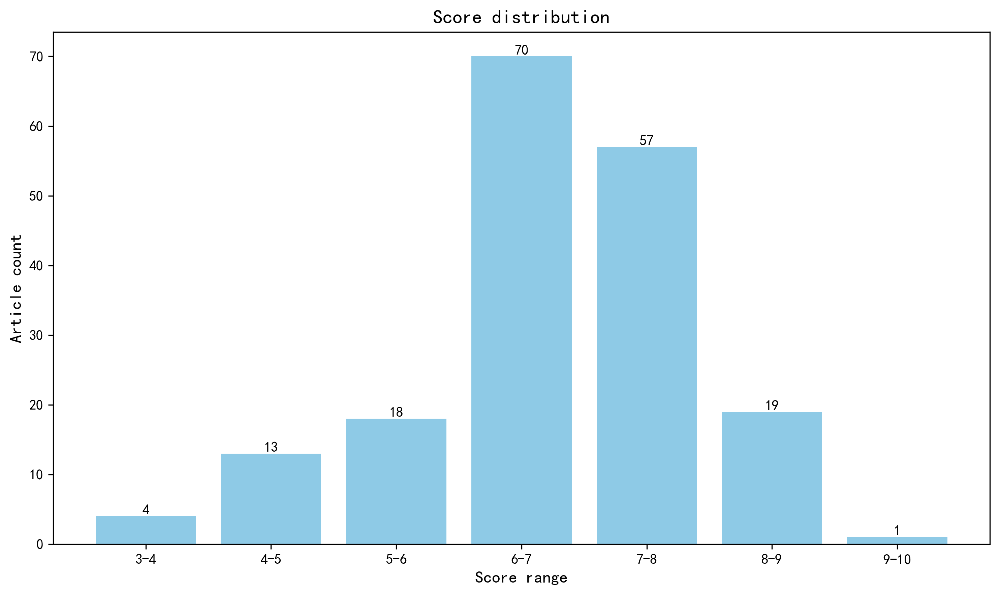

神经科学快讯·第006期 PerturbFate重塑多基因因果解析范式：AD早期突触时序窗与OCD前额叶因果映射 (2026-04-18)
📊 本周概览
历史摘要修订（2026-10-18）：第 006 期保留历史期号、日期与封面。本期 377 条记录中补回 165 条正式摘要，仅对这些条目使用 DeepSeek 重新评分和分级推荐，其余评估保持原值。修订后拟发布 163 篇，其中 3 篇仍缺充分摘要，已保留资料不足提示。来源、旧评分和推荐变更见 getfiles/abstract_history_2026-10-18.json。
- 头条推荐: 1 篇
- 深度解读: 48 篇
- 简要提及: 114 篇
- 跨界启发: 0 篇
- 已过滤: 214 篇
🌏 环球视野

地区与机构按本期原始发表记录、ROR 及城市地址规则分别统计；跨地区合作可重复计入，不作为完整机构排名。评分分布不含“域外局限”文章。
🌍 国家/地区分布 TOP 10
| 排名 | 国家 | 文章数量 |
|---|---|---|
| 1 | United States | 64 |
| 2 | China | 32 |
| 3 | United Kingdom | 24 |
| 4 | France | 15 |
| 5 | Canada | 14 |
| 6 | Germany | 13 |
| 7 | Australia | 11 |
| 8 | Spain | 7 |
| 9 | The Netherlands | 7 |
| 10 | Belgium | 6 |
地区计次合计: 248 次；取得地区信息 145/182 篇
🏢 研究机构 TOP 10
| 排名 | 机构 | 文章数量 |
|---|---|---|
| 1 | Johns Hopkins University | 10 |
| 2 | Centre National de la Recherche Scientifique | 10 |
| 3 | Howard Hughes Medical Institute | 9 |
| 4 | Harvard University | 9 |
| 5 | University of Cambridge | 6 |
| 6 | University of Washington | 6 |
| 7 | Inserm | 6 |
| 8 | Chinese Academy of Sciences | 5 |
| 9 | University of Chinese Academy of Sciences | 5 |
| 10 | Shanghai Jiao Tong University | 5 |
📊 评分分布
| 评分区间 | 文章数量 |
|---|---|
| 3-4 | 4 |
| 4-5 | 13 |
| 5-6 | 18 |
| 6-7 | 70 |
| 7-8 | 57 |
| 8-9 | 19 |
| 9-10 | 1 |
总计: 182 篇评分文章
📈 各领域文章分布
| 领域 | 深度解读 | 简要提及 | 总计 |
|---|---|---|---|
| 分子与细胞神经科学 | 10 | 22 | 32 |
| 系统与环路神经科学 | 9 | 21 | 30 |
| 未知领域 | 0 | 26 | 26 |
| 认知神经科学 | 10 | 5 | 15 |
| 感觉与运动神经科学 | 5 | 10 | 15 |
| 临床与转化神经科学 | 6 | 8 | 14 |
| 方法学 | 4 | 5 | 9 |
| 计算与理论神经科学 | 0 | 9 | 9 |
| 发育神经科学 | 4 | 4 | 8 |
| 社会与情感神经科学 | 0 | 4 | 4 |
合计: 深度解读 48 篇，简要提及 114 篇，共 162 篇
🥇 头条推荐（9.0+分）
中文标题: 通过 PerturbFate 绘制黑色素瘤耐药性的汇聚调控图谱
作者: Zihan Xu, Ziyu Lu, Aileen Ugurbil et al.
单位: Laboratory of Single-Cell Genomics and Population Dynamics, Rockefeller University, New York, NY, USA. zxu@rockefeller.edu.; Laboratory of Single-Cell Genomics and Population Dynamics, Rockefeller University, New York, NY, USA.; David Rockefeller Graduate Program in Bioscience, Rockefeller University, New York, NY, USA. zxu@rockefeller.edu. 等
研究地区: United States
关键词: 单细胞多组学, CRISPR干扰筛选, 基因调控网络, 高通量方法学, 黑色素瘤模型
亮点: PerturbFate平台通过多模态单细胞测序，揭示了不同基因扰动如何收敛至相同的细胞状态，为解析复杂疾病机制提供了通用的高通量因果推断框架。
核心优势: 技术突破性强：将CRISPR干扰与多模态单细胞组学（染色质、新生转录、稳态转录）结合，实现了从基因型到表型的系统性因果映射，且具备极高的可扩展性和成本效益。
研究局限: 生物学背景局限于黑色素瘤药物耐药性，非神经科学直接相关疾病；多模态数据整合的计算复杂度极高，对领域外生物学家存在较高的方法学门槛。
目标读者: 计算系统生物学家、单细胞基因组学开发者、致力于解析神经退行性疾病或精神疾病中多基因协同效应的神经科学家。
推荐理由: 尽管本研究聚焦于黑色素瘤耐药机制，但其核心贡献在于开发了PerturbFate这一革命性的高通量单细胞平台。该平台能够同时解析从染色质重塑、新生转录到稳态转录组的多层次调控动态，为理解复杂基因扰动如何收敛至特定细胞状态提供了前所未有的分辨率。对于神经科学家而言，这种技术范式极具借鉴意义，特别是在解析神经系统发育、突触可塑性或神经退行性疾病中，多重遗传风险因子如何通过非线性交互导致特定神经元亚型功能障碍或命运决定时。其处理大规模组合扰动数据的能力，也为构建高精度的脑部基因调控网络提供了新的计算框架和实验标准。
📚 精选文献（按领域分类）
临床与转化神经科学
Data-driven modelling of tau pathology reveals distinct progressive supranuclear palsy subtypes.
深度解读 8.5/10中文标题: 数据驱动的tau病理建模揭示不同的进行性核上性麻痹亚型
作者: Patrick W Cullinane, Jacy Bezerra Parmera, Hemanth Nelvagal et al.
单位: Department of Clinical and Movement Neurosciences, UCL Queen Square Institute of Neurology, University College London, London WC1N 3BG, UK.; Reta Lila Weston Institute of Neurological Studies, UCL Queen Square Institute of Neurology, London WC1N 1PJ, UK.; Queen Square Brain Bank for Neurological Disorders, UCL Queen Square Institute of Neurology, London WC1N 1PJ, UK. 等
研究地区: United Kingdom, Brazil
关键词: tau蛋白, 进行性核上性麻痹, 数据驱动建模, 病理传播, 神经退行性疾病, 临床异质性
亮点: 基于241例病理确诊PSP患者的全脑切片定量分析，首次揭示三种不同的tau病理时空进展模式，将临床异质性与网络传播机制直接联系起来。
核心优势: 大样本病理确诊队列结合自动化定量、SuStaIn算法与多模态遗传数据，系统解析了PSP亚型的病理进展规律，证据等级高。
研究局限: 回顾性设计且仅基于单一脑库样本，亚型划分的生物学效度及跨中心可重复性仍需前瞻性验证；TDP-43共病理的机制推断尚属关联性。
目标读者: 神经病理学家、运动障碍疾病研究者、计算神经科学家及神经退行性疾病建模专家
推荐理由: 该研究利用数据驱动建模方法，揭示了进行性核上性麻痹（PSP）中tau病理的不同时空传播模式，并识别出与临床表型相关的不同亚型。这项工作不仅为PSP的异质性提供了病理机制解释，也展示了计算建模在神经退行性疾病研究中的潜力，有助于推动个性化诊疗策略的发展。
Rhesus macaques with an OPA1 mutation demonstrate features of autosomal dominant optic atrophy.
深度解读 8.2/10中文标题: 携带OPA1突变的恒河猴表现出常染色体显性视神经萎缩特征
作者: Tracy N Jaggers, Ana Ripolles-Garcia, Ala Moshiri et al.
单位: Department of Molecular and Human Genetics, Baylor College of Medicine, Houston, TX 77030.; Department of Surgical and Radiological Sciences, School of Veterinary Medicine, University of California, Davis, Davis, CA 95616.; Department of Ophthalmology and Vision Science, School of Medicine, University of California, Davis, Sacramento, CA 95817. 等
研究地区: United States
关键词: 非人灵长类, OPA1, 视神经病变, 视网膜神经节细胞, 线粒体, 疾病模型
亮点: 自发OPA1突变恒河猴首次复现ADOA核心表型，为线粒体视神经病变提供可转化的灵长类模型
核心优势: 在自发非人灵长类突变体中整合临床影像、电生理、组织病理与超微结构多模态证据，并揭示与人类患者一致的显著表型异质性
研究局限: 样本量有限且为单一家族/单一位点突变，缺乏纵向疾病进展与治疗干预验证，因果机制仍以相关性观察为主
目标读者: 神经眼科、视网膜神经节细胞与线粒体动力学研究者、疾病模型与基因治疗转化科学家
推荐理由: 该研究鉴定出恒河猴OPA1自发错义突变，成功构建了首个非人灵长类常染色体显性视神经萎缩（ADOA）模型。通过多模态评估，再现了人类患者的视网膜神经纤维层变薄、视网膜神经节细胞丢失及线粒体密度下降等核心特征，为ADOA的病理机制研究和治疗策略开发提供了高度转化的动物平台。
Blood mtDNA markers of mitochondrial subtype and early-onset Parkinson's disease biology.
深度解读 7.7/10中文标题: 血液mtDNA标记揭示线粒体亚型与早发性帕金森病生物学
作者: Anne Grünewald, Felix Knab, Milan Zimmermann et al.
单位: Institute of Neurogenetics, University of Lübeck, Lübeck, 23538 Germany.; Luxembourg Centre for Systems Biology (LCSB), University of Luxembourg, Esch-sur-Alzette, 4362 Luxembourg.; Department of Neurodegenerative Diseases, Hertie Institute for Clinical Brain Research, University of Tübingen, Tübingen, 72076 Germany. 等
研究地区: Luxembourg, Germany, Italy
关键词: 帕金森病, 线粒体DNA, 液体活检, 生物标志物, 体细胞突变, 拷贝数变异
亮点: 外周血线粒体DNA缺失负荷与7S DNA可作为早发性及遗传性帕金森病线粒体亚型的微创分层标志物
核心优势: 在776例血液及72例脑脊液样本中整合mtDNA缺失、7S DNA、拷贝数与多基因风险评分、α-突触核蛋白播种、NfL等多模态数据，并在前驱期与转换者中验证早期可检测性
研究局限: mtDNA单独区分度仅AUC=0.66，不能作为独立诊断标志物；横断面设计为主，机制因果性与纵向预测价值有限，CSF细胞外囊泡样本量偏小
目标读者: 帕金森病与线粒体生物学研究者、运动障碍临床医生、生物标志物与多模态分层转化研究者
推荐理由: 该研究聚焦帕金森病线粒体功能障碍，通过分析血液mtDNA大弧缺失、7S DNA丰度及拷贝数，揭示了体细胞mtDNA改变作为早期帕金森病生物标志物的潜力。其创新在于将线粒体基因组完整性指标与临床转化结合，为PD早期诊断和分型提供了可重复的外周血检测策略，对理解线粒体在神经退行中的核心作用具有重要价值。
PTEN restrains SHH medulloblastoma growth through cell autonomous and nonautonomous mechanisms.
深度解读 7.4/10中文标题: PTEN通过细胞自主与非自主机制抑制SHH型髓母细胞瘤生长
作者: Zhimin Lao, Salsabiel El Nagar, Yinwen Liang et al.
单位: Developmental Biology Program, Sloan Kettering Institute, Memorial Sloan Kettering Cancer Center, New York, United States.; Biochemistry, Cell and Molecular Biology Program, Weill Cornell Graduate School of Medical Sciences, New York, United States.
研究地区: United States
关键词: SHH型髓母细胞瘤, PTEN, 小鼠模型, 单细胞转录组, 肿瘤微环境, 细胞竞争
亮点: PTEN缺失通过细胞自主增殖促进与细胞非自主免疫逃逸的双重机制，加速SHH型髓母细胞瘤的进展与分化。
核心优势: 结合散发性SmoM2小鼠模型与单细胞转录组学，区分了PTEN纯合与杂合缺失的剂量效应，并揭示分化区域巨噬细胞浸润减少这一非自主免疫机制。
研究局限: 机制解析主要依赖小鼠模型与相关性转录组数据，缺乏对巨噬细胞功能因果性操控实验；人类SHH-MB亚型中PTEN突变频率偏低，临床转化外推受限。
目标读者: 小儿神经肿瘤学、SHH信号通路、肿瘤免疫微环境及髓母细胞瘤遗传学研究者
推荐理由: 该研究利用散发性SHH型髓母细胞瘤小鼠模型，结合单细胞转录组与遗传学操作，揭示PTEN缺失通过细胞自主与非自主机制加速肿瘤发生并驱动分化。PTEN缺失增加肿瘤外显率、促进分化亚型出现，并重塑微环境。研究将肿瘤抑制因子与发育信号通路、分化状态及微环境交互联系起来，为SHH-MB预后标志物和靶向治疗提供了新视角。
中文标题: GABA转氨酶抑制对离体癫痫样活动的抑制作用依赖于GABA(B)受体和GABA转运体1型（GAT1）
作者: Gabriela Holmes-Léon, Ning Li, Joe Albrecht et al.
单位: Departments of Neurology, University of Washington, Seattle, Washington.; Pathology and Laboratory Medicine, University of Washington, Seattle, Washington.; Epilepsy Center of Excellence, VA Puget Sound, Seattle, Washington 98108. 等
研究地区: United States
关键词: 海马脑片, 小鼠, GABA_B受体, GAT1, vigabatrin, 癫痫样放电
亮点: 临床抗癫痫药vigabatrin通过GABA(B)受体与GIRK通道抑制体外癫痫样放电，且该效应依赖GAT1功能
核心优势: 结合药理学阻断、GABA(B)受体拮抗剂、GIRK通道阻断剂与GAT1敲除小鼠，逐层验证了vigabatrin效应的受体与转运体依赖性
研究局限: 仅基于雄性小鼠海马切片4AP模型，缺乏在体癫痫模型验证，机制模型（GAT1热力学平衡改变）为推测性，未直接测量胞外GABA浓度或GAT1构象动态
目标读者: 癫痫机制与抗癫痫药物开发研究者、GABA能突触传递与转运体生物学家、神经药理学与电生理研究者
推荐理由: 该研究利用4-氨基吡啶诱导的海马脑片癫痫样放电模型，揭示了GABA转氨酶抑制剂vigabatrin的抗癫痫效应依赖于GABA_B受体和GABA转运体GAT1。这一发现挑战了传统抗癫痫药物主要靶向GABA_A受体的观点，将代谢型GABA_B受体和GABA再摄取机制置于癫痫治疗靶点的核心位置。研究不仅为理解vigabatrin的复杂药理作用提供了新视角，也为开发针对GABA_B受体-GAT1通路的联合治疗策略奠定了实验基础，对临床难治性癫痫的转化研究具有重要提示意义。
Dissociating executive prefrontal substrates following capsulotomy in obsessive-compulsive disorder.
简要提及 7.0/10中文标题: 强迫症内囊前肢毁损术后执行功能前额叶基质的分离
作者: Yijie Zhao, Hailun Cui, Yingying Zhang et al.
单位: Institute of Science and Technology for Brain-Inspired Intelligence, Fudan University, Shanghai 201210, China.; Department of Neurosurgery, Huashan Hospital, Shanghai Medical College, Fudan University, Shanghai 200040, China.; Clinical Research Center for Mental Disorders, Shanghai Pudong New Area Mental Health Center, School of Medicine, Tongji University, Shanghai 200124, China. 等
研究地区: China, United Kingdom
关键词: 强迫症, 内囊前肢毁损术, 前额叶, 执行功能, fMRI, 人类
摘要: 术后 OCD 患者在高冲突下保留灵活性、工作记忆与冲突加工却持续受损，据此提出“状态 vs 特质”执行功能分离框架
优势: 在三组被试、三项执行任务（其中两项同步任务态 fMRI）中，将内囊前肢毁损术（capsulotomy）的选择性效应与 OCD 本身的缺陷分离开来，为精准神经调控的患者选择提供了认知表型层面的证据 局限: 样本量偏小（术后 23 例）、横断面设计无法排除术前组间差异与选择偏倚；flanker 任务仅有行为数据、缺乏神经影像；术后患者用药与病程等混杂因素控制有限，且术语“executive prefrontal substrates”的解剖学特异性不足 受众: 难治性 OCD 的神经调控/精神外科研究者、执行功能与认知控制领域的认知神经科学家、fMRI 方法学与转化精神病学读者
中文标题: 成人注意缺陷多动障碍中清醒期类睡眠慢波介导注意力与警觉困难
作者: Elaine Pinggal, James Jackson, Anikó Kusztor et al.
单位: School of Psychological Sciences, Monash University, Clayton, Victoria 3800, Australia.; School of Psychological Sciences, Monash University, Clayton, Victoria 3800, Australia elaine.pinggal@monash.edu thomas.andrilon@monash.edu.; Turner Institute for Brain and Mental Health & School of Psychological Sciences, Faculty of Medicine, Nursing, and Health Sciences, Monash University, Melbourne, Victoria 3800, Australia. 等
研究地区: Australia, France
摘要: 清醒期睡眠样慢波成为连接ADHD注意缺陷与睡眠-觉醒系统失调的候选电生理机制
优势: 将清醒期睡眠样慢波这一睡眠剥夺研究中已知现象引入ADHD，并用贯序中介分析把慢波密度与行为波动、心智游移/空白及主观困倦串联起来，概念桥梁清晰。 局限: 样本量中等（ADHD 32例/对照31例），横断设计无法确立慢波与注意缺陷的因果方向；慢波检测与心理状态探针的方法学细节及混杂因素（如用药、共病、睡眠史）控制程度尚不足以支撑机制性结论。 受众: 注意与觉醒调控、ADHD神经生理学、睡眠-清醒电生理及转化精神病学研究者和临床神经科学家
中文标题: 阿尔茨海默病级联反应中情景记忆网络的功能障碍
作者: René Lattmann, Niklas Vockert, Emrah Düzel
单位: German Center For Neurodegenerative Diseases (Dzne), Magdeburg, Germany.
资深研究者: Emrah Düzel (h指数=90)
摘要: 利用千例纵向fMRI与疾病进展模型，揭示AD早期突触功能障碍（过度激活）独立于神经退行性变驱动认知衰退的关键时间窗。
优势: 罕见的超大规模纵向功能影像数据集（>1000次测量）结合DPM建模，提供了高统计效力且时序清晰的因果推断证据，明确区分了突触 dysfunction 与 neurodegeneration 的独立贡献。 局限: 主要依赖相关性分析而非干预性实验验证因果关系；fMRI信号作为突触功能的间接代理指标，其特异性仍受血流动力学混淆因素的潜在影响。 受众: 阿尔茨海默病机制研究者、计算精神病学/神经科学专家、临床试验设计者及系统神经科学家
中文标题: Mecp2缺陷在Rett综合征临床前模型中诱导吞咽困难
作者: Luiz Marcelo Oliveira, Maryam Saeed Aslam, Jan-Marino Ramirez et al.
单位: Norcliffe Foundation Center for Integrative Brain Research, Seattle Children's Research Institute, Seattle, WA 98101.; Department of Neurological Surgery, University of Washington School of Medicine, Seattle, WA 98108.; Department of Anesthesiology and Critical Care Medicine, The George Washington University, Washington, DC 20052.
研究地区: United States
摘要: Mecp2缺陷小鼠的吞咽-呼吸协调与脑干运动核胆碱能神经元退变构成Rett综合征吞咽困难的可操作神经肌肉机制
优势: 首次将Rett综合征的吞咽障碍与舌下神经核、面神经核和三叉神经运动核中ChAT+细胞减少直接联系，并用吞咽-呼吸时序异常提供功能层面的因果线索。 局限: 证据主要为相关性（运动核胆碱能标志物减少与下颌肌电复合波减弱），缺乏因果操纵（如特异性消融或恢复ChAT+细胞）及与人类Rett综合征吞咽生理的直接对照；样本量、亚症状阶段划分和效应量信息在摘要中未充分披露。 受众: Rett综合征与神经发育障碍研究者、呼吸-吞咽节律与脑干运动控制研究者、临床转化与疾病模型研究者
中文标题: 无线电刺激植入物通过改善括约肌神经肌肉功能治疗混合性尿失禁
作者: Tianxiang Zheng, Li Tao, Qiuhua Gao et al.
单位: Ruijin Hospital, School of Medicine, Shanghai Jiao Tong University, Shanghai, China.; School of Mechanical Engineering, Shanghai Jiao Tong University, Shanghai, China.; Global College, Shanghai Jiao Tong University, Shanghai, China. 等
研究地区: China, Singapore, Türkiye, Germany
摘要: 微型无线植入物通过原位电刺激实现尿道括约肌神经肌肉重塑，为混合性尿失禁提供非侵入式治疗新范式。
优势: 工程学与神经科学的深度交叉：将器件体积缩小至<0.3 cm³并实现无线供能，同时在动物模型中展示了显著的生理功能恢复（>90%缓解率）及潜在的神经可塑性机制。 局限: 证据链主要局限于啮齿类动物模型，缺乏灵长类或人类临床前数据；‘神经肌肉重塑’的具体分子机制阐释可能不够深入，且长期生物相容性及设备稳定性数据尚需更多验证。 受众: 神经工程师、泌尿系统神经调控研究者、柔性电子材料科学家及转化医学专家
中文标题: 认知正常老年人血浆磷酸化tau 217与Aβ、tau及认知的纵向轨迹
作者: Hyun-Sik Yang, Juliana A U Anzai, Wai-Ying Wendy Yau et al.
单位: Department of Neurology, Massachusetts General Hospital, Boston, MA, USA. hyang18@bwh.harvard.edu.; Department of Neurology, Brigham and Women's Hospital, Boston, MA, USA. hyang18@bwh.harvard.edu.; Harvard Medical School, Boston, MA, USA. hyang18@bwh.harvard.edu. 等
研究地区: United States, Australia
摘要: 确立血浆pTau217作为认知正常老年人阿尔茨海默病病理级联反应的超早期预测因子，界定‘零风险’阈值。
优势: 利用高质量纵向队列结合质谱法与多模态PET成像，在Aβ-PET阴性人群中验证了生物标志物的预测时序性，证据链完整且严谨。 局限: 属于对已知生物标志物临床效用的深化验证而非机制性或技术性颠覆，缺乏对pTau217上游调控机制的新见解。 受众: 阿尔茨海默病临床研究专家、神经影像学家、生物标志物开发人员及系统生物学家
中文标题: 基于功能连接矩阵生成重放的fMRI脑疾病诊断持续学习
作者: Qianyu Chen, Shujian Yu
资深研究者: Qianyu Chen (h指数=18); Shujian Yu (h指数=21)
摘要: 首次将生成式持续学习框架应用于多中心fMRI诊断，有效解决灾难性遗忘与数据隐私问题。
优势: 针对fMRI数据异构性和稀缺性，创新性地结合了结构感知VAE生成回放与分层上下文Bandit采样，方法学设计严谨且具有工程实用性。 局限: 作为arXiv预印本，缺乏独立外部验证及生物学机制层面的深入解释；主要贡献在于计算方法优化，对神经科学基础理论的直接推动有限，且未提供多模态（如结构MRI或DTI）交叉验证。 受众: 计算神经科学家、医学影像AI研究人员、致力于多中心临床数据整合的系统生物学家
Triggered minds: key considerations for symptom provocation research in anxiety-related disorders
简要提及 4.4/10中文标题: 触发思维：焦虑相关障碍症状诱发研究的关键考量
作者: Xena Serifova, Bart Boets, Laura Luyten
单位: Center for Developmental Psychiatry, Faculty of Medicine, KU Leuven, Leuven, Belgium; University Center for Obsessive-Compulsive Disorders, UPC KU Leuven, Leuven, Belgium. Electronic address: xena.serifova@kuleuven.be.; Leuven Brain Institute, KU Leuven, Leuven, Belgium 等
研究地区: Belgium
摘要: 为焦虑障碍症状诱发研究提供标准化框架与严谨性指南，旨在解决该领域长期存在的方法学异质性问题。
优势: 发表于Trends in Neurosciences，由该领域资深专家撰写，系统性地整合了实验设计、伦理考量及技术整合的最佳实践，对提升领域内研究的可重复性和临床转化价值具有显著的指导意义。 局限: 作为观点/综述类文章（Perspective/Review），缺乏原始实验数据验证，未提出颠覆性的新理论或全新技术手段，因此在突破性和证据强度上无法达到Nature/Science主刊的实证研究标准。 受众: 从事焦虑症、OCD及PTSD机制研究的临床神经科学家、实验心理学家及方法学研究者
分子与细胞神经科学
中文标题: 人甘氨酸转运体2的转运与抑制机制
作者: Wenming Ji, Yuanzhi Yu, Zirui Liu et al.
单位: State Key Laboratory of Bioactive Substance and Function of Natural Medicines, Institute of Materia Medica, Chinese Academy of Medical Sciences & Peking Union Medical College, Beijing, PR China.; School of Clinical Pharmacy, Shenyang Pharmaceutical University, Shenyang, PR China.; State Key Laboratory of Bioactive Substance and Function of Natural Medicines, Institute of Materia Medica, Chinese Academy of Medical Sciences & Peking Union Medical College, Beijing, PR China. wujingxiang@imm.ac.cn.
研究地区: China
关键词: 冷冻电镜, 甘氨酸转运体, 突触传递, 抑制剂机制, 构象变化, 疼痛靶点
亮点: 人源GlyT2三种功能状态冷冻电镜结构揭示递质转运与变构抑制的分子机制，为非阿片类镇痛药设计提供结构蓝图。
核心优势: 首次系统解析hGlyT2的apo、底物结合及两种抑制剂结合状态结构，清晰阐明EL4下变构口袋及TM1b楔形阻断机制，结构-功能对应关系扎实。
研究局限: 缺乏电生理或细胞转运功能实验对结构推论的直接验证，抑制剂选择性/亲和力的定量药理数据有限，机制模型仍需功能学证据闭环。
目标读者: 膜转运蛋白结构生物学、神经递质转运与突触传递研究者及镇痛药物开发人员
推荐理由: 该研究利用冷冻电镜解析了人源甘氨酸转运体2（hGlyT2）在无底物、底物结合及抑制剂结合三种功能状态下的高分辨率结构，首次揭示了其向内开放构象及底物/抑制剂的识别与转运机制。hGlyT2是甘氨酸能突触传递的关键调控者，也是镇痛药物的重要靶点。该工作不仅为理解神经递质再摄取的分子基础提供了结构框架，也为基于结构的镇痛药物设计提供了关键信息，对分子与细胞神经科学及药理学研究具有重要推动作用。
中文标题: 精神分裂症相关蛋白DISC1通过保守的UVR二聚体形成多价四聚体枢纽
作者: Jin Chuan Zhou, Jiri Kratochvil, Fei Ye et al.
单位: Department of Biochemistry, University of Oxford, Oxford, UK. jin.zhou@bioch.ox.ac.uk.; Kavli Institute for Nanoscience Discovery, University of Oxford, Oxford, UK. jin.zhou@bioch.ox.ac.uk.; Kavli Institute for Nanoscience Discovery, University of Oxford, Oxford, UK. 等
研究地区: United Kingdom, Hong Kong, China
关键词: DISC1, 冷冻电镜, 四聚体, 精神分裂症, 蛋白质结构, UVR结构域
亮点: 首次解析精神分裂症相关蛋白DISC1核心区的完整冷冻电镜结构，揭示其通过细菌来源UVR结构域组装成多价四聚体信号枢纽。
核心优势: 用冷冻电镜解出DISC1保守核心区的完整结构，清晰展示UVR二聚体介导的四聚体组装，以及四聚化与配体结合在结构上相互独立。
研究局限: 结构主要基于体外重组蛋白，缺少神经元内源验证；四聚化如何影响精神疾病相关功能仍属推断，未提供直接疾病模型证据。
目标读者: 结构生物学、神经发育与精神疾病分子机制研究者
推荐理由: 该研究利用冷冻电镜解析了精神分裂症相关蛋白DISC1保守核心区的完整结构，首次揭示其通过保守的UVR二聚体形成多价四聚体枢纽。这一结构不仅阐明了DISC1多效性功能的分子基础，也为理解其与多种伙伴分子的相互作用提供了框架。对神经科学领域而言，该工作将DISC1的临床遗传学关联提升到结构机制层面，为精神分裂症和抑郁症的病理机制及药物靶点开发提供了新视角。
中文标题: Kinesin-1构象动态受货物敏感的TPR开关控制
作者: Shivam Shukla, Jessica A Cross, Monika Kish et al.
单位: School of Engineering Mathematics and Technology, University of Bristol, Bristol, United Kingdom.; School of Biochemistry and Biomedical Sciences, University of Bristol, Biomedical Sciences Building, University Walk, Bristol, United Kingdom.; School of Chemistry, University of Bristol, Cantock's Close, Bristol, United Kingdom. 等
研究地区: United Kingdom
关键词: Kinesin-1, 货物运输, 构象动态, TPR结构域, 蛋白质设计, 计算建模
亮点: 货物衔接蛋白通过SLiM结合拨动KLC的TPR结构域，解除KHC的CC1“肩部”对接，从而以变构方式开启kinesin-1自抑制并释放马达活性。
核心优势: 在完整异源四聚体holoenzyme层面整合蛋白质设计、计算建模、生物物理与电镜，直接可视化TPR肩部及其在SLiM结合或界面破坏后的位移，将货物识别与马达域开放及MAP7结合串联为机制链条。
研究局限: 关键构象状态与激活中间体的动态证据仍以体外重构和静态结构为主，细胞内生理浓度、货物多样性及神经元轴突运输中的普适性尚未系统验证。
目标读者: 分子马达、细胞骨架运输、神经细胞生物学及计算结构生物学研究者
推荐理由: 该研究结合蛋白质设计、计算模拟与生物物理手段，揭示了Kinesin-1通过TPR结构域感知货物信号并调控构象动态的分子机制。这一工作不仅阐明了驱动蛋白自抑制与货物激活的耦合原理，也为神经科学中轴突运输的调控研究提供了新范式。其方法学策略可推广至其他马达蛋白与货物适配器的互作研究，对理解神经元内物质运输障碍相关疾病具有重要启示。
中文标题: Mll5单倍剂量不足通过失调的TREM2-SGK3-GSK3β信号通路减弱小胶质细胞吞噬功能，并在小鼠中重现孤独症谱系障碍样行为
作者: Shumin Gao, Qingxiu Lin, Xiaotong Liu et al.
单位: Department of Neurobiology, School of Basic Medical Sciences, National Institute on Drug Dependence, Peking University, Beijing, China.; Bejing Key Laboratory of Drug Dependence Research, Peking University, Beijing, China.; Institute of Brain Science and Brain-inspired Research, Shandong First Medical University & Shandong Academy of Medical Sciences, Jinan, China. 等
研究地区: China
关键词: 小胶质细胞, 吞噬作用, TREM2, GSK3β, 自闭症谱系障碍, 小鼠
亮点: 单倍剂量不足的Mll5通过TREM2-SGK3-GSK3β轴损害小胶质细胞吞噬功能并诱发ASD样行为，锂盐可逆转该表型
核心优势: 从患者来源小胶质细胞到小鼠行为、表观调控与信号通路的多层次证据链，并用GSK3β抑制剂完成药理学回补验证
研究局限: MLL5到TREM2-SGK3-GSK3β的分子级联多为相关性证据，直接结合与因果中介验证不足，单倍剂量不足模型与人类ASD异质性之间的外推有限
目标读者: 神经发育障碍、小胶质细胞生物学、表观遗传学与转化神经药理学研究者
推荐理由: 该研究揭示了Mll5单倍剂量不足通过TREM2-SGK3-GSK3β信号轴损害小胶质细胞吞噬功能，进而导致神经元过度兴奋和自闭症样行为。创新性地将表观遗传调控因子MLL5与小胶质细胞功能及ASD发病机制相联系，为ASD的神经免疫机制提供了新见解，并提示TREM2-SGK3-GSK3β通路作为潜在治疗靶点。研究结合多种技术手段，逻辑严谨，对理解神经发育障碍的细胞特异性机制具有重要推动意义。
中文标题: Trem2通过Gpnmb在光血栓性卒中模型中加重缺血性脑损伤
作者: Xuezhen Chen, Kunyu Li, Siyu Liu et al.
单位: The Brain Cognition and Brain Disease Institute, Shenzhen Institutes of Advanced Technology, Chinese Academy of Sciences, Shenzhen 518055, China.; Ministry of Education Key Laboratory of Gene Function and Regulation, Guangdong Province Key Laboratory of Pharmaceutical Functional Genes, State Key Laboratory of Biocontrol, School of Life Sciences, Sun Yat-sen University, Guangzhou 510275, China.; Bio-X international institute, Faculty of Life and Health Sciences, Shenzhen University of Advanced Technology, Shenzhen 518107, China. 等
研究地区: China, Germany
关键词: Trem2, Gpnmb, 小胶质细胞, 缺血性卒中, 光血栓模型, 神经炎症
亮点: 在光栓性卒中模型中，Trem2通过Gpnmb通路加剧缺血性脑损伤，揭示了与MCAO模型相反的致病作用，并识别出sTrem2/sGpnmb作为预后生物标志物。
核心优势: 利用光栓性卒中模型，该模型能更好地模拟临床中Trem2的上调，结合小鼠-人类转录组学，识别出Gpnmb为保守的下游效应分子，并通过sTrem2/sGpnmb的给予和患者血浆相关性进行了功能验证。
研究局限: 研究结果与MCAO模型中的神经保护作用相矛盾，可能限制其普适性；机制主要停留在Gpnmb关联层面，Trem2-Gpnmb轴的下游信号细节及细胞特异性贡献仍需进一步阐明。
目标读者: 神经免疫学、卒中生物学、微胶质细胞生物学及转化神经科学研究者
推荐理由: 该研究利用光血栓卒中模型，揭示Trem2通过Gpnmb加剧缺血性脑损伤，与MCAO模型中的保护作用形成鲜明对比。这一发现不仅解释了临床中可溶性Trem2升高与不良预后的矛盾，还突出了卒中模型异质性对机制研究的影响。Trem2-Gpnmb轴可能成为卒中治疗的新靶点，并提示小胶质细胞在脑缺血中具有双向调控作用，对转化医学具有重要参考价值。
中文标题: mRNA m(6)A修饰与RNA结合蛋白YTHDF1影响正常和病理性学习中的翻译控制
作者: Zhuoyue Shi, Kailong Wen, Wenqin Fu et al.
单位: Department of Chemistry, The University of Chicago, Chicago, IL 60637.; Department of Neurobiology, The University of Chicago, Chicago, IL 60637.; Committee on Neurobiology, Biological Sciences Division, The University of Chicago, Chicago, IL 60637. 等
研究地区: United States
关键词: m6A修饰, YTHDF1, 翻译调控, 多巴胺D1/D2神经元, 小鼠, 学习与记忆
亮点: m6A-YTHDF1翻译控制轴是D1/D2通路特异性学习与病理性可塑性共享的分子开关
核心优势: 以细胞类型特异性Ythdf1敲除结合行为、电生理与翻译检测，在D1/D2神经元中分离出m6A依赖的可塑性与学习效应，并将适应性学习与病理性学习统一到同一翻译调控机制下
研究局限: 核心结论依赖药理学与遗传学操纵的行为学关联，缺乏对YTHDF1靶转录本的直接翻译组学鉴定及因果回路层面的在体验证；与Mettl14表型相似性仅支持而未能证明YTHDF1为唯一或主要介导者
目标读者: 分子与细胞神经科学、学习记忆与突触可塑性、神经精神疾病机制及转化研究学者
推荐理由: 该研究揭示了mRNA m6A修饰及其阅读蛋白YTHDF1在正常学习与病理性学习中的关键作用，并发现其在多巴胺D1和D2受体表达神经元中的差异性需求。通过结合分子、细胞和行为层面，研究为翻译调控如何贡献于神经可塑性提供了新证据，并提示YTHDF1可能作为干预适应不良性学习的靶点。这项工作将表观转录组学与行为神经科学紧密连接，对理解学习记忆的分子基础及精神疾病治疗具有重要启示。
中文标题: 电压门控质子通道Hv1/VSOP调控小胶质细胞中F-肌动蛋白与内体的相互作用
作者: Takafumi Kawai, Daisuke Yoshioka, Pattama Wiriyasermkul et al.
单位: Department of Integrative Physiology, Graduate School of Medicine, The University of Osaka, Osaka 565-0871, Japan.; Center for Systemic Intelligence in Biomedicine, The Jikei University School of Medicine, Tokyo 105-8461, Japan.; Department of Molecular and Cellular Physiology, Graduate School of Medicine, Ehime University, Ehime 791-0295, Japan. 等
研究地区: Japan
关键词: 小胶质细胞, Hv1/VSOP, 内体, F-actin, 膜片钳, 高分辨成像
亮点: Hv1质子通道在小胶质细胞内体膜上现身，以离子传导活性反向调控F-actin动态，改写电压门控质子通道的定位与功能范式
核心优势: 多模态证据链完整：内体膜片钳直接记录内体Hv1功能、高分辨活细胞成像捕捉内体-F-actin动态结合、邻近标记蛋白组学锁定CAPZ介导机制，并以传导缺陷突变体和CAPZ敲除实现功能因果验证。
研究局限: 机制链条仍有关键缺口——Hv1的质子传导如何具体改变CAPZ活性或barbed end捕获动力学未阐明；表型主要限于体外小胶质细胞，缺乏体内生理或病理（如损伤、吞噬）情境验证，且内体Hv1如何分选与维持亦未涉及。
目标读者: 离子通道生物学、小胶质细胞与神经免疫、细胞骨架与内体运输研究者
推荐理由: 该研究在小胶质细胞中发现电压门控质子通道Hv1/VSOP存在内体池，并首次揭示其通过调控内体运输与F-actin细胞骨架的相互作用来影响小胶质细胞功能。结合内体膜片钳与高分辨成像，证明内体Hv1与F-actin动态关联，且Hv1缺失导致肌动蛋白丝延长。这一发现突破了Hv1仅定位于质膜的传统观点，为小胶质细胞形态可塑性和免疫监视机制提供了全新视角，对理解神经炎症和相关脑疾病具有重要意义。
中文标题: 不止于小胶质细胞耗竭：PLX5622激活肝脏组成型雄烷受体以改变麻醉和成瘾反应
作者: Kelei Cao, Wang Cheng, Liyao Qiu et al.
单位: Department of Neurology of Second Affiliated Hospital and Liangzhu Laboratory, School of Brain Science and Brain Medicine, Zhejiang University School of Medicine, Hangzhou 310058, China; MOE Frontier Science Center for Brain Science and Brain-machine Integration, State Key Laboratory of Brain-machine Intelligence, Zhejiang University, Hangzhou 311121, China; NHC and CAMS Key Laboratory of Medical Neurobiology, Zhejiang Key Laboratory of Pain Perception and Neuromodulation, Zhejiang University, Hangzhou 310058, China 等
研究地区: China, Australia
关键词: PLX5622, 小胶质细胞耗竭, 组成型雄烷受体 (CAR), 肝脏-脑轴, 麻醉觉醒, 尼古丁成瘾
亮点: 揭示广泛使用的微胶质细胞清除剂PLX5622存在严重的脱靶效应，其通过激活肝脏CAR受体加速药物代谢，从而混淆神经行为学表型解读。
核心优势: 利用转基因微胶质细胞清除模型与药理学抑制进行严谨对照，确证了PLX5622的非特异性肝外作用机制，从根本上修正了该领域大量既往研究的解释逻辑。
研究局限: 主要聚焦于PLX5622这一特定化合物的药代动力学缺陷，虽警示意义重大，但未提供完全替代性的、无脱靶效应的新型CSF1R抑制剂方案。
目标读者: 神经免疫学家、成瘾研究人员、麻醉学家及所有使用PLX5622进行微胶质细胞功能研究的系统生物学家。
推荐理由: 本研究对神经科学领域广泛使用的小胶质细胞耗竭工具PLX5622提出了关键的方法学警示。作者通过对比转基因耗竭模型与药物处理模型，有力证明了PLX5622诱导的麻醉加速觉醒及尼古丁戒断症状缓解并非 solely 源于小胶质细胞缺失，而是由药物激活肝脏组成型雄烷受体（CAR）介脱的全身性代谢效应所致。这一发现揭示了“肝脏-脑轴”在调节中枢神经系统状态中的重要作用，强调了在解释药理学干预结果时区分特异性细胞功能与系统性脱靶效应的必要性。对于依赖CSF1R抑制剂进行因果推断的研究者而言，这是一项必须参考的控制实验标准，有助于避免对微胶质细胞功能的误读。
中文标题: 细胞类型靶向线粒体移植挽救细胞退化
作者: Temurkhan Ayupov, Verónica Moreno-Juan, Serena Curtoni et al.
单位: Department of Biosystems Science and Engineering, ETH Zürich, Basel, Switzerland.; Department of Ophthalmology, University of Basel, Basel, Switzerland.; Institute of Molecular and Clinical Ophthalmology Basel, Basel, Switzerland. 等
研究地区: Switzerland, United Kingdom
关键词: 线粒体移植, 细胞类型特异性递送, 神经退行性疾病, 蛋白质工程, 治疗性策略
亮点: 首创MitoCatch系统实现线粒体的细胞类型特异性靶向递送，为神经退行性疾病提供精准治疗新范式。
核心优势: 解决了线粒体移植长期缺乏细胞特异性的核心瓶颈，结合了合成生物学（双特异性结合剂）与细胞生物学机制验证，且在多种细胞类型及体内模型中展示了功能恢复。
研究局限: 体内长期安全性（如免疫原性、线粒体DNA冲突）及大规模生产的转化挑战未在摘要中充分阐述，需依赖全文数据支撑。
目标读者: 神经科学家、线粒体生物学家、基因治疗开发者、系统生物学家
推荐理由: 本研究针对线粒体功能障碍相关的难治性疾病（如神经退行性疾病），开发了名为MitoCatch的创新递送系统。通过利用不同类型的蛋白质结合剂，该系统实现了供体线粒体向特定靶细胞类型的精准靶向输送，有效克服了传统线粒体移植缺乏特异性的关键瓶颈。实验结果表明，这种细胞类型针对性的线粒体移植能显著挽救细胞退化。对于神经科学领域而言，这不仅为理解线粒体动力学在神经元存活中的作用提供了新工具，更为阿尔茨海默病、帕金森病等缺乏有效疗法疾病的干预提供了极具潜力的转化医学策略，具有重要的临床前研究价值。
中文标题: 运动神经元的抑制性突触对神经元活动作出稳态响应并调节肌萎缩侧索硬化的发病机制
作者: Kareen Halablab, Gizem Yartas, Natalie Dikwella et al.
单位: Department of Neurobiology & Anatomy, College of Medicine, Drexel University, Philadelphia, Pennsylvania 19129.; German Center for Neurodegenerative Diseases (DZNE), Ulm 89081, Germany.; Department of Neurology, Ulm University, Ulm 89081, Germany. 等
研究地区: Germany, United States, France
关键词: ALS, 运动神经元, 抑制性突触, E/I平衡, 化学遗传学, SOD1G93A小鼠
亮点: 抑制性突触在运动神经元中通过稳态回路响应活动变化，并参与ALS早期致病过程的可调控节点
核心优势: 结合化学遗传学操控（PSAM/DREADD）、E3连接酶偶联胞内抗体降解Gephyrin以及SOD1G93A模型，将抑制性突触簇动态与活动依赖稳态及疾病标志物直接联系
研究局限: 主要基于单一雄性SOD1G93A小鼠品系和P45时间点的共聚焦计数，缺乏电生理与行为/生存验证，且抑制降低与活动增加联合时无净获益，机制解释受限
目标读者: 运动神经元与ALS疾病机制、突触稳态及化学遗传学/蛋白质降解工具开发研究者
推荐理由: 该研究揭示了运动神经元抑制性突触对活动变化的稳态响应机制，并阐明其在ALS发病中的作用。发现SOD1G93A小鼠中GlyR下调而GABAR上调，且这些变化受神经元活动调控。通过E3连接酶偶联的胞内抗体（GFE3）降解GABAR，可调节疾病进程，为ALS治疗提供了新靶点。研究将分子细胞机制与疾病转化紧密结合，对理解E/I失衡在神经退行性疾病中的角色具有重要意义。
中文标题: 人胶质母细胞瘤肿瘤微环境的空间和单细胞特征揭示恶性细胞群落
作者: Jun Lin, Chunpeng Chen, Kun Qu
资深研究者: Jun Lin (h指数=149); Kun Qu (h指数=55)
摘要: 通过超大规模多模态整合，首次系统描绘胶质母细胞瘤中恶性细胞群落的空间拓扑及其与神经突触连接的特异性耦合机制。
优势: 罕见的百例级患者队列结合空间转录组、scRNA-seq、scATAC-seq及Patch-seq的四维多模态验证，特别是利用Patch-seq直接证实胶质瘤-神经元突触连接，提供了极高的证据确凿性。 局限: 尽管样本量大，但作为观察性图谱研究，对鉴定出的细胞群落和互作机制的功能性因果验证（如体内干预实验）相对有限，主要依赖相关性推断。 受众: 神经肿瘤学家、单细胞基因组学专家、计算生物学家及关注脑肿瘤微环境互作的系统神经科学家
中文标题: 人类视交叉上核的空间与单细胞转录组图谱
作者: Qiaoqiao Yang, Haifang Wang, Le Gao et al.
单位: Lingang Laboratory, Shanghai 200031, China.; Department of Neurosurgery, Zhongshan Hospital, Fudan University, Shanghai 200032, China.; Institute of Neuroscience, CAS Center for Excellence in Brain Science and Intelligence Technology, Chinese Academy of Sciences, Shanghai 200031, China. 等
研究地区: China
摘要: 首个人类视交叉上核（SCN）高分辨率时空转录组图谱，揭示昼夜节律主控中心的物种特异性重组与晨型 chronotype 的细胞分子基础。
优势: 填补了从啮齿类动物模型到人类生理机制的关键空白，通过多模态整合（空间转录组+单核测序+GWAS）将微观细胞亚型与宏观行为表型（晨型/夜型）直接关联，具有极高的资源价值和转化潜力。 局限: 作为描述性图谱研究，缺乏体内功能操控实验（如因果性验证）来确证特定神经元亚型对昼夜节律输出的直接驱动作用；且样本量及个体差异对图谱普适性的影响需进一步评估。 受众: 系统神经科学家、昼夜节律研究人员、计算生物学家及精神疾病（如睡眠障碍、抑郁症）转化医学研究者。
中文标题: 人类脊髓中的增强子动态与细胞架构
作者: Elena K Kandror, Mathieu Carriere, Alexis Peterson et al.
单位: Data Shape Team, Centre Inria d'Université Côte d'Azur, 2004 Route des Lucioles, 06560 Valbonne, France.; New York Genome Center, 101 6(th) Avenue, New York, NY 10013, USA.; Department of Neuroscience and Waisman Center, University of Wisconsin-Madison 1500 Highland Avenue, Madison, WI 53705, USA. 等
研究地区: United States, France, United Kingdom
摘要: 揭示人脊髓中染色质可及性与转录激活解耦的'掩蔽增强子'机制及其空间调控网络
优势: 在单细胞和单分子分辨率下，首次系统描绘了健康人脊髓的增强子动态与空间架构，特别是发现了定义细胞身份和分化过渡的'掩蔽增强子'（masked enhancers），挑战了传统的染色质可及性决定论，并整合了表观遗传、转录组及空间位置信息。 局限: 作为描述性资源型研究，虽然提出了新的调控模型，但对特定神经退行性疾病机制的直接因果验证较少，且高度依赖复杂的计算生物学解读，对非计算背景的读者门槛较高。 受众: 系统神经生物学家、表观遗传学家、计算生物学家及从事脊髓疾病与神经发育研究的学者
HSV-1 strain H129 co-opts neuronal synaptic transmission machinery for its transsynaptic spread
简要提及 6.7/10中文标题: HSV-1 H129毒株劫持神经元突触传递机制以实现跨突触传播
作者: Hai-Bin Qin, Yue-Peng Zhou, Min-Hua Luo
资深研究者: Min-Hua Luo (h指数=35)
摘要: 揭示HSV-1 H129株劫持突触囊泡释放机制实现顺行跨突触传播的分子全景。
优势: 首次将病毒传播机制精确锚定于Ca2+依赖性神经递质释放的核心机器（Synaptotagmin-7/SNARE），为优化顺行示踪工具提供了明确的分子设计原则，兼具基础理论突破与应用价值。 局限: 主要基于体外微流控神经元培养系统，缺乏体内复杂神经环路中的动态验证，且未深入探讨宿主免疫反应对这一特定传播路径的潜在调控作用。 受众: 神经环路示踪技术开发人员、病毒神经生物学研究者、突触传递机制专家
中文标题: CA1区海马位置编码的可塑性依赖于突触后膜融合
作者: Mark H Plitt, Konstantin Kaganovsky, Ella Say et al.
单位: Department of Molecular and Cellular Physiology, Stanford University School of Medicine, Stanford, CA, USA; Department of Molecular and Cellular Physiology, Stanford University School of Medicine, Stanford, CA, USA.; Department of Neurobiology, Stanford University School of Medicine, Stanford, CA, USA. 等
研究地区: United States
摘要: 揭示突触后膜融合机制（Stx3）特异性调控海马CA1对新奇刺激的反应及奖赏位置表征，而非基础空间编码。
优势: 将分子层面的突触后膜 trafficking 机制与系统层面的群体神经编码（population coding）及行为计算直接关联，利用Südhof实验室在SNARE蛋白领域的权威背景结合先进的体内钙成像技术，实现了从分子到行为的因果链条闭环。 局限: 主要局限于CA1区域和Stx3单一分子，未深入探讨与其他突触后支架蛋白或上游输入（如CA3 vs EC）的具体交互细节，且钙成像的时间分辨率限制了对其对尖峰时序依赖性可塑性（STDP）微观机制的直接推断。 受众: 系统神经科学家、突触生理学家、计算神经生物学家及关注记忆形成分子机制的研究人员
中文标题: 阿尔茨海默病模型小鼠中淀粉样蛋白-β驱动的类淋巴系统功能障碍由钙离子介导的星形胶质细胞胆固醇增加所驱动
作者: Zhan Zhang, Shaojian Li, Yamei Tang
资深研究者: Zhan Zhang (h指数=44); Shaojian Li (h指数=14)
摘要: 揭示星形胶质细胞钙超载通过胆固醇代谢重编程破坏AQP4极性，从而驱动AD类淋巴系统功能障碍的新机制。
优势: 建立了从分子信号（Ca2+）到代谢产物（胆固醇），再到细胞器动态（AQP4内吞/溶酶体降解）及系统功能（类淋巴清除）的完整因果链条，并提供了老药新用（阿托伐他汀）的转化医学证据。 局限: 主要依赖5xFAD小鼠模型，该模型以Aβ沉积为主而缺乏显著的Tau病理，可能无法完全代表人类AD的复杂异质性；且星形胶质细胞特异性SQLE敲除对全身脂质代谢的潜在长期副作用需进一步评估。 受众: 神经退行性疾病研究人员、胶质生物学专家、脑清除系统研究者及计算系统生物学家
中文标题: 海马雌激素水平、受体类型及表观遗传学对并发急性应激下性别特异性记忆易感性的影响
作者: Rachael E Hokenson, Kiara L Rodríguez-Acevedo, Yuncai Chen et al.
单位: Department of Pediatrics, University of California, Irvine, Irvine, CA 92697, USA.; Department of Systems Pharmacology and Translational Therapeutics, University of Pennsylvania, Philadelphia, PA 19104, USA.; Department of Anatomy/Neurobiology, University of California, Irvine, Irvine, CA 92697, USA 等
研究地区: United States, Canada
摘要: 揭示高生理水平海马雌二醇通过表观遗传机制介导急性多重应激下的性别特异性记忆脆弱性，颠覆了雌激素仅具神经保护作用的传统认知。
优势: 将系统水平的激素波动（发情周期）、特定受体亚型（ERα/ERβ）功能与染色质可及性（表观遗传状态）紧密耦合，构建了从分子到行为的完整因果链条，且由Tallie Z. Baram等stress neurobiology领域顶尖团队背书。 局限: 主要依赖小鼠模型，尽管机制深入，但向人类创伤后应激障碍（PTSD）临床转化的直接证据链仍需补充；急性多重应激（MACS）范式虽新颖，但其生态效度在极端复杂的人类创伤面前仍有简化之嫌。 受众: 系统神经科学家、表观遗传学研究者、精神疾病机制研究人员及关注性别差异医学的计算生物学家
A microglia depletion deep dive
简要提及 6.5/10中文标题: 小胶质细胞耗竭的深度解析
作者: Vishal A. Kanigicherla, Eli M. Levitt, F. Chris Bennett
单位: Department Of Psychiatry, Perelman School Of Medicine, University Of Pennsylvania, Philadelphia, Pa 19104, Usa; Division Of Neurology, Children'S Hospital Of Philadelphia, Philadelphia, Pa 19104, Usa. Electronic Address: Frederick.Bennett@Pennmedicine.Upenn.Edu.
资深研究者: F. Chris Bennett (h指数=24)
摘要: 纠正微胶质细胞耗竭研究中的归因偏差，为PLX5622实验数据的重新解读提供关键范式修正。
优势: 精准指出了广泛使用的药理学工具（PLX5622）的非特异性效应，直接提升了整个微胶质细胞研究领域的结论可靠性。 局限: 作为评论/观点文章（Commentary/Perspective），其本身不提供原始实验数据，影响力依赖于被评论主体研究（Cao et al.）的坚实程度。 受众: 神经免疫学家、使用小胶质细胞耗竭模型的系统生物学家及药物研发人员
中文标题: 听觉转导通道的进化调谐
作者: Nurunisa Akyuz, Trey J Scott, Corena Loeb et al.
单位: Department of Molecular and Cellular Biology, Harvard University, Cambridge, MA 02138, USA.; Department of Organismic and Evolutionary Biology, Harvard University, Cambridge, MA 02138, USA; Department of Neurobiology, Harvard Medical School, Boston, MA 02115, USA. Electronic address: nneyzi@gmail.com. 等
研究地区: United States
摘要: 揭示TMC1听觉转导通道中进化保守的细胞外环结构作为机械力门控的关键调节模块
优势: 结合跨物种进化分析、结构建模与功能电生理验证，精准定位导致遗传性耳聋的关键结构域及其机制 局限: 缺乏高分辨率冷冻电镜结构直接证实Loop-TMIE相互作用动态，且主要聚焦于TMC1，对TMC2的差异化演化探讨相对次要 受众: 听觉神经生物学家、离子通道结构生物学家、进化遗传学家
中文标题: MeCP2需要与核小体连接DNA相互作用以读取染色质DNA甲基化
作者: James Watson, Beatrice Alexander-Howden, Theo Hall et al.
单位: Centre for Cell Biology, , Michael Swann Building, Kings Buildings, Mayfield Road , , ,; Institute of Quantitative Biology, Biochemistry and Biotechnology, Kings Buildings , , , ,
摘要: 揭示MeCP2通过非特异性连接DNA相互作用辅助特异性读取核小体甲基化的全新分子机制，并阐明H1的竞争调控作用。
优势: 利用定制核小体（designer nucleosomes）精确解析了MeCP2在染色质环境下的结合拓扑结构，突破了传统仅关注MBD结构域的局限，发现了新的DNA结合区域及H1的竞争机制，具有极高的生化严谨性。 局限: 主要基于体外重构系统的生物物理和生化证据，缺乏体内神经元功能缺失/恢复实验的直接验证，且Nature Communications相对于CNS主刊在概念颠覆性上略逊一筹。 受众: 表观遗传学家、染色质生物学家、Rett综合征研究人员及计算生物物理学家
Single-nucleus brain transcriptomics reveals microglia dysfunction in multiple system atrophy
简要提及 6.4/10中文标题: 单核脑转录组学揭示多系统萎缩中的小胶质细胞功能障碍
作者: Rasmus Rydbirk, Frederik Nørby Friis Sørensen, Jonas Folke et al.
单位: Center for Neuroscience and Stereology, Bispebjerg and Frederiksberg Hospital, Copenhagen University Hospital, Copenhagen NV, Denmark.; Functional Genomics and Metabolism Research Unit, Department of Biochemistry and Molecular Biology, University of Southern Denmark, Odense, Denmark.; Biotech Research and Innovation Centre (BRIC), Faculty of Health and Medical Sciences, University of Copenhagen, Copenhagen N, Denmark. 等
研究地区: Denmark, United States
摘要: 揭示MSA中独特的微胶质细胞免疫耐受/耗竭状态，挑战了神经退行性疾病中普遍存在的慢性炎症范式。
优势: 结合死后人脑单核测序与iPSC衍生微胶质细胞的功能验证，提供了从转录组到表型的多模态证据链，且样本对照设计严谨（MSA vs PD vs Control）。 局限: MSA患者样本量较小（n=7），限制了亚群分析的统计效力；iPSC模型虽具说服力，但未能完全重现体内复杂的神经元-胶质互作环境。 受众: 神经免疫学家、神经退行性疾病研究人员、单细胞基因组学专家
中文标题: 蛋白酶体调节因子PSMF1的变异导致从帕金森症到围产期致死的表型谱
作者: Francesca Magrinelli, Christelle Tesson, Plamena R Angelova et al.
单位: Department of Clinical and Movement Neurosciences, UCL Queen Square Institute of Neurology, University College London, London, UK.; Department of Clinical and Movement Neurosciences, UCL Queen Square Institute of Neurology, University College London, London, UK. f.magrinelli@ucl.ac.uk.; Sorbonne Université, Institut du Cerveau - Paris Brain Institute - ICM, Inserm, CNRS, APHP, Hôpital de la Pitié Salpêtrière, Paris, France. 等
研究地区: United Kingdom, France, United States, China, Germany, Spain, Italy, The Netherlands, Serbia, Türkiye, Croatia, Israel, Pakistan, Jordan, Saudi Arabia, Austria
摘要: 确立PSMF1/hPI31为连接泛素-蛋白酶体系统与线粒体稳态的关键节点，揭示其变异导致从围产期致死到早发性帕金森病的连续谱系。
优势: 证据链极其完整：涵盖人类遗传学（18个家系、基因型-表型相关性）、患者细胞功能验证（蛋白酶体组装、线粒体功能）以及跨物种模型（果蝇和小鼠）的体内病理重现，形成了闭环论证。 局限: 作为单基因致病机制研究，虽机理深入但未提出全新的颠覆性范式或首创性技术；主要贡献在于填补特定通路空白而非开辟全新领域，且Nature Communications相对于Nature主刊在影响力层级上略低。 受众: 神经退行性疾病研究人员、人类遗传学家、蛋白质稳态与线粒体生物学家、临床神经科医生
The duality of estrogen
简要提及 6.4/10中文标题: 雌激素的双重性
作者: Skylar Cassity, Elizabeth Gould
资深研究者: Elizabeth Gould (h指数=87)
摘要: 揭示雌激素在急性高强度压力下由认知增强剂转变为记忆损害因子的双重机制，重塑应激病理学中的激素韧性模型。
优势: 挑战了雌激素仅具神经保护作用的既定范式，提供了关于激素-应激相互作用的关键语境依赖性见解，具有极高的理论修正价值。 局限: 作为预览文章（Preview），其本身不包含原始实验数据，评分主要基于其所评述研究的潜在影响力及作者团队的权威性，而非直接的方法学验证。 受众: 系统神经生物学家、内分泌神经科学研究员、计算精神病学建模者
Aging brain, brittle bone
简要提及 6.4/10中文标题: 衰老的大脑，脆弱的骨骼
作者: Manyu Zhu, Aaron W James
单位: Department of Pathology, Johns Hopkins University, School of Medicine, Baltimore, MD 21205, USA.; Department of Pathology, Johns Hopkins University, School of Medicine, Baltimore, MD 21205, USA. Electronic address: awjames@jhmi.edu.
研究地区: United States
摘要: 揭示脑-骨轴新机制：衰老神经元通过外泌体WDFY1远程调控骨髓间充质干细胞命运，连接神经退行与骨质疏松。
优势: 概念上的范式转移，将神经系统确立为骨骼稳态的远程上游调节器，并明确了具体的分子载体（EVs）和 cargo（WDFY1）。 局限: 作为Trends系列的观点/综述文章，缺乏原始实验数据支撑，评分基于其引用的Chen et al.研究的潜在影响力及理论整合深度，而非本文本身的实证严谨性。 受众: 系统神经生物学家、骨生物学研究者、衰老机制专家及跨器官通讯领域的计算生物学家。
中文标题: 癌症神经科学：过去、现在与未来之路
作者: Frank Winkler, Sophie Heuer, Ferdinand Althammer et al.
单位: Neurology Clinic, National Center For Tumor Diseases & European Center For Neurooncology (Ezn), University Hospital Heidelberg, Heidelberg University, Heidelberg, Germany; Clinical Cooperation Unit Neurooncology, German Cancer Consortium (Dktk), German Cancer Research Center (Dkfz), Heidelberg, Germany; German Cancer Consortium (Dktk), Dkfz, Core Center Heidelberg, Heidelberg, Germany.; Neurology Clinic, National Center For Tumor Diseases & European Center For Neurooncology (Ezn), University Hospital Heidelberg, Heidelberg University, Heidelberg, Germany; Clinical Cooperation Unit Neurooncology, German Cancer Consortium (Dktk), German Cancer Research Center (Dkfz), Heidelberg, Germany. Electronic Address: Frank.Winkler@Med.Uni-Heidelberg.De.
资深研究者: Frank Winkler (h指数=63); Wolfgang Wick (h指数=143)
摘要: 由癌症神经科学奠基人团队撰写的权威综述，系统定义该新兴交叉领域的核心范式与未来转化路径。
优势: 作者阵容极具权威性（Winkler, Augustin等为该领域开创者），高度整合了神经-肿瘤互作的最新机制，为跨学科研究提供了清晰的理论框架和临床转化路线图。 局限: 作为综述文章（Review），缺乏原始实验数据和新方法学的直接贡献，评分受限于文体性质，无法在方法学创新和原始证据强度上获得最高分。 受众: 神经科学家、肿瘤学家、系统生物学家及寻求跨学科合作的研究人员
中文标题: 人脑皮层细胞类型分辨率下的基因表达性别效应
作者: Alex R DeCasien, Pavan Auluck, Siyuan Liu et al.
单位: Computational and Evolutionary Neurogenomics Unit, National Institute on Aging, Bethesda, MD, USA.; Section on Developmental Neurogenomics, National Institute of Mental Health, Bethesda, MD, USA.; Human Brain Collection Core, National Institute of Mental Health, Bethesda, MD, USA. 等
研究地区: United States
摘要: 首张高分辨率人类大脑皮层性别特异性基因表达图谱，揭示3000+差异基因与神经精神疾病的细胞类型特异性关联。
优势: 填补了人类大脑性别二态性在单细胞分辨率下的关键数据空白，将宏观解剖差异与微观分子机制（特别是性染色体基因和激素反应通路）直接挂钩，具有极高的资源引用价值。 局限: 样本量相对较小（N=30，每性别15人），尽管使用了单细胞技术，但在统计效力上难以捕捉个体间巨大的遗传背景噪音，且缺乏独立队列的多模态（如蛋白组或空间转录组）验证，限制了因果推断的强度。 受众: 系统神经生物学家、精神疾病遗传学家、计算生物学家及关注性别医学的研究人员
中文标题: 小鼠神经弓蛔虫病的空间转录组图谱揭示大脑区域特异性宿主反应与功能障碍
作者: Minyao Zou, Sishi Liu, Guangxu Ma
单位: Institute Of Preventive Veterinary Medicine, Moa Key Laboratory Of Animal Virology, Zhejiang Provincial Engineering Research Center Of Animal Biological Products, Zhejiang University Center For Veterinary Sciences, Zhejiang University, Hangzhou, Zhejiang, China. Gxma1@Zju.Edu.Cn.
资深研究者: Guangxu Ma (h指数=24)
摘要: 首张犬弓首线虫神经感染空间转录组图谱，揭示寄生虫诱导的脑区特异性免疫-神经互作机制。
优势: 多模态数据整合（snRNA-seq + Spatial Transcriptomics）精准定位了宿主-寄生虫界面的区域特异性病理改变，弥补了传统 bulk 测序的空间分辨率缺失。 局限: 主要依赖相关性分析，缺乏对特定免疫-神经通路因果关系的深入体内功能验证（如细胞特异性敲除或阻断实验），且小鼠模型向人类复杂精神疾病转化的直接证据链尚显薄弱。 受众: 神经免疫学家、寄生虫病研究人员、空间生物学方法学家
中文标题: 重编程阿尔茨海默病中的衰老星形胶质细胞
作者: Maria Alfonso-Triguero, Amaia M. Arranz
资深研究者: Amaia M. Arranz (h指数=19)
摘要: 揭示阿尔茨海默病中星形胶质细胞功能障碍的可逆性，确立Sox9-MEGF10轴为恢复淀粉样蛋白清除的关键治疗靶点。
优势: 概念范式转变：有力论证了AD中的星形胶质细胞 dysfunction 是稳态失衡而非不可逆退化，为‘重编程’疗法提供了坚实的理论基础。 局限: 作为综述文章（Trends in Neurosciences），其本身不提供原始实验数据，评分依赖于所引用的Choi等人研究的质量；且小鼠模型到人类临床转化的复杂性未在摘要中充分探讨。 受众: 神经退行性疾病研究人员、胶质生物学专家、从事神经免疫调节及基因疗法开发的转化医学科学家。
DNA repair as a core function of sleep
简要提及 5.0/10中文标题: DNA修复作为睡眠的核心功能
作者: John A Lesku, Hannah Elmes
单位: Sleep Ecophysiology Group, School of Agriculture, Biomedicine and Environment, La Trobe University, Melbourne, Victoria 3086, Australia.; Sleep Ecophysiology Group, School of Agriculture, Biomedicine and Environment, La Trobe University, Melbourne, Victoria 3086, Australia. Electronic address: j.lesku@latrobe.edu.au.
研究地区: Australia
摘要: 揭示DNA修复作为睡眠在进化上最古老且核心的生物学功能
优势: 将睡眠功能追溯至最简单的神经系统动物，提供了强有力的进化保守性证据，简化了睡眠功能的理论框架 局限: 本文为评论/观点文章（Perspective/Opinion）而非原始研究，缺乏独立的多模态数据验证，且DNA修复假说在哺乳动物中仍存在争议（如代谢废物清除假说的竞争） 受众: 睡眠研究人员、进化神经生物学家、细胞生物学家
中文标题: 解码核斑在神经退行性疾病中的功能
作者: Xu Chen, Bokai Zhu
单位: Aging Institute of UPMC, University of Pittsburgh School of Medicine, Pittsburgh, PA, USA; Department of Neuroscience, School of Medicine, University of California, San Diego, CA, USA. Electronic address: x1chen@health.ucsd.edu.; Division of Endocrinology and Metabolism, Department of Medicine, University of Pittsburgh School of Medicine, Pittsburgh, PA, USA. Electronic address: bzhu@pitt.edu.
研究地区: United States
摘要: 将核斑（Nuclear Speckles）从剪接因子库重新定义为神经退行性疾病中蛋白质稳态和转录调控的关键动态生物分子凝聚体。
优势: 综合了相分离、RNA代谢和神经退行性病变的最新进展，为ALS/FTD和Tau蛋白病提供了统一的机制框架，并提出了极具前景的治疗靶点。 局限: 作为综述文章（Review），缺乏原创性实验数据和第一手方法学创新，评分受限于文体本身而非内容质量；且部分机制关联仍基于相关性而非因果确证。 受众: 从事RNA生物学、相分离物理生物学以及神经退行性疾病机制研究的系统生物学家和神经科学家。
中文标题: 树突线粒体异质性对突触功能的影响
作者: Mikel L Cawley, Shannon Farris
单位: Translational Biology, Medicine and Health Graduate Program, Virginia Tech, Blacksburg, VA, USA; Fralin Biomedical Research Institute at Virginia Tech Carilion, Roanoke, VA, USA; Translational Biology, Medicine and Health Graduate Program, Virginia Tech, Blacksburg, VA, USA. 等
研究地区: United States
摘要: 揭示树突线粒体异质性如何作为代谢和结构基础，精细调控突触功能的多样性与可塑性。
优势: 综述了线粒体形态、动力学与功能异质性与突触特异性需求之间的关键联系，为理解神经元局部能量代谢提供了系统性框架。 局限: 作为综述文章（Review），缺乏原始实验数据和方法学创新；且Trends系列虽影响力高，但在NSC严苛标准下，其理论突破性和实证强度低于原创性研究论文。 受众: 关注神经元代谢、突触可塑性机制的系统神经科学家及计算生物学家
中文标题: 剪接、RNA编辑和辅助亚基通过协同进化塑造AMPA受体功能
作者: Derek Bowie
单位: Department of Pharmacology and Therapeutics, McGill University, Montreal, Quebec, Canada. Electronic address: derek.bowie@mcgill.ca.
研究地区: Canada
摘要: 提出AMPA受体转录后修饰与辅助亚基协同进化的整合模型，解释脊椎动物大脑兴奋性信号多样性的起源。
优势: 理论框架具有高度综合性，将分子机制（剪接、编辑）与系统进化及疾病病理联系起来，概念清晰度高，适合综述类顶刊标准。 局限: 作为观点/综述类文章（Trends系列），缺乏原始实验数据支持，方法学和创新性评分受限于体裁，不符合Nature/Science主刊对原始突破性发现的严苛要求。 受众: 分子神经生物学家、进化生物学家、离子通道研究人员
发育神经科学
Epigenetic constraints and enhancer innovation link neuronal plasticity to evolutionary adaptation.
深度解读 8.3/10中文标题: 表观遗传约束与增强子创新将神经元可塑性与演化适应联系起来
作者: Andrea Millán-Trejo, Carlos Mora-Martínez, Adrián Tarazona-Sánchez et al.
单位: Department of Cell and Developmental Biology, University College London, London WC1E 7JE, United Kingdom.; Associated Unit Instituto de Biomedicina de Valencia and Valencia Biomedical Research Foundation, Centro de Investigación Príncipe, Valencia 46012, Spain.; Developmental Neurobiology Unit, Instituto de Biomedicina de Valencia Instituto de Biomedicina de Valencia. Consejo Superior de Investigaciones Científicas, Valencia 46010, Spain.
研究地区: Spain, United Kingdom
关键词: 秀丽隐杆线虫, 表观遗传, H3K9me, 增强子演化, 神经元可塑性, 单细胞转录组
亮点: 表观遗传约束与增强子趋同共同塑造神经元类型稳定性与可塑性，并将调控演化直接联系到行为多样化
核心优势: 利用跨物种比较（秀丽隐杆线虫不同种）结合遗传学、表观遗传学和行为学，证明H3K9me介导的沉默维持神经元身份稳健性，而mod-5/Sert位点新增强子的趋同招募足以重编程神经递质命运并改变产卵行为，提供了从调控演化到行为适应的完整因果链
研究局限: 机制解析主要依赖单一神经元类型（VC4/VC5）和线虫模型，增强子转移的功能充分性虽强但必要性证据及在更复杂神经系统中的普适性尚待验证；环境条件调控表观遗传状态的分子通路未完全阐明
目标读者: 神经演化生物学、表观遗传学、基因调控网络与系统生物学研究者，以及比较基因组学和行为遗传学读者
推荐理由: 该研究以线虫VC4/VC5运动神经元为模型，揭示了H3K9me介导的表观遗传沉默如何抑制血清素能命运，而增强子创新则驱动神经元可塑性的演化。工作将表观遗传约束、顺式调控演化与细胞类型稳健性联系起来，为理解神经系统在保守与可塑之间取得平衡提供了跨物种机制框架。
中文标题: FABP7 调控人类皮层发育过程中放射状胶质细胞支架的稳定性
作者: Yuanhao Wang, Xu Zhang, Ru Ba et al.
单位: Department of histology and embryology, School of Medicine, Southeast University, Nanjing 210009, China.; Interdisciplinary InnoCenter for Organoids, State Key Laboratory of Reproductive Medicine and Offspring Health, Nanjing Medical University, Nanjing 211166, China.; Institute of Stem Cell and Neural Regeneration, School of Pharmacy, Nanjing Medical University, Nanjing 211166, China. 等
研究地区: China
关键词: FABP7, 放射状胶质细胞, 人类皮层发育, 类脑器官, 单细胞测序, 细胞骨架
亮点: FABP7通过甲羟戊酸-GTPase轴维持人类放射状胶质细胞支架完整性，将代谢信号与自闭症相关的皮层发育脆弱性直接联系起来
核心优势: 多模态证据链极为完整：人类胎儿脑片、胚胎小鼠、脑类器官与组装体四种体系交叉验证，单细胞转录组揭示细胞骨架/命运/应激通路失调，并在特发性自闭症类器官中复现支架缺陷，机制上锚定MVA通路-GTPase-细胞骨架轴，兼具发育生物学与疾病相关性
研究局限: FABP7作为长期已知的RG标记物，其调控功能的新颖性有限；MVA通路与GTPase介导细胞骨架组织之间的因果链条主要依赖药理学/敲低相关性证据，缺乏直接代谢物回补或GTPase活性拯救实验；人类胎儿组织样本量与供体差异未在摘要中体现，类器官成熟度与体内真实发育阶段的对应关系仍需谨慎解读
目标读者: 皮层发育生物学、神经发育障碍（尤其自闭症）遗传与机制研究、脑类器官与组装体方法学、代谢-神经发育交叉领域研究者
推荐理由: 该研究利用人类胎儿脑切片、小鼠胚胎模型、类脑器官和组装体多种体系，首次系统揭示FABP7在维持放射状胶质细胞支架稳定性和神经元定位中的核心调控作用。单细胞分析表明FABP7缺失导致细胞骨架组织相关转录程序紊乱，将长期作为标志物的FABP7提升为皮层发育的关键调控因子。研究为理解人类特异性皮层折叠与神经元迁移障碍提供了新机制，并展示了多模型整合在发育神经科学中的威力。
中文标题: 早期人类嗅觉发育的单细胞与空间图谱
作者: Yvon Mbouamboua, Kevin Lebrigand, Sreekala Nampoothiri et al.
单位: Univ. Lille, Inserm, CHU Lille, Lille Neuroscience & Cognition, UMR-S 1172, Lille, France.; Université Côte d'Azur, CNRS, INSERM, Institut de Pharmacologie Moléculaire et Cellulaire, IHU RespirERA, 3IA Côte d'Azur, Sophia Antipolis, France.; Université Côte d'Azur, CNRS, INSERM, Institut de Pharmacologie Moléculaire et Cellulaire, IHU RespirERA, 3IA Côte d'Azur, Sophia Antipolis, France. barbry@ipmc.cnrs.fr. 等
研究地区: France
关键词: 单细胞转录组, 空间转录组, MERFISH, 人类胎儿, 嗅觉系统, 神经嵴
亮点: 首次以单核转录组联合MERFISH空间图谱系统刻画人胎早期嗅区发育，并在体内为“一神经元一受体”原则提供分子证据。
核心优势: snRNA-seq（32种细胞类型）与MERFISH多模态整合，覆盖7–12孕周时空动态，空间分辨验证169个嗅觉受体基因的表达排他性。
研究局限: 样本量小且孕期窗口有限，仅基于转录本相关性推断谱系与调控通路，缺乏功能扰动和蛋白水平验证；图谱属于描述性资源，机制深度有限。
目标读者: 发育神经生物学、嗅觉系统、单细胞与空间组学方法学及先天性嗅觉障碍研究者
推荐理由: 该研究构建了首个人类胎儿鼻区（7-12孕周）的单核与空间转录组整合图谱，解析了32种细胞类型并实现时空映射，填补了人类嗅觉系统早期发育的知识空白。其多模态方法为研究神经嵴与基板谱系互作、感觉器官模式形成提供了高分辨率资源，对理解人类特有的发育机制及嗅觉相关疾病具有重要价值。
中文标题: 单细胞分辨率命运图谱揭示后脑脉络丛有孔血管的胚胎静脉起源
作者: Nathanael J Lee, Fatma Z Bozdag, Jun Xiong Leong et al.
单位: Department of Neurosciences, Lerner Research Institute, Cleveland Clinic, Cleveland, Ohio 44195 matsuor@ccf.org.; Department of Molecular Medicine, Cleveland Clinic Lerner College of Medicine, Case Western Reserve University, Cleveland, Ohio 44195.; Department of Neurosciences, Lerner Research Institute, Cleveland Clinic, Cleveland, Ohio 44195.
研究地区: United States
关键词: 单细胞命运图谱, 斑马鱼, 后脑脉络丛, 血管发育, 静脉起源, 血脑屏障
亮点: 单细胞命运图谱揭示后脑脉络丛血管的胚胎静脉起源，并为Flt4/Vegfr2协同驱动血管生成分离提供证据。
核心优势: 在斑马鱼中结合单细胞分辨率命运图谱、RNAscope与BAC转基因验证，将mCP血管溯源至持续表达flt4的静脉内皮谱系，并用遗传与药理学双证据链支持Flt4与Vegfr2共需求。
研究局限: 核心结论主要依赖斑马鱼模型，哺乳动物保守性与人类相关性未验证；功能实验限于血管化缺陷的表型描述，Flt4下游PI3K/ERK的具体细胞机制及谱系追踪的克隆分辨率仍显不足。
目标读者: 神经血管生物学、脑血管发育与脉络丛研究者，以及斑马鱼遗传学和内皮细胞谱系追踪领域学者
推荐理由: 该研究利用单细胞分辨率的命运图谱技术，在斑马鱼中揭示了后脑脉络丛血管的静脉起源，挑战了传统认为脉络丛血管仅来源于动脉或血管新生的观点。研究鉴定了两个静脉来源，并发现窗孔内皮细胞的特化机制。这项工作不仅为理解血脑屏障异质性和脉络丛发育提供了新视角，也为研究器官特异性血管分化提供了范式。
中文标题: 单神经祖细胞中Sonic Hedgehog响应动态与命运特化的异质性
作者: Fengzhu Xiong, Andrea R Tentner, Sandy Nandagopal et al.
单位: Institute of Medical Sciences, School of Medicine, Medical Sciences and Nutrition, University of Aberdeen, Aberdeen, United Kingdom.; Gurdon Institute and Department of Physiology, Development and Neuroscience, University of Cambridge, Cambridge, United Kingdom.; Department of Systems Biology, Harvard Medical School, Boston, United States. 等
研究地区: United States, United Kingdom, Canada
摘要: 活体单细胞追踪揭示Shh形态发生素响应与命运决定之间的显著异质性，量化形态发生素解释网络的精度极限
优势: 在发育斑马鱼神经管中结合活体成像与单细胞Shh、命运报告基因定量追踪，系统评估响应动态与命运指定之间的相关性，并识别出后部神经管运动神经元前体响应变异性突出的空间特征。 局限: 研究主要基于报告基因强度作为Shh响应和命运的代理指标，缺乏对GRN分子组分的直接扰动验证；异质性来源（信号噪声、细胞位置、GRN内在随机性）未被解耦；结论局限于斑马鱼模型且以描述性建模为主。 受众: 发育神经生物学、形态发生素信号、系统生物学与计算建模研究者
中文标题: 星形胶质细胞与小胶质细胞通过Hevin和Toll样受体信号传导的串扰控制发育期丘脑-皮层突触的精细化
作者: Juan J Ramirez, Evelyn J Hardin, Kristina Sakers et al.
单位: Department of Cell Biology, Duke University Medical Center, Durham, NC 27710, USA.; Department of Cell Biology, Duke University Medical Center, Durham, NC 27710, USA; Department of Neurobiology, Duke University Medical Center, Durham, NC 27710, USA 等
研究地区: United States
摘要: 揭示星形胶质细胞分泌蛋白Hevin通过TLR4信号通路直接调控小胶质细胞吞噬状态，从而协调突触形成与消除的分子机制。
优势: 发现了Hevin的双重功能（突触发生 vs 小胶质细胞信号传导）及其蛋白水解切割机制，完美解释了胶质细胞间 Crosstalk 如何平衡发育期突触修剪与形成的长期难题。 局限: 主要依赖小鼠视觉 cortex 模型，该机制在其他脑区或人类发育中的普适性需进一步验证；TLR4下游具体信号级联反应的细节尚需更深层次的生化解析。 受众: 系统神经科学家、胶质生物学研究者、发育神经生物学家及计算神经科学家（关注突触网络优化机制）
中文标题: 二者成伴：星形胶质细胞与小胶质细胞协同细化发育中的神经环路
作者: Lucas Cheadle
摘要: 揭示星形胶质细胞通过Hevin-TLR4轴直接调控小胶质细胞吞噬活性，确立非神经元细胞协同修剪突触的新范式。
优势: 阐明了星形胶质细胞与小胶质细胞在发育期突触修剪中的具体分子互作机制（Hevin-TLR4-TLR2），填补了神经胶质细胞跨界通讯的关键空白。 局限: 作为评论文章（Perspective/Preview），缺乏原始数据支撑，且TLR通路在神经炎症中的已知角色可能削弱该机制在生理性发育中的特异性新颖度。 受众: 发育神经生物学家、神经免疫学研究者及关注胶质细胞功能的系统神经科学家
中文标题: 空间、时间及Notch信号对终端选择因子表达的调控决定果蝇视叶神经元细胞命运
作者: Félix Simon, Isabel Holguera, Claude Desplan
资深研究者: Claude Desplan (h指数=78)
摘要: 揭示果蝇视叶神经元命运决定中时空与Notch信号如何精确调控终端选择因子表达的多维整合机制。
优势: 结合单细胞测序与经典遗传学，系统性地将上游模式形成信号（时空/Notch）与下游终端选择因子及神经元特征建立因果联系，填补了发育神经生物学中的关键空白。 局限: 主要依赖相关性分析推导调控逻辑，缺乏对具体分子调控元件（如增强子）的直接体内功能验证，且模型在脊椎动物中的普适性尚待证实。 受众: 发育神经生物学家、系统神经科学家、计算生物学家
感觉与运动神经科学
中文标题: 前庭外周定量与非定量毛细胞突触传递的功能贡献
作者: Dyllan Zhou, Zhou Yu, Takashi Kodama et al.
单位: Neuroscience, The Johns Hopkins University School of Medicine, Baltimore, Maryland 21205.; Departments of Otolaryngology-Head and Neck Surgery, The Center for Hearing and Balance, The Johns Hopkins University School of Medicine, Baltimore, Maryland 21205.; Departments of Otolaryngology-Head and Neck Surgery, The Center for Hearing and Balance, The Johns Hopkins University School of Medicine, Baltimore, Maryland 21205 eglowat2@jhmi.edu soroush.s@gmail.com.
研究地区: United States
关键词: 前庭系统, 毛细胞, 量子释放, 非量子释放, 钙成像, 电生理
亮点: 光遗传学分离I型与II型前庭毛细胞，证明非量子谷氨酸传递足以驱动前庭传入放电与动态反射，而II型量子释放专司重力检测
核心优势: 用细胞类型特异性光遗传学在在体小鼠中因果性地区分量子与非量子传递的功能分工，并结合VOR、前庭诱发电位与行为学多模态验证。
研究局限: 机制证据主要来自谷氨酸传递被破坏的遗传模型，非量子传递的分子基础与钙依赖性尚未直接解析；行为学局限于接触翻正反射，物种与环路普适性待验证。
目标读者: 前庭与感觉系统神经科学家、突触生理学家、计算神经科学家及转化听觉前庭研究者
推荐理由: 该研究系统解析了前庭毛细胞量子与非量子谷氨酸释放对规则与不规则传入纤维功能的差异贡献，结合钙成像与电生理记录，揭示了两种释放模式在维持自发活动与编码头动信号中的互补作用。工作不仅深化了对前庭外周突触传递机制的理解，也为感觉系统中量子与非量子释放的协同功能提供了新范式，对理解平衡障碍的病理基础具有转化意义。
中文标题: 非人灵长类中强制性屈肌协同的脊髓起源：对伸够运动控制的启示
作者: Isabel S Glover, Anne M E Baker, John W Krakauer et al.
单位: Faculty of Medical Sciences, Newcastle University, Newcastle upon Tyne NE2 4HH, United Kingdom.; Department of Neurology and Neurosciences, Johns Hopkins University, Baltimore, Maryland.; Champalimaud Center for the Unknown, Lisbon, Portugal. 等
研究地区: United Kingdom, United States, Portugal
关键词: 非人灵长类, 运动皮层, 网状结构, 电生理, 伸够动作, 屈肌协同
亮点: 前肢抓握伸展运动并非完全由皮层任意编码，脊柱固有回路对屈肌协同的限制决定运动难易与卒中后病理模式
核心优势: 跨皮层、网状结构和脊髓的多层次电生理记录与微刺激结合，直接比较不同中枢层级诱发的肌肉协同模式，为“脊柱运动基元限制随意运动”提供罕见直接证据
研究局限: 样本量小（记录2只、刺激5只灵长类），微刺激可能激活过路纤维且未系统区分脊髓中间神经元亚群；行为任务限于等长力矩范式，向真实三维伸展运动的推广仍需验证
目标读者: 运动控制与神经康复研究者、系统神经科学家、计算运动控制建模者、卒中后运动障碍临床研究者
推荐理由: 该研究通过记录非人灵长类运动皮层和网状结构的神经元活动，发现与屈肌协同（肩外展肌和肘屈肌共同收缩）相关的细胞存在出乎意料的偏好，且更多细胞编码与屈肌协同正交的组合。这提示屈肌协同可能起源于脊髓，而非单纯皮层编码。该发现为理解卒中后异常协同运动的神经基础提供了新视角，并挑战了运动皮层主导协同的传统观点。
中文标题: 揭示光感受器线粒体缺陷为Stargardt病开辟治疗机会
作者: Simona Brillante, Mariagrazia Volpe, Anna Diana et al.
单位: Telethon Institute of Genetics and Medicine, Pozzuoli 80078, Italy.; European School of Molecular Medicine, Milan 20122, Italy.; Institute for Genetic and Biomedical Research, National Research Council, Milan 20090, Italy. 等
研究地区: Italy
关键词: 视网膜, 光感受器, 线粒体, OPA1, ABCA4, 类器官
亮点: 揭示STGD1中光感受器细胞自主性线粒体缺陷，并通过miR-181a/b调控实现多模型治疗验证
核心优势: 整合Abca4-/-小鼠与患者来源视网膜类器官两种模型，发现光感受器线粒体缺陷的细胞自主性起源，并以遗传失活和AAV介导的miR-181a/b沉默在体内外验证治疗潜力，机制链条完整。
研究局限: 线粒体缺陷与RPE变性的因果时序尚未完全厘清，OPA1下调的上游机制未深入解析，miR-181a/b调控的脱靶效应与长期安全性数据缺失，且缺乏非人灵长类或更大样本的患者类器官验证。
目标读者: 视网膜退行性疾病、线粒体生物学、基因治疗与AAV载体开发、眼科转化医学研究者
推荐理由: 该研究在Stargardt病（STGD1）的小鼠模型和患者来源的视网膜类器官中，首次揭示了光感受器线粒体缺陷（线粒体含量减少、嵴形态异常、OPA1下调）是ABCA4突变后的早期事件。这一发现将STGD1的病理机制从传统的RPE-centric观点拓展至光感受器线粒体功能障碍，为治疗干预提供了新的靶点。研究结合了遗传学、细胞生物学和类器官技术，具有较高的转化潜力，对感觉神经科学和视网膜变性研究领域有重要参考价值。
中文标题: 恐惧条件化跨代偏向嗅觉感觉神经元的频率
作者: Clara W Liff, Yasmine R Ayman, Eliza C B Jaeger et al.
单位: Department of Neuroscience, Columbia University, New York, United States.; Mortimer B. Zuckerman Mind Brain and Behavior Institute, Columbia University, New York, United States.; Howard Hughes Medical Institute, Columbia University, New York, United States. 等
研究地区: United States
关键词: 嗅觉系统, 恐惧条件化, 跨代遗传, 嗅觉感觉神经元, 小鼠, 细胞定量
亮点: 恐惧学习经验通过塑造嗅上皮干细胞层，跨代改变嗅觉感觉神经元数量，暗示获得性表型的可遗传编码
核心优势: 用体视学全细胞计数证明F0与F1嗅上皮中气味编码神经元数量增加，并将F0效应部分归因于干细胞层偏向性，为跨代嗅觉可塑性提供了细胞层面证据
研究局限: F1行为差异微弱且无主动回避，行为与细胞变化因果链不完整；F1未见干细胞层偏向的直接证据，且缺乏分子或表观遗传机制解释跨代传递
目标读者: 嗅觉系统神经科学家、发育与干细胞生物学家、行为遗传学与表观遗传学研究者
推荐理由: 该研究在细胞分辨率上定量揭示了恐惧条件化如何改变嗅觉上皮的细胞组成，发现气味-电击配对可增加编码特定气味的嗅觉感觉神经元数量，并提示这种改变可能跨代传递。工作将感觉经验、外周编码与表观遗传/跨代效应联系起来，为理解感觉系统可塑性提供了新视角，并强调了外周感觉器官在恐惧学习中的主动作用。
中文标题: Rbm24基因的可变剪接对小鼠耳蜗毛细胞静纤毛完整性和听力功能至关重要
作者: Chunjiao Sun, Jingshuang Zhao, Nana Li et al.
单位: Department of Pharmacology, Yonsei University College of Medicine, Seoul 03722, Korea.; Shandong Provincial Key Laboratory of Development and Regeneration and Key Laboratory for Experimental Teratology of the Ministry of Education, School of Life Sciences, Shandong University, Qingdao 266237, Shandong, China.; Brain Korea 21 Project for Medical Science, Yonsei University College of Medicine, Seoul 03722, Korea. 等
研究地区: China, South Korea, United States
关键词: Rbm24, 可变剪接, 耳蜗毛细胞, 静纤毛, 听力功能, 小鼠
亮点: Rbm24基因外显子4的可变剪接产生短异构体，与长异构体分工调控不同mRNA靶标，且表达剂量必须精确平衡才能维持耳蜗毛细胞静纤毛完整性与听力
核心优势: 在同一RNA识别基序下揭示RBM24-L与RBM24-S通过差异靶标结合实现功能分工，并用外显子4敲除与长异构体过表达双向遗传学证据证明表达剂量窗口对静纤毛完整性至关重要
研究局限: 研究局限于小鼠耳蜗毛细胞单一组织，未解析两个异构体在分子层面如何竞争或区分靶标的结构机制，也缺乏人类遗传学数据支持其临床相关性
目标读者: 听觉神经科学、RNA剪接与RNA结合蛋白生物学、毛细胞纤毛生物学及遗传性耳聋研究领域的研究者
推荐理由: 该研究揭示Rbm24基因外显子4的可变剪接是耳蜗毛细胞静纤毛完整性和听力功能所必需的。RBM24作为RNA结合蛋白，此前已被证明通过调控前体mRNA可变剪接和mRNA稳定性在静纤毛发育与维持中发挥关键作用。本工作进一步将这一功能精确到单个外显子的剪接调控层面，为理解感觉毛细胞机械转导结构的分子组装提供了新的机制解释。研究将剪接调控、细胞骨架完整性与听觉功能直接关联，对感觉神经科学和RNA生物学交叉领域具有重要参考价值，也为遗传性耳聋的分子机制研究提供了新线索。
中文标题: 嗅球中的快速时间处理机制支撑浓度不变的 odor 识别与信号去相关
作者: Mursel Karadas, Jonathan V. Gill, Dmitry Rinberg
资深研究者: Dmitry Rinberg (h指数=23)
摘要: 揭示嗅球利用嗅探起始阶段的快速时间滤波机制，实现浓度不变的 odor identity 编码与信号去相关。
优势: 开发了全光学方法在清醒动物中解析glomeruli-MTCs的连接性与动态响应，提供了因果性强且时空分辨率高的证据，直接解决了嗅觉编码中浓度不变性的核心难题。 局限: 主要局限于小鼠模型及嗅球层面，未深入探讨皮层下游如何进一步整合或验证该时间窗口在其他感官模态中的普适性。 受众: 系统神经科学家、计算神经科学家（特别是从事感官编码和时序处理研究的学者）、嗅觉研究领域专家
Electric stealth through bidirectional signal suppression in electric eels and their knifefish prey
简要提及 6.8/10中文标题: 电鳗及其刀鱼猎物通过双向信号抑制实现电学隐身
作者: Lok Poon, William G R Crampton
单位: University of Central Florida, Department of Biology, 4110 Libra Drive, Orlando, FL 32816, USA. Electronic address: crampton@ucf.edu.; University of Central Florida, Department of Biology, 4110 Libra Drive, Orlando, FL 32816, USA.
研究地区: United States
摘要: 揭示捕食者与猎物在主动感知系统中通过双向信号抑制实现“电学隐身”的收敛进化策略。
优势: 结合野外自主记录与实验室回放实验，提供了从行为生态到神经机制的多模态证据，并建立了跨物种（声学/电学）的通用感知-风险权衡理论框架。 局限: 主要聚焦于行为层面的信号调制，缺乏对介导EOD开关及感觉整合的具体神经环路机制（如脑干或脊髓水平）的直接电生理记录。 受众: 系统神经科学家、感觉生物学家、计算神经科学家及行为生态学家
A sensor for heart filling
简要提及 6.5/10中文标题: 一种心脏充盈传感器
作者: Kai Li, Yaru Wei, Jinfei D. Ni
单位: Institute For Translational Brain Research, State Key Laboratory Of Medical Neurobiology, Moe Frontiers Center For Brain Science, Fudan University, Shanghai, China.; School Of Brain Science And Brain Medicine, Zhejiang University School Of Medicine, Hangzhou, 310058, China; Liangzhu Laboratory, Moe Frontier Science Center For Brain Science & Brain-Machine Integration, State Key Laboratory Of Brain-Machine Intelligence, Zhejiang University, Hangzhou 311121, China.
资深研究者: Kai Li (h指数=18); Yaru Wei (h指数=16)
摘要: 首次确立PIEZO2阳性迷走神经传入纤维为心脏血容量感受器，揭示低充盈状态下的神经保护机制。
优势: 将机械敏感通道PIEZO2的功能从体感/本体感觉拓展至内脏心血管稳态调控，解决了长期存在的‘心脏容量感受器’分子身份未明的问题，具有范式转移意义。 局限: 摘要仅提及‘candidate’（候选），暗示可能缺乏体内特异性敲除或光遗传/化学遗传闭环控制的因果性终极证据，且主要聚焦于病理/挑战状态（体位改变/出血），静息态下的生理贡献度尚需进一步量化。 受众: 系统神经科学家、心血管生理学家、机械生物学研究者及计算系统生物学家
Whisker-based spatial cognition in mice
简要提及 6.5/10中文标题: 小鼠基于胡须的空间认知
作者: Camille Mazo, Shubhi Pal, Quang Minh Do et al.
单位: University of Bordeaux, CNRS, Interdisciplinary Institute for Neuroscience, IINS, UMR 5297, 33000 Bordeaux, France.; University of Bordeaux, CNRS, Interdisciplinary Institute for Neuroscience, IINS, UMR 5297, 33000 Bordeaux, France. Electronic address: camille.mazo@u-bordeaux.fr.; University of Bordeaux, CNRS, Interdisciplinary Institute for Neuroscience, IINS, UMR 5297, 33000 Bordeaux, France. Electronic address: naoya.takahashi@u-bordeaux.fr.
研究地区: France
摘要: 揭示小鼠胡须触觉系统如何超越局部传感器限制，构建抽象且鲁棒的外部空间知觉表征。
优势: 证明了触觉定位具有跨胡须、跨物体及跨半空间的泛化能力，确立了体感皮层在将局部触觉输入转化为抽象空间坐标中的核心作用，填补了触觉认知地图研究的空白。 局限: 作为Current Biology级别的研究，其机制解析深度（如具体神经环路或计算模型）可能略逊于Nature/Science主刊要求的系统性颠覆；主要依赖头固定行为范式，缺乏自由运动下的生态效度验证。 受众: 系统神经科学家、感觉处理研究人员、计算神经学家及认知行为学家
中文标题: 高敏锐度视觉的沙漏模型：视锥细胞可塑性在时空交汇点塑造中央凹
输入资料不足：原始摘要未取得，当前评估仅供初筛，推送前需核对原文。
作者: Michael Housset, Michel Cayouette
单位: Department of Anatomy and Cell Biology, McGill University, Montreal, QC H3A 0C7, Canada.; Cellular Neurobiology Research Unit, Montreal Clinical Research Institute, Montreal, QC H2W 1R7, Canada.; Department of Medicine, Université de Montréal, Montreal, QC H3T 1J4, Canada.
研究地区: Canada
摘要: 揭示视锥细胞可塑性在时空维度上塑造中央凹高分辨率视觉的‘沙漏’机制
优势: 将发育可塑性与功能特异性（高敏锐度视觉）在时空动态中统一，提供了中央凹形成的新 mechanistic 视角 局限: 发表于PNAS而非NSC主刊，暗示其范式颠覆性或技术普适性略逊于顶级里程碑研究；且摘要缺失导致具体证据链评估存在不确定性 受众: 视觉系统发育生物学家、视网膜神经科学家、计算神经建模者
中文标题: 肌球蛋白II驱动的支撑帽细胞收缩促进果蝇本体感受器的感觉适应
作者: Chonglin Guan, Kengo Nishi, Christian T. Kreis et al.
单位: University Of Göttingen, Department Of Cellular Neurobiology, Schwann-Schleiden-Research-Center, Julia-Lermontowa-Weg 3, 37077 Göttingen, Germany.; Duke University, Department Of Physics And Soft Matter Center, 124 Science Drive, Durham, Nc 27708, Usa.
资深研究者: Kengo Nishi (h指数=17); Martin C. Göpfert (h指数=37)
摘要: 揭示支持细胞（cap cells）通过肌球蛋白II驱动的收缩主动调节机械力传递，从而实现感觉适应的非神经元机制。
优势: 结合了果蝇遗传学、生物物理力学测量和活体成像，严谨地证明了非兴奋性支持细胞在感觉编码中的主动机械调控作用，挑战了传统的纯神经元适应模型。 局限: 主要局限于无脊椎动物模型，其机制向脊椎动物或更复杂神经系统的普适性尚需进一步验证；且Current Biology作为子刊，影响力略低于CNS主刊。 受众: 系统神经科学家、生物物理学家、计算神经科学家（关注感觉编码动力学）及发育生物学家
GABA and Glx Distinctively Predict Motor Learning and Retention in Young and Older Adults.
简要提及 6.3/10中文标题: GABA与Glx差异性地预测年轻与年长成人的运动学习及保持
作者: Geraldine Rodriguez-Nieto, Hong Li, Sima Chalavi et al.
单位: Department of Radiology, The Second Hospital of Jilin University, Changchun 130041, China.; KU Leuven Brain Institute (LBI), KU Leuven, Leuven 3000, Belgium.; Movement Control and Neuroplasticity Research Group, Group Biomedical Sciences, KU Leuven, Leuven 3000, Belgium. 等
研究地区: Belgium, China, United States
摘要: 纵向磁共振波谱追踪显示，运动训练会普遍降低SM1的GABA+水平，而基线GABA+对学习的预测作用以及训练诱导的抑制性调节对保持的增益，都取决于脑区、任务难度和年龄。
优势: 采用为期6天的纵向设计，在训练前、中、后分别进行MRS扫描，同时比较SM1与DLPFC以及低、高任务复杂度条件，得到较扎实的年龄×脑区×难度代谢动态数据。 局限: 样本量偏小（年轻25人、老年21人），代谢物测量信噪比有限，缺乏行为-代谢因果操纵，且DLPFC与SM1的GABA+、Glx变化均较微弱，结论稳健性有待更大样本和多模态验证。 受众: 运动学习与衰老神经科学研究者、磁共振波谱方法学人员、神经可塑性与抑制性/兴奋性平衡领域研究者
中文标题: 成年人快速眼动睡眠期的抽动与专用感觉运动系统的维持
作者: Mark S Blumberg, Abigail G Myroth, Jacob Horton et al.
单位: Department of Psychological and Brain Sciences, University of Iowa, Iowa City, IA 52242, USA.; Iowa Neuroscience Institute, University of Iowa, Iowa City, IA 52242, USA. Electronic address: mark-blumberg@uiowa.edu.; Department of Psychological and Brain Sciences, University of Iowa, Iowa City, IA 52242, USA 等
研究地区: United States
摘要: 揭示成年期REM睡眠抽动并非发育残留，而是维持高皮层放大率感觉运动系统（如象鼻、鼠须）功能完整性的关键机制。
优势: 提出了极具解释力的进化-发育框架，成功将婴儿期的神经发育功能与成年期的系统维护功能统一，并跨物种解释了抽动行为的持续性及其与主动感知器官的特异性关联。 局限: 作为理论综述或假设性研究，缺乏直接的因果性实验证据（如特异性抑制成年动物特定肢体的抽动并观察其感觉运动功能衰退），主要依赖相关性分析和跨物种比较推断。 受众: 系统神经科学家、睡眠研究人员、计算神经生物学家及进化发育生物学学者
中文标题: Cdhr1a与pcdh15b可能连接光感受器外段与萼状突起，揭示锥杆营养不良的潜在机制
作者: Meet K Patel, Warlen Pereira Piedade, Jakub K Famulski
单位: Department of Biology, University of Kentucky, Lexington, United States.
研究地区: United States
摘要: 斑马鱼遗传学揭示Cdhr1a与Pcdh15b跨细胞黏附连接光感受器外段与萼状突，为视锥-视杆营养不良提供候选机制。
优势: 多物种保守定位模式与cdhr1a突变体表型（进行性视锥外段缺陷及与pcdh15b缺失的遗传协同）提供了较完整的体内证据链。 局限: 核心相互作用依赖异源K562聚集与免疫共沉淀，缺乏原位邻近连接或结构生物学验证；机制模型仍属相关性推断，且突变体表型进展缓慢、分子通路未阐明。 受众: 视网膜生物学、纤毛病与遗传性视网膜变性研究者，以及斑马鱼疾病模型领域学者
中文标题: 神经免疫轴：整合两大系统以解析瘙痒机制
作者: Ruchita Kothari, Xinzhong Dong
单位: Department of Neurosurgery, Johns Hopkins University School of Medicine, Baltimore, MD 21205, USA; The Solomon H. Snyder Department of Neuroscience, Johns Hopkins University School of Medicine, Baltimore, MD 21205, USA; The Solomon H. Snyder Department of Neuroscience, Johns Hopkins University School of Medicine, Baltimore, MD 21205, USA. Electronic address: rkothar2@jhmi.edu. 等
研究地区: United States
摘要: 系统综述神经免疫双向互作在病理性瘙痒中的机制及治疗潜力
优势: 由该领域顶尖专家（Xinzhong Dong）撰写，全面整合了神经与免疫系统在瘙痒病理中的复杂交互网络，具有极高的权威性和临床转化指导意义。 局限: 本文为综述文章（Review），缺乏原创性实验数据、新方法学开发或范式颠覆性的首次发现，因此在突破性和方法学评分上受限，不符合原始研究类顶刊的严苛创新标准。 受众: 从事痛觉/瘙痒机制研究的神经科学家、免疫学家以及开发相关靶向药物的制药研究人员
方法学
中文标题: 利用纳米孔探针对单个活细胞胞内活动进行原位实时监测
作者: Xiaobin Huang, Ziyi Li, Yanling Huang et al.
单位: Laboratory of Bio-inspired Materials and Interfacial Science, Technical Institute of Physics and Chemistry, Chinese Academy of Sciences, Beijing 100190, China.; Beijing National Laboratory for Molecular Sciences, Key Laboratory of Analytical Chemistry for Living Biosystems, Institute of Chemistry, Chinese Academy of Sciences, Beijing 100190, China.; School of Chemical Sciences, University of Chinese Academy of Sciences, Beijing 100049, China. 等
研究地区: China
关键词: 纳米孔探针, 单细胞监测, 实时动态, 多重检测, 活细胞
亮点: 氧化铝纳米管膜与玻璃纳米孔膜集成的探针，在单活细胞内实现无标记、实时、多重分子动态监测。
核心优势: 器件设计巧妙：纳米管膜负责分子提取、玻璃纳米孔膜负责单通道电检测，在缺血缺氧海马神经元模型中同时追踪谷氨酸、抗坏血酸和ATP的动态变化，将单细胞原位实时多重检测推进了一步。
研究局限: 研究局限于离体或缺血缺氧模型中的三种小分子，未展示在体长期监测能力；纳米孔易堵塞、通量低、分子鉴别特异性和多通道并行能力仍有限，且缺乏与金标准方法的系统定量验证。
目标读者: 单细胞分析、纳米孔传感、神经化学与神经代谢、细胞应激与疾病机制研究者
推荐理由: 该研究开发了一种纳米孔探针，能够在单个活细胞内实现原位、实时、多重监测分子活动。相比传统需要提取或标记的方法，它突破了时空分辨率的限制，为研究神经元分化、衰老、异质性及疾病进程提供了强有力的工具。对神经科学而言，该技术有望在单细胞水平揭示神经元的动态分子事件，推动细胞特异性机制研究。
中文标题: 新版 idtracker.ai 将多动物追踪重新定义为表征学习问题，以提高准确率并缩短追踪时间
作者: Jordi Torrents, Tiago Costa, Gonzalo de Polavieja
单位: Champalimaud Research, Champalimaud Center for the Unknown, Lisbon, Portugal.
研究地区: Portugal
关键词: 多动物追踪, 对比学习, 表征学习, 行为分析, 无监督学习, 深度学习
亮点: 将多动物追踪从图像分类重构为对比表示学习问题，无需全动物可见片段即可更快更准地追踪。
核心优势: 用视频结构先验构建正负样本对并做对比学习，把身份映射到聚类良好的表示空间，直接消除对全可见片段的依赖，速度和精度同时提升。
研究局限: 核心贡献是方法学重构而非生物学发现，摘要未展示跨物种、密集遮挡、长时程等挑战场景的系统验证；速度提升幅度（700倍）依赖特定基线，实际泛化性待全文数据检验。
目标读者: 计算神经科学、行为神经科学、动物行为追踪与计算机视觉方法研究者
推荐理由: 该研究将多动物追踪从图像分类问题重构为表征学习问题，利用对比学习从视频结构中自动学习个体身份表征，显著降低了对全可见视频片段的依赖，提升了追踪准确率和速度。对于神经科学中日益增长的社会行为、群体动力学研究，这一方法提供了更鲁棒、更高效的行为分析工具，有望推动大规模多动物实验的标准化和自动化。
中文标题: 用于双光子记录亚阈值电压动力学的指示剂设计
作者: M Land, M Galdamez, V Villette et al.
单位: Institut de Biologie de l'Ecole Normale Supérieure (IBENS), Ecole Normale Supérieure, CNRS, INSERM, Université PSL, Paris F-75005, France.; Department of Neuroscience, University of California, Berkeley, CA, 94720, USA.; Department of Neuroscience, Baylor College of Medicine, Houston, TX, USA. 等
研究地区: United States, France
关键词: 双光子显微镜, 基因编码电压指示剂 (GEVI), 膜下电位动力学, 小鼠活体成像, 蛋白质工程
亮点: 首次实现双光子显微镜下对体内神经元亚阈值电压动力学的灵敏、大规模并行记录。
核心优势: 突破了GEVI在双光子激发下灵敏度不足的长期技术瓶颈，实现了深层组织毫秒级亚阈值电位的光学读取。
研究局限: 作为工具类论文，缺乏对特定神经环路计算机制的深入生物学阐释，且新型指示剂的长期光毒性及表达稳定性需更多独立验证。
目标读者: 系统神经科学家、生物物理学家、光学成像工程师及计算神经模型构建者
推荐理由: 本研究解决了体内深层组织记录中膜下电位（subthreshold voltage）检测的关键技术瓶颈。尽管基因编码电压指示剂（GEVI）发展迅速，但现有工具在双光子激发下难以捕捉毫伏级的膜下波动。作者通过蛋白质工程开发了JEDI3sub和JEDI3hyp两种新型指示剂，显著提升了双光子显微镜下的信噪比和灵敏度。在小鼠大脑中的验证表明，这些工具能够高保真地解析神经元的信息整合过程。对于致力于研究突触整合、树突计算及神经网络动力学的系统神经科学家而言，这是一项极具价值的技术突破，为在自然行为状态下深入理解神经元输入-输出转换机制提供了强有力的工具支持。
中文标题: 特征选择导致基于脑的机器学习生物标志物产生分歧的神经生物学解释
作者: Brendan D. Adkinson, Matthew Rosenblatt, Dustin Scheinost
资深研究者: Brendan D. Adkinson (h指数=11); Matthew Rosenblatt (h指数=11)
关键词: 机器学习, 特征选择, 功能连接, 人类, 可解释性
亮点: 揭示机器学习特征选择如何扭曲神经生物学解释，警示‘冰山一角’效应并呼吁关注全脑微弱信号。
核心优势: 基于超12,000名参与者的大规模多数据集验证，结合功能与结构连接组学，提供了极具说服力的实证证据，直接挑战了当前神经影像生物标志物研究中的主流简化范式。
研究局限: 主要侧重于方法论批判和现象描述，未提出具体的、标准化的替代性特征选择框架或数学修正方案以立即解决该问题。
目标读者: 计算神经科学家、神经影像方法学家、精神病学研究人员及关注可重复性危机的系统生物学家。
推荐理由: 本研究直击当前脑影像机器学习领域的核心痛点：高维数据下的特征选择偏差如何导致神经生物学解释的歧义。尽管基于机器学习的生物标志物在预测行为表型方面展现出超越传统MRI分析的潜力，但 prevailing practices 往往隐含地假设所选特征网络唯一代表特定表型，忽略了算法稳定性与生物学真实性的脱节。文章通过系统评估不同特征选择策略，揭示了由此产生的发散性神经生物学结论，警示研究者避免过度解读模型权重。对于致力于开发精准医疗工具及追求结果可重复性的计算神经科学家和系统生物学家而言，该文提供了至关重要的方法论反思，强调了在追求预测精度的同时，必须建立更严谨的解释框架以确保生物学效度。
Adaptive optical correction for in vivo two-photon fluorescence microscopy with neural fields
简要提及 6.9/10中文标题: 基于神经场的活体双光子荧光显微镜自适应光学校正
作者: Iksung Kang, Hyeonggeon Kim, Ryan Natan et al.
单位: School of Electrical Engineering, Korea Advanced Institute of Science and Technology, Daejeon, Republic of Korea. iksung.kang@kaist.ac.kr.; Department of Neuroscience, University of California, Berkeley, Berkeley, CA, USA. iksung.kang@kaist.ac.kr.; Applied Science and Technology Graduate Program, University of California, Berkeley, Berkeley, CA, USA. 等
研究地区: United States, South Korea, Hong Kong
摘要: NeAT利用神经场实现无需外部训练数据的实时自适应光学像差校正，显著降低了活体双光子显微镜的使用门槛并提升了成像质量。
优势: 将神经场（Neural Fields）创新性地应用于AO波前估计，解决了传统AO对硬件依赖高及易受样本运动干扰的痛点，且在商业显微镜上实现了实时校正验证。 局限: 主要验证依赖于定制显微镜与波前传感器的对比，神经场模型在极端低信噪比或复杂动态场景下的泛化鲁棒性需更多独立数据集验证。 受众: 系统神经科学家、生物物理学家、计算成像专家及需要高分辨率活体成像的实验神经科学实验室
Artificial intelligence-driven whole-brain cell mapping with highly multiplexedin situhybridization
简要提及 6.7/10中文标题: 人工智能驱动的全脑细胞图谱绘制与高度多重原位杂交技术
作者: Tatsuya C. Murakami, Meng Xia, Yurie Maeda et al.
单位: Laboratory Of Molecular Biology, The Rockefeller University, 1230 York Avenue, New York, Ny 10065, Usa. Electronic Address: Heintz@Rockefeller.Edu.; Data Science Platform, The Rockefeller University, 1230 York Avenue, New York, Ny 10065, Usa.
资深研究者: Meng Xia (h指数=30); Nathaniel Heintz (h指数=92)
摘要: AI驱动的全脑原位杂交技术实现单细胞分辨率下的全器官分子图谱绘制与药理学扰动解析
优势: mFISH3D与ZenCell平台的整合实现了从组织透明化、多重标记到AI自动分析的全流程闭环，显著提升了全脑尺度下细胞类型鉴定的通量与精度 局限: 摘要未明确展示跨物种（人vs鼠）数据的一致性验证细节，且药理学扰动的具体机制洞察深度在摘要中体现不足，可能依赖正文补充 受众: 系统神经科学家、计算生物学家、空间转录组学技术人员及药物研发人员
Brain-DiT: A Universal Multi-state fMRI Foundation Model with Metadata-Conditioned Pretraining
简要提及 6.3/10中文标题: Brain-DiT：一种基于元数据条件预训练的通用多状态fMRI基础模型
作者: Junfeng Xia, Wenhao Ye, Xuanye Pan et al.
单位: Affiliation: Department of Biomedical Engineering, Southern University of Science and Technology, China; Affiliation: School of Biomedical Engineering, Shenzhen University, China * Co-corresponding authors
资深研究者: Junfeng Xia (h指数=38); Wenhao Ye (h指数=15)
研究地区: China
摘要: 利用元数据条件扩散Transformer构建首个跨多状态的大规模fMRI基础模型，有效解耦神经动力学与群体变异。
优势: 前所未有的数据规模（~35万session）覆盖全脑状态谱系，以及引入元数据条件扩散预训练以解决传统重建任务在泛化性上的局限。 局限: 作为arXiv预印本，缺乏同行评审验证；扩散模型的高计算成本可能限制其在常规神经科学实验室的普及；对生物学机制的直接解释力弱于纯计算方法创新。 受众: 计算神经科学家、医学影像AI研究人员、大型脑图谱项目分析师
中文标题: 多站点自闭症fMRI研究中的IQ-运动混淆可能因站点相关的测量不确定性而被夸大
作者: Kareem Soliman
单位: Affiliation: ORCID: 0009-0006-7204-1129; Affiliation: Independent Researcher, Sydney, Australia
研究地区: Australia
摘要: 揭示多站点自闭症fMRI研究中IQ与头动混淆效应的统计偏差，证明传统OLS方法高估了该关联强度。
优势: 严谨地应用误差变量（EIV）回归模型纠正测量不确定性，并通过留一站点交叉验证揭示了 pooled OLS 在跨站点泛化中的严重缺陷（负R²）。 局限: 主要基于二次数据分析（ABIDE-I），且未直接展示校正后对下游功能连接结果的具体生物学影响，缺乏原始运动轨迹层面的重新分析验证。 受众: 计算神经科学家、神经影像方法学家、自闭症研究领域的统计专家
中文标题: Goxpyriment：一个用于行为和认知实验的 Go 语言框架
作者: Christophe Pallier, Julie Bonnaire, Marie-France Fourcade
资深研究者: Christophe Pallier (h指数=48)
摘要: 利用Go语言编译特性解决行为学实验部署依赖复杂及计时抖动痛点
优势: 通过禁用GC和硬件中断级时间戳，提供了比Python生态更稳健的毫秒级计时可靠性及零依赖分发能力 局限: 属于工程工具改进而非神经科学理论或生物学机制发现，缺乏新颖的科学假设验证，不符合NSC对基础科学突破的定义 受众: 计算神经科学家、心理物理学实验开发者、实验室技术主管
社会与情感神经科学
中文标题: 在实时面对面凝视中聆听辅音和弦进行增强社会系统的神经活动
作者: Dash A Watts, Aza Stephen Allsop, Simone Compton et al.
单位: Center for Collective Healing, Department of Psychiatry and Behavioral Sciences, Howard University, Washington, DC 20060.; Department of Psychiatry, Howard University, Washington, DC 20060 aza.allsop@yale.edu joy.hirsch@yale.edu.; Department of Psychiatry, Howard University, Washington, DC 20060. 等
研究地区: United States
摘要: 在实时面对面凝视中，协和和弦进行与右侧角回、躯体感觉联合皮层及双侧背外侧前额叶活动增强相关，并伴随主观联结感提升。
优势: 结合双人同步fNIRS、现场面对面凝视与音乐结构操纵，初步将声学频谱预测性对齐、社会凝视与社交联结的神经相关物联系起来。 局限: 样本量小（20对）、fNIRS空间分辨率与覆盖有限，缺乏强因果操纵和预注册，音乐与凝视条件可能存在交互混淆，结论停留在相关层面。 受众: 社会神经科学、音乐认知神经科学及近红外光学成像研究者
中文标题: 重思神经美学：迈向审美体验的多维整合科学
作者: Yi Lin, Johan Wagemans, Hans Op de Beeck
单位: Brain and Cognition, KU Leuven Brain Institute, Tiensestraat 102 - box 3711, 3000 Leuven, Belgium.; Brain and Cognition, KU Leuven Brain Institute, Tiensestraat 102 - box 3711, 3000 Leuven, Belgium. Electronic address: hans.opdebeeck@kuleuven.be.
研究地区: Belgium
摘要: 构建首个整合感知、语义与情感维度的动态神经美学计算框架
优势: 由领域顶尖学者提出，成功将分散的神经美学发现整合为可计算的多维时空模型，具有极高的理论统摄力 局限: 作为框架性论文（Perspective/Review性质），缺乏原始大规模实证数据的直接支撑，具体机制验证依赖后续研究 受众: 计算神经科学家、认知心理学家及系统生物学家
The Neurobiological Craving Signature (NCS) predicts social craving and responds to social isolation
简要提及 5.6/10中文标题: 神经生物学渴求特征（NCS）预测社会渴求并对社会隔离产生反应
作者: Ana Defendini Cortes, Livia Tomova, Leonie Koban
资深研究者: Livia Tomova (h指数=16); Leonie Koban (h指数=29)
摘要: 揭示社会渴求与食物/药物渴求共享全脑神经签名，为理解孤独感与成瘾的共病机制提供统一框架。
优势: 概念整合力强，成功将特定的‘神经生物渴求签名（NCS）’从物质成瘾扩展至社会动机领域，验证了不同初级奖励剥夺后的跨模态神经共性。 局限: 基于现有数据集的二次分析而非前瞻性独立验证，缺乏对NCS特异性的因果干预或更深层的机制解析（如特定核团功能），且预印本状态未经过同行评审的最终确认。 受众: 社会神经科学家、成瘾研究人员、计算精神病学专家及关注基本动机回路的研究者。
中文标题: 利用可穿戴生理信号和唾液皮质醇区分生理和心理压力
作者: Ozan Kaya, Nikoletta Athanassopoulou, George G. Malliaras et al.
单位: Affiliation: Electrical Engineering Division, Department of Engineering, University of Cambridge, Cambridge, CB3 0FA, UK; Affiliation: Institute for Manufacturing, Department of Engineering, University of Cambridge, Cambridge, CB3 0FS, UK; Affiliation: School of Electrical and Electronic Engineering, University College Dublin, Dublin, Ireland 等
资深研究者: George G. Malliaras (h指数=114)
研究地区: United Kingdom, Ireland
摘要: 揭示单纯可穿戴生理信号在区分心理应激时的局限性，并证明唾液皮质醇的多模态融合能显著提升分类精度。
优势: 明确量化了外周生理信号（HRV/EDA）与内分泌标记物（皮质醇）在解析不同应激源时的互补价值，为多模态生物反馈提供了实证依据。 局限: 样本量极小（N=6）且采用留一法交叉验证，统计效力严重不足，缺乏神经机制层面的解释，无法排除个体差异导致的过拟合，远未达到顶刊发表标准。 受众: 数字健康工程师、情感计算研究人员及初步探索应激生物标记物的临床前研究者
系统与环路神经科学
中文标题: 迷走神经TRPV3调控镇静剂介导的安抚作用
作者: Peiyu Wang, Jinpiao Zhu, Xuteng Lu et al.
单位: Department of Anesthesiology, Zhongnan Hospital, Wuhan University, Wuhan, Hubei 430072, China.; School of Brain Science and Brain Medicine, Zhejiang University School of Medicine, Hangzhou, Zhejiang 310058, China.; State Key Laboratory of Virology and Biosafety, Hubei Provincial Research Center for Basic Biological Sciences, TaiKang Center for Life and Medical Sciences, College of Life Sciences, Hubei Key Laboratory of Cell Homeostasis, Frontier Science Center for Immunology and Metabolism, Department of Psychiatry, Renmin Hospital of Wuhan University, Wuhan University, Wuhan, Hubei 430072, China. 等
研究地区: China, France
关键词: 迷走神经, TRPV3, 芳香精油, 七氟烷, 焦虑, 电生理
亮点: 外周迷走神经TRPV3被鉴定为精油与吸入麻醉药共用的应激调控节点，将芳香疗法从民间经验推向可验证的分子通路。
核心优势: 多模态证据链完整：行为、生理、遗传敲除、病毒敲低、冷冻电镜结构与功能回补突变体相互印证，并区分了两种配体在TRPV3上的不同结合位点。
研究局限: 研究主要基于急性束缚应激模型与小鼠，TRPV3在人类迷走神经中的表达保守性和临床转化（如焦虑症长期疗效）尚未验证，且TRPV3在体温调节中的已知作用可能混淆自主神经读数。
目标读者: 系统神经科学、自主神经与内感受研究、离子通道药理学、麻醉与焦虑障碍转化研究者
推荐理由: 该研究揭示芳香精油成分香茅醛通过激活迷走神经结状神经节中的TRPV3通道，调节自主神经张力，从而缓解应激相关焦虑。更重要的是，TRPV3也介导了吸入麻醉药七氟烷的抗应激效应，将天然镇静剂与临床麻醉统一到同一迷走神经- TRPV3通路。这一发现不仅为精油疗法提供了分子靶点，也提示迷走神经可作为干预焦虑和自主神经功能紊乱的转化靶标，对系统神经科学和转化医学均有重要启示。
中文标题: 神经时间缩放机制支持跨温度稳健的捕猎行为
作者: Shai Tishby Tamari, Yoav Rubinstein, Netta Livneh et al.
单位: Edmond and Lily Safra Center for Brain Sciences, The Hebrew University of Jerusalem, Jerusalem, Israel. lilach.avitan@mail.huji.ac.il.; Edmond and Lily Safra Center for Brain Sciences, The Hebrew University of Jerusalem, Jerusalem, Israel.
研究地区: Israel
关键词: 斑马鱼, 温度, 运动控制, 神经时间缩放, 钙成像, 行为量化
亮点: 斑马鱼幼体通过温度依赖的神经时间常数缩放，在10°C生态范围内无需主动调控即可维持稳健的捕食行为
核心优势: 跨温度梯度结合多脑区钙成像与行为定量分析，提出并验证了神经元时间常数缩放这一简洁且无需主动调控的补偿机制
研究局限: 机制主要基于相关性的钙成像数据与简化的发放率模型支持，缺乏直接的神经环路因果操控或温度依赖性膜特性电生理验证
目标读者: 系统神经科学、行为神经科学、计算神经生物学及生态生理学研究者
推荐理由: 该研究揭示斑马鱼幼体在10°C生态范围内维持稳定的捕猎行为，尽管行为速度随温度加快，但空间参数保持稳定。作者提出神经时间缩放机制，即神经动力学通过时间缩放而非空间重组织来适应温度变化，从而保障行为稳健性。这一发现将温度这一全局生理变量与环路-level计算联系起来，为理解神经系统在环境波动下的稳健性提供了新框架，对系统与计算神经科学均有重要启示。
中文标题: 在雄性小鼠模型中，鼻周皮层通过广泛的下游环路获得对海马癫痫的控制
作者: Zhisheng Li, Wangjialu Lu, Yuhao Sun et al.
单位: Zhejiang Collaborative Innovation Center for the Brain Diseases with Integrative Medicine, Key Laboratory of Neuropharmacology and Translational Medicine of Zhejiang Province, School of Pharmaceutical Sciences, Zhejiang Chinese Medical University, Hangzhou, China.; Key Laboratory of Medical Neurobiology of the Ministry of Health of China, Institute of Pharmacology and Toxicology, College of Pharmaceutical Sciences, School of Medicine, Zhejiang University, Hangzhou, China. chenzhong@zju.edu.cn.; Key Laboratory of Medical Neurobiology of the Ministry of Health of China, Institute of Pharmacology and Toxicology, College of Pharmaceutical Sciences, School of Medicine, Zhejiang University, Hangzhou, China. 等
研究地区: China
关键词: 颞叶癫痫, 梨状皮层, 海马, 光遗传学, 电生理, 小鼠
亮点: 梨状皮层作为癫痫网络控制枢纽：广域下游环路协调比单一投射抑制更有效
核心优势: 结合通路特异性操控与多下游投射比较，证明PRh作为分布式环路枢纽对海马癫痫进展的调控作用，并揭示抑制PRh整体活性优于靶向单一投射。
研究局限: 研究仅限雄性小鼠模型，PRh-FC环路在雌性及不同癫痫病因中的普适性未验证；光遗传/化学遗传操控的时间分辨率与临床转化距离较远。
目标读者: 癫痫环路机制、系统神经科学与转化神经科学研究者
推荐理由: 该研究揭示了梨状皮层（PRh）通过广泛下游环路，尤其是对带状回（FC）的直接兴奋性输入，控制海马癫痫发作的新机制。作者结合光遗传学与电生理记录，证明PRh-FC通路在发作期强烈激活，抑制该通路可延迟发作进展，而激活PRh兴奋性神经元则双向调控癫痫活动。这一发现不仅将PRh确立为癫痫网络的关键上游节点，也为靶向FC的闭环神经调控策略提供了环路层面的理论依据，对理解颞叶癫痫的发作传播与转化治疗具有重要价值。
中文标题: 猕猴在物理与虚拟导航中空间与任务神经表征的差异
作者: Wenxin Yan, Yan Huang, Xuanzi Cao et al.
单位: Institute of Neuroscience, State Key Laboratory of Brain Cognition and Brain-inspired Intelligence Technology, Center for Excellence in Brain Science and Intelligence Technology, Chinese Academy of Sciences, Shanghai, China.; University of Chinese Academy of Sciences, Beijing, China.; Institute of Neuroscience, State Key Laboratory of Brain Cognition and Brain-inspired Intelligence Technology, Center for Excellence in Brain Science and Intelligence Technology, Chinese Academy of Sciences, Shanghai, China. dunmao@ion.ac.cn. 等
研究地区: China
关键词: 虚拟现实, 海马体, 眶额皮层, 空间认知, 猕猴, 电生理
亮点: 通过真实与虚拟环境的直接对比，揭示猕猴海马与眶额叶在真实世界中具有更丰富且群体正交的空间与任务表征
核心优势: 首次在同一批猕猴、视觉匹配的真实与VR环境中同步记录海马和眶额叶活动，实验设计直接检验了VR生态效度这一长期被默认的前提。
研究局限: 仅两只雄性猕猴、单一空间记忆任务，样本量有限；群体正交表征的因果意义及其跨任务泛化性尚未验证。
目标读者: 空间认知与海马研究、系统神经科学、虚拟现实实验方法学及计算神经科学研究者
推荐理由: 该研究首次在猕猴中直接比较了虚拟与真实环境下的海马和眶额皮层神经元活动，发现虚拟现实中空间与任务表征更为丰富且分离，挑战了虚拟现实结果可直接外推的假设。这项工作为空间认知的神经机制提供了关键跨环境证据，并对fMRI等虚拟实验范式的解释具有警示意义。
中文标题: 记忆形成过程中蘑菇体环路的选择性章鱼胺能调谐
作者: Ulrike S Franke, Alexandra Großjohann, Samantha Aurich et al.
单位: Department of Animal Physiology, Institute of Biology, Leipzig University, Leipzig 04103, Germany.; Department of Genetics, Institute of Biology, Leipzig University, Leipzig 04103, Germany.; Division of Endocrinology, Nephrology and Rheumatology, Department of Medicine III, Leipzig University, Leipzig 04103, Germany. 等
研究地区: Germany
关键词: 章鱼胺, 蘑菇体, 果蝇, 记忆形成, 神经调质, 环路重塑
亮点: 章鱼胺能神经元通过跨多巴胺簇的选择性调制，双向驱动果蝇幼虫趋避记忆形成，修正了经典的奖赏-惩罚功能分离模型
核心优势: 多模态证据链完整——光遗传激活足以驱动双向记忆、钙成像揭示章鱼胺对多巴胺簇的特异性调制、解剖学与功能缺失行为学相互印证
研究局限: 机制结论主要基于果蝇幼虫这一特定发育阶段和嗅觉联想范式，成年果蝇及跨物种保守性未验证；章鱼胺与多巴胺簇间直接突触/环路连接细节仍待电生理证实
目标读者: 昆虫神经生物学、学习记忆环路、神经调质系统与计算系统神经科学研究者
推荐理由: 该研究揭示了章鱼胺在果蝇记忆形成过程中对蘑菇体环路的精细调控机制。通过结合遗传学、成像和行为学，作者发现章鱼胺能神经元在特定时间窗口内选择性调节蘑菇体输出，从而促进记忆巩固。这一发现不仅阐明了神经调质如何与经典蘑菇体环路相互作用，也为理解去甲肾上腺素能系统在脊椎动物记忆中的功能提供了进化保守的框架。研究强调了神经调质在环路特异性可塑性中的关键作用，对系统与环路神经科学具有重要启示。
中文标题: 全脑血容量反映对立的神经群体活动
作者: Agnès Landemard, Michael Krumin, Kenneth D Harris et al.
单位: UCL Institute of Ophthalmology, University College London, London, UK. a.landemard@ucl.ac.uk.; UCL Queen Square Institute of Neurology, University College London, London, UK.; UCL Institute of Ophthalmology, University College London, London, UK.
研究地区: United Kingdom
关键词: 全脑成像, 神经血管耦合, 小鼠模型, 功能连接, 血流动力学
亮点: 揭示全脑血流动力学波动并非单纯反映总体神经活动，而是由两类对觉醒状态反应相反的神经元群体差异化贡献所决定。
核心优势: 结合功能超声成像(fUSI)与大规模Neuropixels记录，在清醒小鼠全脑范围内实现了高时空分辨率的神经-血管耦合解析，有力挑战并修正了传统的‘整体活动决定血流’范式。
研究局限: 主要基于小鼠 whisking 这一特定觉醒指标，其他复杂认知状态或不同物种中的普适性需进一步验证；机制层面未深入探讨具体的分子信号通路差异。
目标读者: 系统神经科学家、神经血管耦合研究者、fMRI方法学家及计算神经生物学家
推荐理由: 本研究挑战了传统观点，即血液供应仅依赖于局部整体神经活动。通过在全脑尺度上同步测量小鼠神经元活动与血容量波动，作者揭示了一种跨脑区和状态一致的机制：全脑血容量变化实际上反映了两个 opposing（拮抗）的全脑神经种群之间的动态平衡，而非简单的局部活动总和。这一发现对于解释功能性磁共振成像（fMRI）信号具有深远意义，表明宏观血流信号可能编码了大规模神经网络间的竞争或协同状态，而不仅仅是局部兴奋性输入的代理。该工作为理解系统层面的神经-血管相互作用提供了新的理论框架，建议对从事脑成像数据分析及大规模网络动力学的研究者重点关注。
中文标题: 对立的分子梯度轴 underlying 灵长类皮层组织
作者: Zhi Huang, Qianqian Yang, Shenglong Li et al.
单位: Institute of Neuroscience, State Key Laboratory of Genetic Evolution and Animal Models, Center for Excellence in Brain Science and Intelligence Technology, Chinese Academy of Sciences, Shanghai, China.; School of Biology and Biological Engineering, South China University of Technology, Guangzhou, China.; BGI Research, Hangzhou, China. 等
研究地区: China, Poland, Australia
关键词: 空间转录组学, 狨猴, 皮层梯度, 丘脑皮层连接, 多模态成像
亮点: 揭示灵长类皮层组织的根本原则：两个相反的分子梯度轴协调了细胞多样性、连接性与功能网络的形成。
核心优势: 多模态整合（空间转录组+MRI+逆行标记）提供了从分子到系统层面的完整证据链，成功调和了皮层扩张假说的冲突，并建立了米狨与人类在默认模式网络分子特征上的关键联系。
研究局限: 主要数据基于米狨模型，尽管进行了跨物种比较，但直接的人类体内验证相对间接；此外，分子梯度如何精确转化为特定微观环路连接的因果机制仍需进一步电生理或干预实验佐证。
目标读者: 系统神经科学家、计算神经学家、进化生物学家及从事脑图谱构建的研究人员
推荐理由: 本研究通过整合空间转录组学、磁共振成像及逆行标记技术，在狨猴大脑中揭示了灵长类皮层组织的核心原则。研究鉴定出两条源自异皮层和初级感觉皮层的对立分子梯度，这些梯度在出生后经历精细化过程，不仅调和了关于皮层扩张的既有争议假设，还精确表征了不同的皮层区域。更重要的是，皮层梯度与丘脑基因表达及丘脑-皮层投射模式高度对齐，为理解细胞多样性与宏观连接之间的分子基础提供了关键证据。该工作超越了单一尺度的分析，建立了从分子图谱到系统级连接的桥梁，对于解析灵长类大脑进化及功能架构具有里程碑意义，强烈推荐给关注大脑组织原则及跨尺度神经机制的研究者。
中文标题: 七氟烷麻醉下小鼠内侧隔核至腹侧被盖区异质性环路对意识状态的双向麻醉状态依赖性调控
作者: Jia-Yi Wu, Chi Cui, Xin-Yi Dai et al.
单位: Departments of Physiology, Tongji Medical College, Huazhong University of Science and Technology, Wuhan 430030, China.; School of Medicine, Wuhan University of Science and Technology, Wuhan 430081, China.; Department of Anesthesiology and Pain Medicine, Hubei Key Laboratory of Geriatric Anesthesia and Perioperative Brain Health, and Wuhan Clinical Research Center for Geriatric Anesthesia, Tongji Hospital, Tongji Medical College, Huazhong University of Science and Technology, Wuhan 430030, China. 等
研究地区: China
关键词: 七氟烷, 内侧隔核, 腹侧被盖区, 谷氨酸能神经元, 意识状态, 光遗传学
亮点: 内侧隔核谷氨酸能神经元通过异质性VTA下游通路，以麻醉状态依赖的方式双向调控七氟烷麻醉下的意识状态
核心优势: 研究采用光遗传学、脑电/肌电记录和通路特异性操纵，在同一实验框架内系统比较了持续稳态麻醉与爆发抑制两种麻醉状态下MS→VTA不同细胞类型投射对皮层激活的差异化控制，揭示了意识状态调控的状态依赖性。
研究局限: 研究仅在小鼠七氟烷麻醉模型中进行，行为学读出主要依赖EEG/EMG替代指标，MS→VTA环路在不同麻醉剂、不同物种及自然睡眠-觉醒转换中的普适性尚未验证；VTA下游异质性神经元的具体分子身份和局部微环路机制仍不够清晰。
目标读者: 麻醉与意识神经生物学、系统神经科学、光遗传学及神经环路研究者
推荐理由: 该研究聚焦于全身麻醉下意识状态（而非内容）的神经环路机制，发现内侧隔核（MS）谷氨酸能神经元群体活动与七氟烷麻醉状态同步变化，并鉴定了MS→VTA异质性环路对意识状态的双向控制作用。结合脑电/肌电与光遗传学操作，该工作为理解意识状态转换提供了环路层面的因果证据，对麻醉机制与意识神经科学具有重要价值。
中文标题: 支持母性攻击行为兴起与消退的神经机制
作者: Takashi Yamaguchi, Rongzhen Yan, Mashrur Khan et al.
单位: Institute of Translational Neuroscience, New York University Langone Medical Center, New York, NY, USA.; Institute of Translational Neuroscience, New York University Langone Medical Center, New York, NY, USA. Takashi.Yamaguchi@nyulangone.org.; Department of Radiation Oncology, New York University Langone Health, New York, NY, USA. 等
研究地区: United States
关键词: 小鼠, 杏仁核后部 (PA), 腹内侧下丘脑腹外侧部 (VMHvl), 雌激素受体α (Esr1), 神经肽Y受体2 (Npy2r), 母性攻击行为
亮点: 揭示催产素通过PA-Esr1到VMHvl-Npy2r通路的突触可塑性动态调控母性攻击行为的神经机制
核心优势: 建立了从分子（Esr1/Npy2r/Oxytocin受体）到环路（PA-VMHvl投射）再到行为（母性攻击消长）的完整因果链条，且结合了体内记录与特异性操控，证据链极其严密
研究局限: 主要聚焦于单一特定环路，未深入探讨该通路与其它社会行为环路（如交配、一般攻击）的重叠或竞争机制，系统层面的整合度略有保留
目标读者: 系统神经科学家、行为内分泌学家、计算神经生物学家（关注动态环路建模）
推荐理由: 本研究阐明了母性攻击行为快速出现与消退的神经环路机制，具有高度的生理学意义。作者精准定位了从表达雌激素受体α的后杏仁核神经元（PA Esr1+）到表达神经肽Y受体2的腹内侧下丘脑腹外侧部神经元（VMHvl Npy2r+）的特异性投射通路。通过投影特异性操控及记录，研究证实该通路在攻击行为期间自然激活，且其活性动态紧密对应母性保护行为的兴起与衰退。这一发现不仅解析了激素信号如何转化为特定社会行为的神经计算逻辑，还为理解动机状态对感觉运动通路的门控机制提供了关键证据。对于致力于解码本能行为环路架构及神经内分泌调控机制的系统神经科学家而言，这是一项机制清晰、技术严谨的高质量研究。
中文标题: 行为遗传学：果蝇的同性交配并非错误
作者: Nathan W Bailey, Thomas M J Green
单位: School of Biology, University of St Andrews, St Andrews, Fife KY16 9TH, UK. Electronic address: nwb3@st-andrews.ac.uk.; School of Biology, University of St Andrews, St Andrews, Fife KY16 9TH, UK.
研究地区: United Kingdom
关键词: 果蝇 (Drosophila), 光遗传学, 高分辨率行为分析, 社会行为, 神经遗传机制, 进化神经科学
摘要: 利用光遗传学与高分辨行为分析，揭示果蝇同性性行为从厌恶到吸引的神经遗传开关机制。
优势: 结合进化生物学与系统神经科学，通过跨物种比较和因果性操纵（光遗传），精准定位了社会行为转换的神经环路基础，方法严谨且具有高度的机制解释力。 局限: 作为发表在Current Biology上的评论或亮点文章（Highlight/Preview），其本身可能不包含原始大规模数据集，而是对另一项研究的解读，深度依赖于被评论研究的质量；此外，昆虫模型向哺乳动物社会行为理论的普适性推广仍需谨慎。 受众: 行为神经科学家、进化生物学家、计算系统生物学家及对社会行为的神经环路机制感兴趣的研究者。
中文标题: 人类中与恐惧相关的从听觉皮层下通路到杏仁核的直接路径
作者: Emmanouela Kosteletou-Kassotaki, Martina T Cinca-Tomás, Federico Varriano et al.
单位: Department of Clinical Psychology and Psychobiology, University of Barcelona, Barcelona 08035, Spain.; Institute of Neurosciences, University of Barcelona, Barcelona 08035, Spain.; Department of Clinical Psychology and Psychobiology, University of Barcelona, Barcelona 08035, Spain emmakosteletou@ub.edu. 等
研究地区: Spain
摘要: 人类听觉系统可能存在一条下丘—内侧膝状体—杏仁核的“恐惧捷径”，将纤维密度与噪音下听力及恐惧相关行为联系起来。
优势: 首次针对人类听觉丘脑-杏仁核亚皮层通路进行概率 tractography 和 fixel-based 分析，并通过核心听觉通路（腹侧 MGB 至初级听觉皮层）的对照分析强化了功能双重分离逻辑。 局限: 基于扩散 MRI 的 probabilistic tractography 本身无法证明突触连接或方向性，“纤维密度与恐惧量表相关”仅属横断面关联，且缺乏电生理、病变或因果干预验证；HCP 数据中该细小通路的可重复性和解剖特异性仍存疑。 受众: 听觉与恐惧神经科学研究者、弥散MRI方法学专家、系统神经科学家
Evolutionary basis of male same-sex sexual behavior by multiple pheromone switches inDrosophila
简要提及 6.8/10中文标题: 果蝇中多种信息素转换导致雄性同性性行为的进化基础
作者: Youcef Ouadah, Thomas H. Naragon, Hayley Smihula et al.
单位: Division Of Biology And Biological Engineering, Caltech, Pasadena, Ca 91125, Usa.; Division Of Biology And Biological Engineering, Tianqiao And Chrissy Chen Institute For Neuroscience, And Howard Hughes Medical Institute, Caltech, Pasadena, Ca 91125, Usa. Electronic Address: Wuwei@Caltech.Edu.
资深研究者: Joseph Parker (h指数=26); David J. Anderson (h指数=140)
摘要: 揭示雄性同性性行为作为生殖隔离机制的进化起源，通过信息素信号切换连接社会行为与物种形成。
优势: 将分子层面的信息素变化与宏观的社会行为进化及生殖隔离理论紧密结合，提供了从基因到行为再到进化的完整因果链条，且有大牛团队背书，逻辑严密。 局限: 主要局限于果蝇模型，虽然机制清晰，但其对广义神经科学（特别是哺乳动物或人类复杂社会行为）的直接转化意义有限，更多属于进化生物学和行为神经科学的交叉领域。 受众: 进化神经生物学家、系统生物学家、行为遗传学家及研究社会行为神经机制的计算生物学家
中文标题: recurrent 皮层网络通过序列过滤编码自然感觉统计信息
作者: Ciana E Deveau, Zhishang Zhou, Paul K LaFosse et al.
单位: Intramural Program, National Institute of Mental Health, National Institutes of Health, Bethesda, MD, USA; Department of Neuroscience, Brown University, Providence, RI, USA.; NIH Graduate Partnership Program, Bethesda, MD, USA 等
研究地区: United States
摘要: 揭示皮层 recurrent 网络通过序列过滤而非序列生成来编码自然感官统计规律，为预测性处理提供直接因果证据。
优势: 结合双光子光遗传学与自然视觉刺激回放，巧妙设计输入序列以解耦并验证 recurrent 连接在时间上下文依赖中的因果作用，方法学严谨且具创新性。 局限: 主要局限于小鼠初级视觉皮层局部回路，尚未完全阐明该机制在全脑尺度或更复杂认知任务中的通用性及具体分子/突触机制。 受众: 系统神经科学家、计算神经科学家、视觉皮层研究人员
中文标题: 秀丽隐杆线虫定向转弯背后的神经序列
作者: Talya S Kramer, Flossie K Wan, Sarah M Pugliese et al.
单位: Howard Hughes Medical Institute, Picower Institute for Learning and Memory, Department of Brain & Cognitive Sciences, Massachusetts Institute of Technology, Cambridge, MA, USA.; Howard Hughes Medical Institute, Picower Institute for Learning and Memory, Department of Brain & Cognitive Sciences, Massachusetts Institute of Technology, Cambridge, MA, USA. flavell@mit.edu.; Department of Biology, Massachusetts Institute of Technology, Cambridge, MA, USA.
研究地区: United States
摘要: 揭示神经调质酪胺通过协调全脑神经元序列，将嗅觉时空信息转化为定向运动决策的机制。
优势: 结合全脑钙成像与细胞特异性扰动，在完整环路水平上解析了从感觉输入到运动输出的时序编码逻辑，证据链闭环严密。 局限: C. elegans神经系统复杂度较低，其‘神经序列’机制向脊椎动物复杂导航行为的普适性推广需谨慎；主要依赖相关性成像，因果机制的深度分子解析略显不足。 受众: 系统神经科学家、计算神经生物学家、行为遗传学研究者
中文标题: 下丘脑乳头体上核中应激激活的神经元集群在雄性小鼠中产生焦虑样行为
作者: Jinming Zhang, Kexin Yu, Junmin Zhang et al.
单位: Department of Histology and Embryology, School of Basic Medical Science, Xi'an Medical University, Xi'an, China.; Laboratory Animal Center, Shaanxi Normal University, Xi'an, China.; Key Laboratory of Modern Teaching Technology, Ministry of Education, Shaanxi Normal University, Xi'an, China. 等
研究地区: China
摘要: 鉴定下丘脑乳头体上核中应激激活神经元集群及vSub→SuM通路驱动雄性小鼠焦虑样行为
优势: 多模态方法整合（在体电生理、钙成像、病毒示踪与环路操控）系统刻画SuM应激激活集群及vSub-SuM投射的选择性编码作用 局限: 仅限雄性小鼠且采用应激诱导的焦虑样行为范式，SuM集群与vSub-SuM通路相对于已知焦虑环路（如BNST、杏仁核）的特异性与因果层级未厘清，行为学证据以相关性操作为主 受众: 系统神经科学、应激与情绪环路、下丘脑-边缘系统交互及转化精神病学研究
中文标题: 介导水分辨别与摄入的后脑神经元
作者: Yu Yamada, Kengo Nomura, Naofumi Suematsu et al.
单位: Department of Molecular Cell Physiology, Graduate School of Medical Science, Kyoto Prefectural University of Medicine, Kyoto 602-8566, Japan.; Department of Molecular Cell Physiology, Graduate School of Medical Science, Kyoto Prefectural University of Medicine, Kyoto 602-8566, Japan; Department of Cellular and Molecular Physiology, Graduate School of Medicine, Kyoto University, Kyoto 606-8501, Japan. Electronic address: nomura.kengo.8s@kyoto-u.ac.jp. 等
研究地区: Japan
摘要: 首次鉴定出后脑特定神经元群体（wPBN-OXTR+）作为感知摄入水分并驱动选择性饮水的关键神经基质。
优势: 逻辑链条极其完整：从全脑筛选到特定细胞类型定位，再到光遗传学因果验证，清晰区分了‘水寻求’与‘水感知/鉴别’的神经机制，解决了长期存在的生理学谜题。 局限: 主要依赖小鼠模型，且侧重于感觉编码而非上游体液平衡信号如何整合至该回路，对于顶刊而言，分子机制的深度挖掘稍显不足。 受众: 系统神经科学家、稳态调节研究者、感觉生物学专家
中文标题: 前向传递的虚幻简单性：灵长类腹侧通路中刺激编码动态性质的证据
作者: Daniel Anthes, Sushrut Thorat, Anna Mitola et al.
资深研究者: Sushrut Thorat (h指数=5); Peter König (h指数=79)
摘要: 挑战视觉处理‘前馈静态’范式，揭示灵长类腹侧流在最初100ms内即存在复杂的时空动态编码机制。
优势: 结合多阵列同步电生理记录与跨时间域RNN解码技术，提供了超越传统空间平均分析的强有力证据，证明神经动力学本身携带分类信息。 局限: 作为arXiv预印本，缺乏同行评审的严格验证；且主要依赖计算解码推断，若能结合因果干预（如光遗传抑制特定动态模式）将显著增强证据链。 受众: 系统神经科学家、计算神经学家、视觉认知研究者及从事生物启发AI开发的工程师。
中文标题: 睡眠通过SK通道介导的稀疏编码促进模式分离
作者: Chien-Chun Chen, Yu-Chun Huang, Antonio Ortega et al.
单位: KU Leuven, Department of Neurosciences, Leuven 3000, Belgium; VIB-KU Leuven, Center for Neuroscience, Leuven 3000, Belgium; KU Leuven, Leuven Brain Institute, Leuven 3000, Belgium. 等
研究地区: Belgium, United Kingdom, Egypt
摘要: 揭示睡眠通过SK通道调节抑制性中间神经元，维持蘑菇体稀疏编码以支持模式分离的细胞机制。
优势: 建立了从行为缺陷（模式分离受损）到环路机制（APL神经元SK通道介导的反馈抑制减弱）再到分子靶点（SK通道敲低 rescue）的完整因果链条，逻辑严密且证据链闭环。 局限: 主要局限于果蝇模型，尽管机制保守，但直接外推至哺乳动物海马或皮层模式分离功能仍需进一步验证；此外，'Current Biology' 虽为顶刊子刊，但在颠覆性范式转移上略逊于 CNS 主刊。 受众: 系统神经科学家、睡眠研究人员、计算神经学家（关注稀疏编码理论）及离子通道药理学研究者。
中文标题: 头方向细胞与位置细胞中路径积分增益的同步重校准
作者: Ravikrishnan P Jayakumar, Yotaro Sueoka, Marissa K Ferreyros et al.
单位: Zanvyl Krieger Mind/Brain Institute, Johns Hopkins University, Baltimore, MD 21218, USA; Department of Mechanical Engineering, Johns Hopkins University, Baltimore, MD 21218, USA; Laboratory for Computational Sensing and Robotics, Johns Hopkins University, Baltimore, MD 21218, USA. Electronic address: rperurj1@jhu.edu. 等
研究地区: United States
摘要: 揭示头部方向细胞与位置细胞在路径积分重校准中的行为依赖性解耦机制
优势: 通过同步记录HD和Place cells，精细区分了运动状态（前行vs静止扫视）对导航回路重校准的不同影响，挑战了传统认为两者完全耦合的观点。 局限: 主要依赖相关性分析，缺乏对具体神经环路机制（如特定突触可塑性或上游输入源）的因果性操纵验证；期刊为Current Biology而非CNS主刊，影响力略受限。 受众: 系统神经科学家、计算神经建模者、空间导航领域研究者
中文标题: 利用CaMPARI-seq进行分子与功能解析，揭示分离光流依赖行为的神经元组织
作者: Koji Matsuda, Chung-Han Wang, Atsushi Toyoda et al.
摘要: 利用CaMPARI-seq技术实现功能活性与转录组学的单细胞级联，精准解析视动流行为分离的分子与环路机制。
优势: 巧妙结合功能标记（CaMPARI2）与单细胞测序（scRNA-seq），解决了传统方法难以将特定行为相关的神经元活动与其分子身份直接对应的痛点，并通过体内成像和细胞消融提供了坚实的功能验证。 局限: 研究模型局限于斑马鱼幼虫，其前顶核（pretectum）的复杂性与哺乳动物相比存在差异，限制了结论向更高等脊椎动物视觉系统的直接普适性推广；且CaMPARI-seq的时间分辨率受限于光转换窗口，可能遗漏快速动态变化的神经编码细节。 受众: 系统神经科学家、计算生物学家、发育神经生物学研究者及从事多模态神经图谱构建的技术专家。
Thyrotropin-releasing hormone neurons of different hypothalamic nuclei increase energy expenditure
简要提及 6.4/10中文标题: 不同下丘脑核团的促甲状腺激素释放激素神经元增加能量消耗
作者: Andreea Constantinescu, Akila Chandrasekar, Lena Kleindienst et al.
单位: Department Virus Immunology, Leibniz Institute of Experimental Virology (LIV), Hamburg, Germany.; Institute of Experimental and Clinical Pharmacology and Toxicology, Center of Brain, Behavior and Metabolism (CBBM), University of Lübeck, Lübeck, Germany.; Department of Physiology, CIMUS, University of Santiago de Compostela-Instituto de Investigación Sanitaria, Santiago de, Compostela, Spain. 等
研究地区: Germany, Spain, France
摘要: 揭示下丘脑TRH神经元亚群通过非甲状腺轴依赖机制特异性调控能量消耗的新范式
优势: 精细解析了不同解剖位置（PVN, DMH, MPA, RPa）TRH神经元的功能异质性，并有力证明了其作用独立于经典的下丘脑-垂体-甲状腺轴，修正了对TRH代谢功能的传统认知 局限: 主要依赖化学遗传学激活手段，缺乏内源性生理状态下的因果性抑制验证及单细胞分辨率的下游环路分子机制深度解析 受众: 系统神经科学家、代谢调控研究人员、下丘脑环路专家
中文标题: 神经行为学：果蝇如何平衡探索与利用
作者: Stanley Heinze
单位: Lund Vision Group, Department of Biology, Lund University, Lund, Sweden. Electronic address: stanley.heinze@biol.lu.se.
研究地区: Sweden
摘要: 揭示果蝇在不依赖内部罗盘的情况下，通过整合代谢状态与进食经验实现探索-利用平衡的新机制。
优势: 挑战了导航行为必须依赖内部方向感（internal compass）的传统范式，建立了代谢状态与搜索策略之间的直接因果联系。 局限: 作为评论或综述类文章（基于Current Biology常见格式及摘要语气），缺乏原始数据的多模态深度验证，且机制解析可能未触及具体的神经环路分子细节。 受众: 系统神经科学家、计算生物学家及行为生态学研究者们
中文标题: 蚊子：控制繁殖的肠-脑轴
作者: Marcus C. Stensmyr
单位: Department Of Biology, Lund University, 223 62 Lund, Sweden. Electronic Address: Marcus.Stensmyr@Biol.Lu.Se.
资深研究者: Marcus C. Stensmyr (h指数=36)
摘要: 揭示蚊子直肠垫细胞作为外周神经内分泌枢纽，通过‘肠-脑轴’直接调控生殖决策的 novel 机制。
优势: 概念创新性强，将外周感觉器官（直肠垫）重新定义为整合进食信号与生殖投资的关键神经内分泌节点，拓展了对昆虫系统性生理调控的认知边界。 局限: 作为《Current Biology》上的评述或简报类文章（根据标题和摘要风格推断），可能缺乏原始研究论文所需的深度分子机制解析和全尺度因果验证；且日期为2026年，存在事实性不确定性，评分基于假设其科学内容属实。 受众: 系统神经生物学家、昆虫生理学研究者、计算生物学家（关注多系统耦合建模）
中文标题: 人类脑血流的昼夜节律变化与视交叉上核活动差异相关
作者: Akitoshi Ogawa, Satoshi Oka, Takahiro Osada et al.
单位: Department of Neurophysiology, Juntendo University School of Medicine, Tokyo 113-8421, Japan a-ogawa@juntendo.ac.jp skonishi@juntendo.ac.jp.; Department of Economics, Sapporo Gakuin University, Sapporo 004-8666, Japan.; Department of Neurophysiology, Juntendo University School of Medicine, Tokyo 113-8421, Japan. 等
研究地区: Japan
摘要: 人体静息态灌注MRI捕捉脑血流昼夜节律，并与视交叉上核功能连接挂钩
优势: 以一天四次、间隔6小时的灌注MRI追踪人体全脑基线血流昼夜变化，并跨数据集用HCP静息态功能连接检验与SCN的关联，思路具有整合性。 局限: SCN本身在人体成像中难以可靠定位，其“基线活动”与功能连接的推断间接且受部分容积效应和血管信号混淆；样本量小、仅27人四次扫描，功能连接借用另一数据库（N=164）属跨样本拼接，昼夜效应与清醒/睡眠、体位、咖啡因等混杂难以完全排除，因果与SCN驱动关系证据不足。 受众: 昼夜节律与睡眠神经科学、神经影像方法学、系统与计算神经科学研究者
中文标题: 近期经验与内部状态塑造果蝇的局部搜索策略
作者: Dennis Goldschmidt, Yipei Guo, Shivam S Chitnis et al.
单位: Champalimaud Foundation, Champalimaud Research, Avenida Brasília, 1400-038 Lisbon, Portugal. Electronic address: dennis.goldschmidt@fmi.ch.; Janelia Research Campus, Howard Hughes Medical Institute, 19700 Helix Drive, Ashburn, VA 20147, USA.; Janelia Research Campus, Howard Hughes Medical Institute, 19700 Helix Drive, Ashburn, VA 20147, USA 等
研究地区: Portugal, United States
摘要: 揭示果蝇局部搜索行为中湿度感知对长距离返回轨迹的关键调控作用，挑战了传统的单纯路径整合或嗅觉主导模型。
优势: 结合了生成模型计算分析与精细的遗传学神经操控（光遗传/沉默），并意外发现 hygrosensation（湿度感知）在觅食导航中的非直观核心作用，体现了多模态验证的严谨性。 局限: 发表在 Current Biology 而非 CNS 主刊，表明其机制解析深度可能尚未达到完全颠覆范式或揭示全新通用原理的程度；‘湿度感知’的具体神经环路连接机制可能未完全阐明，更多是现象学与必要性的证明。 受众: 系统神经科学家、计算行为学家、昆虫神经生物学研究者
中文标题: 皮层-屏状核信号传导的发育转换
作者: Tarek Shaker, Mohammed Almokdad, Lotte J A M Razenberg et al.
单位: Department of Physiology and Biophysics, State University of New York at Buffalo, Buffalo, NY 14203, USA. Electronic address: tareksha@buffalo.edu.; Neuroscience and Mental Health Institute, University of Alberta, Edmonton, AB T6G2H7, Canada; Department of Physiology, University of Alberta, Edmonton, AB T6G2H7, Canada 等
研究地区: Canada, United States, The Netherlands, United Kingdom
摘要: 揭示前扣带回-屏状核通路在发育过程中从兴奋主导到抑制主导的功能转换机制及其对皮层网络成熟的意義。
优势: 结合体内电生理与化学遗传学，清晰阐明了发育关键期PV中间神经元成熟如何驱动ACC-屏状核信号从兴奋向抑制的范式转换，填补了该环路发育机制的空白。 局限: 主要依赖相关性分析推断功能意义，缺乏行为学层面的因果验证（如该转换对具体认知功能或疾病模型的影响），且期刊层级（Current Biology）略低于NSC主刊标准。 受众: 系统神经科学家、发育神经生物学家及研究皮层-皮层下环路连接的计算建模者。
中文标题: 下托：细胞类型特异性组成、计算与功能
作者: Adrienne I Kinman, Larissa Kraus, Mark S Cembrowski
单位: Department of Cellular and Physiological Sciences, Life Sciences Institute, University of British Columbia, Vancouver, British Columbia, Canada; Djavad Mowafaghian Centre for Brain Health, University of British Columbia, Vancouver, British Columbia, Canada; Department of Cellular and Physiological Sciences, Life Sciences Institute, University of British Columbia, Vancouver, British Columbia, Canada. 等
研究地区: Canada
摘要: 整合多模态数据构建下托区（Subiculum）兴奋性神经元的细胞类型-空间-功能统一框架，为海马输出机制提供系统性生物学路线图。
优势: 作为综述文章，其核心优势在于对离散兴奋性神经元亚型在分子、细胞、环路和功能层面的一致性进行了高质量的综合与理论升华，提出了具有指导意义的‘空间受限并行输出’假说。 局限: 本质为综述而非原始研究，缺乏方法学上的原创技术突破；且主要基于啮齿类动物数据，向人类神经科学转化的直接证据链尚需后续实验验证。 受众: 系统神经科学家、计算神经学家、海马环路研究者及从事神经解剖学分类学的生物信息学家
计算与理论神经科学
中文标题: 星形胶质细胞资源扩散稳定神经场中的持续活动
作者: Noah Palmer, Heather L. Cihak, Daniele Avitabile et al.
单位: Affiliation: Department of Applied Mathematics, University of Colorado Boulder, Boulder, CO; Affiliation: Department of Mathematics, Vrije Universiteit Amsterdam, Amsterdam, The Netherlands; Affiliation: School of Mathematics, University of Minnesota, Minneapolis, MN
资深研究者: Daniele Avitabile (h指数=28); Zachary P. Kilpatrick (h指数=21)
研究地区: United States, The Netherlands
摘要: 揭示星形胶质细胞介导的资源扩散通过平滑代谢不对称性，为工作记忆中的持续神经活动提供双阶段稳定机制。
优势: 建立了严谨的耦合星形胶质细胞-神经场数学模型，并通过线性稳定性分析精确解析了资源扩散对突触漂移不稳定性的抑制作用，理论推导具有高度的自洽性和数学美感。 局限: 作为预印本且主要依赖理论推导与数值模拟，缺乏体内实验数据（如钙成像或代谢物监测）验证模型预测的生物物理真实性，证据链条在实验层面存在缺失。 受众: 计算神经科学家、理论生物物理学家及关注胶质细胞-神经元交互机制的系统神经科学研究者
中文标题: 通过真值近似对神经编码模型进行鲁棒评估
作者: Giovanni M. Di Liberto
资深研究者: Giovanni M. Di Liberto (h指数=25)
摘要: 提出CPA-PA框架，通过近似‘金标准’解决MEEG编码模型评估中信噪比低和缺乏真值的痛点。
优势: 在34个真实数据集和合成数据上展示了相对于传统指标显著的性能提升（250%-1000%），具有极强的实用价值和统计说服力。 局限: 作为arXiv预印本，缺乏同行评审；且‘ground-truth approximation’本质上仍是基于观测数据的统计推断，而非生物学意义上的绝对真值，概念上存在哲学和方法论的边界争议。 受众: 计算神经科学家、脑机接口研究人员、MEEG信号处理专家及系统生物学家
中文标题: 通过自回归流匹配对神经动力学进行概率预测
作者: Nicole Rogalla, Yuzhen Qin, Mario Senden et al.
单位: Affiliation: Maastricht Brain Imaging Center, Maastricht University, Maastricht, the Netherlands; Affiliation: Department of Machine Learning and Neural Computing, Donders Institute for Brain, Cognition and Behaviour, Radboud University, Nijmegen, the Netherlands; Affiliation: Department of Cognitive Neuroscience, Maastricht University, Maastricht, the Netherlands
资深研究者: Yuzhen Qin (h指数=10); Marcel van Gerven (h指数=51)
研究地区: The Netherlands
摘要: 将前沿的流匹配（Flow Matching）生成模型引入神经动力学预测，显著提升了fMRI对自然刺激响应的短期概率预测精度。
优势: 方法学上的创新性应用：成功将autoregressive flow matching应用于高维、噪声大的fMRI数据，并在Algonauts挑战赛中证明了其优于传统GLM及非 autoregressive 基线的性能，特别是在捕捉时间依赖性方面。 局限: 神经科学机制解释力有限：主要贡献在于计算预测性能的提升，而非揭示新的神经生物学原理；且消融实验显示 autoregressive 带来的增益 modest，主要性能提升可能源于对过去BOLD历史的利用而非流匹配本身的新颖性；仅基于fMRI数据，缺乏电生理等多模态验证以证明其对真实神经元动力学的反映。 受众: 计算神经科学家、机器学习研究人员（特别是生成模型方向）、从事脑机接口和神经技术开发的工程师。
中文标题: 关注任务结构以实现认知灵活性
作者: Xiaoyu K. Zhang, Mehdi Senoussi, Tom Verguts
资深研究者: Tom Verguts (h指数=56)
摘要: 揭示环境拓扑结构（图论连通性）与注意力机制的交互作用，为认知灵活性提供计算层面的新解释框架。
优势: 将图论方法引入多任务学习环境表征，系统量化了‘环境结构’对模型泛化与稳定性的调节作用，弥补了仅关注架构设计的空白。 局限: 纯计算建模研究，缺乏神经生理学数据（如fMRI/EEG/单细胞记录）验证，且预印本性质意味着未经过同行评议，难以直接达到Nature/Science级别的实证严谨性要求。 受众: 计算神经科学家、认知建模研究者、人工智能与认知科学交叉领域学者
From Brain Models to Executable Digital Twins: Execution Semantics and Neuro-Neuromorphic Systems
简要提及 5.0/10中文标题: 从脑模型到可执行数字孪生：执行语义与神经-神经形态系统
作者: Alexandre Muzy
单位: Affiliation: International Laboratory on Learning Systems (ILLS); Affiliation: CNRS – McGill – ETS – MILA – Université Paris-Saclay
资深研究者: Alexandre Muzy (h指数=16)
研究地区: Canada, France
摘要: 提出'物理约束可执行性'作为统一框架，解决脑数字孪生中模型与硬件间的语义断裂问题。
优势: 概念框架具有高度的系统论深度，将离散的建模理论与连续的神经动力学通过'执行语义'进行桥接，为异构计算平台提供了清晰的分类学标准。 局限: 作为综述/观点类文章（arXiv预印本），缺乏实证数据或多模态实验验证；且作者h-index及引用量在顶刊竞争中不占优势，理论主张尚未经过大规模社区实践的严格检验。 受众: 计算神经科学家、神经形态工程师、生物医学系统工程专家
中文标题: 整合信息论：优点、缺点与误解
作者: Adam B. Barrett, Borjan Milinkovic, Pedro A. M. Mediano et al.
单位: Affiliation: Paris Brain Institute (ICM), Inserm, Hôpital de la Pitié-Salpêtrière,Paris, France; Affiliation: Institute of Neurosciences (NeuroPSI), CNRS, Gif-sur-Yvette, Paris, France; Affiliation: Sussex Centre for Consciousness Science and Department of Informatics,University of Sussex, Brighton, UK 等
资深研究者: Adam B. Barrett (h指数=34); Lionel Barnett (h指数=23)
研究地区: United Kingdom, France, Canada
摘要: 澄清整合信息论（IIT）核心误解并提出从离散计算单元向连续物理场 reformulation 的理论路线图
优势: 深刻辨析了$\Phi$值的语义局限与泛心论哲学内涵，指出了当前IIT在真实物理系统应用中的数学定义缺陷，为理论修正提供了清晰方向 局限: 作为arXiv预印本且主要为理论综述/观点文章，缺乏新的实验数据或多模态实证验证，未提供具体的连续场数学实现方案 受众: 意识神经科学理论家、计算神经科学家、心灵哲学家及复杂系统生物学家
中文标题: 具有异质性突触延迟的循环脉冲神经网络中的工作记忆
作者: Laurent U Perrinet
单位: Affiliation: Aix Marseille Univ, CNRS; Affiliation: 27 Bd Moulin, 13005 Marseille, France; Affiliation: Institut de Neurosciences de la Timone (UMR7289)
资深研究者: Laurent U Perrinet (h指数=23)
研究地区: France
摘要: 利用异质突触延迟作为高效工作记忆基质，实现脉冲神经网络中的时序模式存储。
优势: 提出了将突触延迟显式建模为高维权重张量的计算框架，并在合成基准上实现了完美的模式回忆，为神经形态硬件的低功耗时序处理提供了理论依据。 局限: 证据仅局限于小规模合成数据（N=512, M=16），缺乏生物实验验证或复杂真实世界任务基准，且未充分论证该机制相对于传统循环连接在生物学上的合理性及泛化能力。 受众: 计算神经科学家、脉冲神经网络算法研究者、神经形态硬件工程师
中文标题: 无外部刺激下自维持神经元群体的建模
作者: İhsan Ertuğrul Karakaş, Özden Özel, İlkay Ulusoy et al.
资深研究者: İlkay Ulusoy (h指数=17); Orhan Murat Koçak (h指数=11)
摘要: 基于Hodgkin-Huxley模型的自持稀疏活动仿真，但缺乏新颖机制或实验验证。
优势: 模型包含了较为全面的生物物理细节（STDP、囊泡释放概率、受体变异性等）。 局限: 纯计算研究且样本量极小（仅3次模拟运行），缺乏实验数据支持，未超越现有理论框架，创新性不足以支撑顶刊发表。 受众: 计算神经科学建模初学者或对特定网络参数敏感性分析感兴趣的研究者。
中文标题: 在扭曲空间中放松：广义分层模块化动力学神经网络
作者: Kazuyoshi Tsutsumi, Ernst Niebur
资深研究者: Kazuyoshi Tsutsumi (h指数=6)
摘要: 基于能量最小化的分层模块化动力学网络，利用扭曲空间中的弛豫机制模拟神经映射与不确定性关系。
优势: 提出了一个统一的数学框架，将分层结构、模块化动力学和能量函数最小化相结合，理论上能够解释学习（映射形成）和联想（状态弛豫）两种模式。 局限: 缺乏生物实验验证或真实神经数据的拟合，纯理论模型且抽象度高，'warped spaces'和'certainty/uncertainty relation'的物理/生物意义阐述不够直观，难以在顶刊引起广泛共鸣。 受众: 计算神经科学家、理论物理学家及复杂系统建模研究者
认知神经科学
中文标题: 内侧颞叶编码真实世界社交网络的认知地图
作者: Yi Yang Teoh, Jae-Young Son, Alice Xia et al.
单位: Department of Cognitive and Psychological Sciences, Brown University, Providence, RI 02912.; Robert J. and Nancy D. Carney Institute for Brain Science, Brown University, Providence, RI 02912.
研究地区: United States
关键词: fMRI, 人类, 社会网络, 认知地图, 内侧颞叶, 计算建模
亮点: 内侧颞叶编码真实社交网络中远距离连通性的抽象认知地图，并将神经表征与随时间推移的真实世界社会经纪行为相挂钩
核心优势: 在大型真实社交网络（N=187）中，将计算建模、纵向fMRI与真实世界社会结果相融合，以区分卡茨连通性与直接连边、欧几里得距离及图距离，并从神经编码追踪到可测量的社会后果。
研究局限: 横断面/观察性fMRI设计限制了因果推断；网络、样本及任务特异性可能限制泛化性，且编码-行为关联的效应量等问题仍需在其他真实世界网络上验证。
目标读者: 认知神经科学、社会神经科学、学习与记忆/海马研究者，以及社会网络分析与计算认知建模研究者
推荐理由: 该研究创新性地将认知地图理论拓展至真实社会网络，结合计算建模与纵向fMRI，揭示内侧颞叶编码长程社会连接。实验利用187人真实网络，发现海马与内嗅皮层表征社会距离和网络拓扑，为社会导航提供神经证据。这项工作 bridging 社会认知与空间认知，凸显海马在抽象知识表征中的通用角色，对理解灵活社会行为有重要意义。
中文标题: 基于fMRI的视觉与语言跨模态解码
作者: Mitja Nikolaus, Milad Mozafari, Isabelle Berry et al.
单位: Torus AI, Toulouse, France.; Université de Toulouse, IRIT, Toulouse, France.; Université de Toulouse, CNRS, CerCo, Toulouse, France.
研究地区: France
关键词: fMRI, 人类, 视觉皮层, 语言网络, 跨模态解码, 表征相似性
亮点: 跨模态不变表征让同一解码器在视觉、语言与心理想象三种条件下预测受试者所见刺激，并配套公开大规模fMRI数据集SemReps-8K。
核心优势: 构建并公开了含6名被试、8K量级图像-文本配对及心理想象条件的fMRI数据集，用统一解码器跨视觉、文本与想象三种模态验证了模态不变表征的行为与脑区证据，方法严谨、开放数据贡献突出。
研究局限: 被试数量有限（6人）且解码目标局限于图像/文本配对刺激的类别级身份，gaze与心理想象条件本身存在噪声与主观差异，跨被试、跨数据集与更高语义层级的泛化性尚待验证；作为eLife原创研究，其理论突破性未达范式颠覆级别。
目标读者: 系统神经科学、人脑成像解码、计算神经科学与语义/视觉表征研究者，以及关注开放fMRI数据集的多模态机器学习学者
推荐理由: 该研究发布了大规模fMRI数据集SemReps-8K，并首次实现了模态无关的视觉与语言解码。其核心创新在于利用跨模态不变表征，训练解码器在仅见视觉或语言刺激时预测另一模态的类别，揭示了大脑对抽象概念的共享编码机制。这项工作为认知神经科学提供了公开数据资源，并为脑机接口和跨模态信息提取建立了新方法学范式。
Endogenous precision of the number sense.
深度解读 7.7/10中文标题: 数感的內源性精度
作者: Arthur Prat-Carrabin, Michael Woodford
单位: Department of Economics, Columbia University, New York, United States.
研究地区: United States
关键词: 数感, 高效编码, 心理物理学, 估计任务, 辨别任务, 计算建模
亮点: 感知精度并非固定，而是随先验分布宽度和任务目标内生调整，符合资源最优编码权衡
核心优势: 巧妙结合估计与辨别两个任务，系统操纵先验分布宽度，并用资源成本-期望奖励权衡模型定量比较任务差异，为高效编码理论提供了行为层面的有力因果证据。
研究局限: 仅基于心理物理行为数据，缺乏神经活动或计算模型的直接验证；样本与任务范式有限，跨感觉模态和跨物种的普适性有待检验。
目标读者: 计算神经科学、心理物理学、感知决策与高效编码理论研究者
推荐理由: 该研究通过估计与辨别两项心理物理任务，揭示了数感精度依赖于刺激呈现的情境，支持高效编码理论：大脑根据情境最优分配有限的认知资源，从而表现出情境依赖的表征精度。这一发现将数感研究与计算神经科学的资源分配理论直接联系，为理解认知表征的适应性提供了新证据，并提示心理物理测量需考虑情境因素。
中文标题: 黑腹果蝇在不同环境情境下的个体性
作者: Thomas F Mathejczyk, Cara Knief, Muhammad A Haidar et al.
单位: Institut für Biologie Abteilung Neurobiologie Fachbereich Biologie, Chemie und Pharmazie, Freie Universität Berlin, Berlin, Germany.
研究地区: Germany
关键词: 果蝇, 行为学, 个体性, 环境情境, 探索行为, 注意
亮点: 果蝇行为个体性在不同环境情境下仍部分保留，且环境因素对行为一致性的影响存在层级结构，为跨情境人格研究提供无脊椎动物模型。
核心优势: 多情境、多行为维度（探索、注意、焦虑）结合步行与飞行范式，并用广义线性模型和分层线性混合模型量化情境层级效应，设计系统且统计严谨。
研究局限: 跨情境个体性保留强度明显低于同情境重测，效应量有限；仅聚焦三种行为特质且环境操控集中于温度、视觉线索和场地形状，神经与遗传机制未直接解析，结论推广至其他物种需谨慎。
目标读者: 行为遗传学、进化神经科学、果蝇行为学及比较心理学研究者
推荐理由: 该研究以果蝇为模型，系统探究了探索、注意等行为个体性在环境情境变化下的稳定性，直接回应了“人格-情境”之争在无脊椎动物中的表现。通过建立新的行为范式，作者揭示了行为个体性跨情境的有限一致性，为理解行为变异的稳健性与可塑性提供了重要证据，并提示神经环路研究需考虑个体差异与环境交互。方法学上，其行为分析框架可推广至其他模式动物。
中文标题: 振荡功率动态支持前运动皮层中知觉与记忆信息的整合
作者: Isabel Beatrice Marc, Valentina Giuffrida, Surabhi Ramawat et al.
单位: Department of Physiology and Pharmacology, Sapienza University, Rome, Italy. emiliano.brunamonti@uniroma1.it.; Behavioral Neuroscience PhD Program, Sapienza University, Rome, Italy.; Department of Physiology and Pharmacology, Sapienza University, Rome, Italy.
研究地区: Italy
关键词: LFP, 振荡, 前运动皮层, 非人灵长类, 递推推理, 工作记忆
亮点: 前运动皮层通过θ-α/β与高γ振荡的符号距离依赖性调制，将知觉识别与记忆提取整合为抽象的运动决策。
核心优势: 在传递性推理范式中将符号距离作为参数化变量，结合多频段LFP振荡与行为表现建立定量联系，为PMd超越知觉映射、支持记忆引导决策提供了直接的神经生理学证据。
研究局限: 仅基于猴单脑区LFP相关证据，缺乏因果操纵（如微刺激/失活）与跨脑区网络记录，振荡与行为间的因果方向及频率特异性机制仍待验证。
目标读者: 系统与认知神经科学、决策与记忆计算建模、运动规划及脑机接口研究者
推荐理由: 该研究通过记录猴子背侧前运动皮层（PMd）的局部场电位，揭示了振荡功率动态在整合感知与记忆信息以指导运动规划中的作用。创新性地采用递推推理任务，证明PMd不仅参与感知决策，还支持基于记忆信息的决策形成与提取。研究为理解PMd在灵活行为中的环路机制提供了电生理证据，并突出了振荡活动作为信息整合载体的重要性，对认知神经科学和系统神经科学均有启示。
Alpha Oscillations Track the Projection of Reactivated Memories into Conscious Awareness.
深度解读 7.2/10中文标题: Alpha振荡追踪被重新激活的记忆进入意识觉察的过程
作者: Benjamin J Griffiths
单位: School of Psychology, University of Nottingham, Nottingham NG7 2RD, United Kingdom benjamin.griffiths@nottingham.ac.uk.; Centre for Human Brain Health, University of Birmingham, Birmingham B15 2TT, United Kingdom.
研究地区: United Kingdom
关键词: MEG, 情景记忆, Alpha振荡, 记忆再激活, 意识提取, 机器学习
亮点: Alpha振荡动态调控记忆痕迹进入意识：去同步化为内部表征打开通道，但仅靠感觉皮层重激活不足以实现外显回忆。
核心优势: 结合MEG与线性分类器，在试次水平上分离了感觉皮层重激活与Alpha功率变化对外显回忆的独立贡献，为“重激活≠意识提取”提供了直接神经生理证据。
研究局限: 样本量有限（n=31），且仅采用视频-词汇配对联想任务，无法排除任务特异性；Alpha频段与重激活的因果方向未通过干预手段（如tACS）验证，结论停留在相关性层面。
目标读者: 人类记忆与意识研究神经科学家、MEG/EEG方法学专家、计算认知神经科学建模者
推荐理由: 该研究利用MEG结合线性分类器与频谱分析，揭示了Alpha振荡在记忆再激活进入意识提取中的关键作用。创新性地将感觉皮层再激活与Alpha功率及相位动态关联，证明海马驱动的记忆痕迹需通过Alpha振荡的门控机制才能进入意识层面。这一发现不仅深化了对情景记忆意识提取机制的理解，也为神经振荡与记忆提取的关系提供了新证据，方法上融合了机器学习与电生理分析，对认知神经科学具有重要启示。
中文标题: 视听线索必须可预测且与赢奖配对才能驱动风险选择
作者: Brett A Hathaway, Dexter R Kim, Salwa B A Malhas et al.
单位: National Institute of Mental Health Intramural Research Program, Bethesda, United States.; Graduate Program in Neuroscience, Djavad Mowafaghian Centre for Brain Health, University of British Columbia, Vancouver, Canada.; Department of Psychology, Djavad Mowafaghian Centre for Brain Health, University of British Columbia, Vancouver, Canada.
研究地区: Canada, United States
关键词: 决策, 赌博任务, 奖赏线索, 大鼠模型, 成瘾, 行为学
亮点: 奖赏配对视听线索通过削弱损失影响驱动风险偏好，而并非单纯提升唤醒或放大盈亏对比
核心优势: 六种rGT变体系统操纵线索-奖赏关联与显著性，结合计算建模将行为效应定位到损失敏感性的降低，因果推断清晰
研究局限: 仅限大鼠赌博任务范式，跨物种与临床转化仍需验证；线索预测性与奖赏配对的作用难以完全解耦
目标读者: 成瘾神经科学、决策计算建模、行为药理学与转化精神病学研究者和研究生
推荐理由: 研究通过六个大鼠赌博任务变体，系统解构了 audiovisual 线索的奖赏预测性和赢钱配对特性如何驱动风险选择。发现线索必须同时具备可预测性和赢钱关联才能增强不利选择，为成瘾中的线索-奖赏学习提供了因果证据，并提示干预应针对线索的预测性结构。方法学上，多任务变体设计为计算建模提供了丰富的行为数据。
中文标题: 大脑越大越好：蜜蜂嗅觉学习的案例
作者: Coline Monchanin, Tamara Gómez-Moracho, Cristian Pasquaretta et al.
单位: Univ Toulouse, CNRS, Centre de Recherche sur la Cognition Animale, Toulouse, France.; School of Natural Sciences, Macquarie University, North Ryde NSW 2109, Australia.; Department of Parasitology, Biochemical and Molecular Parasitology Group CTS-183, University of Granada, Granada 18071, Spain. 等
研究地区: France, Australia, Spain, Switzerland
关键词: 蜜蜂, 嗅觉学习, 脑大小, 微CT, 联想学习, 比较认知
亮点: 在2141只蜜蜂中建立头宽—脑容量—嗅觉联想学习表现的个体差异链条，为“更大脑更好用”提供社会昆虫的种内证据。
核心优势: 跨两个模型蜂种、大样本个体差异设计结合微型CT定量嗅叶体积，把行为变异与脑结构变异直接对应。
研究局限: 仅为相关性观察，头宽/嗅叶体积与学习表现缺乏因果操控；学习差异可能受体型、能量状态或感觉外周约束混杂，物种间比较也较初步。
目标读者: 比较认知、昆虫神经行为学、脑演化与生态神经科学研究者
推荐理由: 该研究利用2141只蜜蜂个体，首次在种内和种间水平上揭示了头大小（脑大小的代理指标）与嗅觉联想学习能力的正相关关系。通过显微CT测量脑区体积，作者发现更大的脑并非仅仅支持更复杂的行为，而是可能通过增强信息处理能力促进学习表现。这一发现挑战了“大脑非必需”的传统观点，为脑大小与认知能力的进化关系提供了重要证据，并建立了蜜蜂作为研究脑-行为关系的可扩展模型。
中文标题: 旁观者之眼：瞳孔反应反映主观先验信念如何塑造假新闻的强化学习
作者: Silvana Lozito, Valentina Piga, Sara Lo Presti et al.
单位: PhD Programme in Behavioural Neuroscience, Department of Psychology, "Sapienza" University of Rome, Rome 00185, Italy.; IRCCS Fondazione Santa Lucia, Rome 00179, Italy.; Department of Psychology, "Sapienza" University of Rome, Rome 00185, Italy. 等
研究地区: Italy
关键词: 瞳孔测量, 强化学习, 先验信念, 虚假新闻, 置信度, 计算建模
亮点: 瞳孔测量与计算建模揭示主观真实性信念如何重塑强化学习中的灵活性
核心优势: 将个性化假新闻刺激、两臂bandit任务、瞳孔测量与计算建模整合于同一范式，直接刻画先前信念结构对强化学习动态的因果性调节。
研究局限: 样本量与效应稳健性未在摘要中明确，瞳孔信号的特异性（唤醒/认知负荷等混淆）和生态效度仍需更强证据支持。
目标读者: 计算神经科学、决策神经科学、认知心理学及 misinformation 研究方向的研究者
推荐理由: 该研究巧妙地将瞳孔测量与强化学习范式结合，揭示了主观先验信念（对新闻真实性的判断）如何通过置信度信号调制奖励学习过程。它首次在实验上刻画了确认偏差与强化学习动态的交互，并利用瞳孔反应作为内部置信度的生理标记，为理解信息选择行为的计算与神经机制提供了新视角。对认知神经科学和计算精神病学读者具有重要参考价值。
Sex-specific genetic drivers of memory, executive functioning and language in older adults.
深度解读 7.1/10中文标题: 老年人记忆、执行功能和语言的性别特异性遗传驱动因素
作者: Jaclyn M Eissman, Alexandra N Regelson, Skylar Walters et al.
单位: Department of Medicine, University of Washington, Seattle, WA, 98195, USA.; Vanderbilt Genetics Institute, Vanderbilt University Medical Center, Nashville, TN, 37232, USA.; Vanderbilt Memory & Alzheimer's Center, Vanderbilt University Medical Center, Nashville, TN, 37203, USA. 等
研究地区: United States, South Korea
关键词: 全基因组关联分析, 性别差异, 记忆, 执行功能, 语言, 阿尔茨海默病
亮点: 大规模跨祖先、性别分层GWAS揭示记忆、执行功能与语言衰退的性别特异性遗传位点与通路。
核心优势: 样本量大（33,918人、10个队列）且同时覆盖三个认知域与纵向衰退，跨祖先设计结合功能注释提出VRK2、DCHS2、AGA等可检验候选基因，是该领域少见的系统性性别分层遗传分析。
研究局限: 核心发现仍停留在统计学关联与计算注释层面，缺乏独立样本复现和实验功能验证；效应量小、临床解释力有限，且认知受损亚组样本划分可能降低统计效力，性别特异性位点的稳健性有待前瞻性验证。
目标读者: 阿尔茨海默病遗传学、认知老化、神经流行病学与统计遗传学研究者
推荐理由: 该研究基于10个老龄与AD队列、近3.4万老年人，首次对记忆、执行功能和语言三个认知域进行性别特异性、跨祖先的全基因组关联分析，系统揭示了认知老化的性别差异遗传架构。研究不仅拓展了AD认知内表型的遗传基础，也为理解女性AD高风险的遗传机制提供了新线索，对发展性别特异性的认知衰退风险评估和干预策略具有重要转化价值。
中文标题: 人类语言网络的小脑成分
作者: Colton Casto, Moshe Poliak, Greta Tuckute et al.
单位: Kempner Institute for the Study of Natural and Artificial Intelligence, Harvard University, Cambridge, MA 02138, USA; Brain and Cognitive Sciences Department, Massachusetts Institute of Technology, Cambridge, MA 02139, USA; Program in Speech and Hearing Bioscience and Technology (SHBT), Harvard University, Cambridge, MA 02138, USA 等
研究地区: United States
摘要: 利用超大规模样本的精准fMRI技术，首次系统绘制并验证了小脑作为人类语言网络核心扩展组件的功能图谱。
优势: 证据强度极高：结合超大样本量（N>750）进行功能定位，并通过多模态任务、难度敏感性分析及功能连接性验证，确立了小脑Crus I/II/VIIb区域与大脑皮层语言系统的同源性和特异性。 局限: 突破性相对受限：小脑参与认知和语言处理并非全新概念，本研究更多是对既有假设的高精度确证和精细化图谱构建，而非颠覆性的机制发现。 受众: 计算神经科学家、系统生物学家、语言神经科学研究者及关注大尺度脑网络连接的临床神经学家。
中文标题: 走神与元意识相关的神经化学物质
作者: Kara Parsons, Hannah L Filmer, Shane E Ehrhardt et al.
单位: Department of Brain and Cognition, Leuven Brain Institute, KU Leuven, Leuven 3000, Belgium.; School of Psychology, The University of Queensland, Brisbane, Queensland 4072, Australia.; School of Psychology, The University of Queensland, Brisbane, Queensland 4072, Australia kara.brienne.parsons@gmail.com. 等
研究地区: Australia, Belgium
摘要: 用7T磁共振波谱首次系统刻画左前额叶、右顶内沟与右M1的谷氨酸/GABA+及E/I平衡如何按任务类型分别对应元意识与意向性心智游移亚型。
优势: 将心智游移细分为元意识、意向性等亚型，并在三个行为范式与三个脑区上交叉检验神经化学关联，设计较为系统，7T MRS的E/I测量在认知神经科学中属方法学亮点。 局限: 样本仅46人且亚型×任务×脑区的多重比较易导致假阳性；横断面相关无法确立因果，MRS空间分辨率与GABA+/谷氨酸测量信度限制了解释力度，行为代理指标（self-caught/probe-caught）对元意识的测量效度仍有争议。 受众: 认知神经科学、神经影像与磁共振波谱方法学研究者，以及关注心智游移、注意与意识研究的系统神经科学家
Binding items to contexts through conjunctive neural representations with the method of loci
简要提及 6.6/10中文标题: 通过位置记忆法中的联合神经表征将项目绑定到情境中
作者: Jiawen Huang, Akshay Manglik, Nick Dutra et al.
摘要: 揭示默认模式网络通过非线性联结表征将新信息整合进既有图式的神经机制
优势: 纵向训练设计结合表征相似性分析，精准分离并量化了‘联结成分’随专业技能增长的动态变化，有力证实了mPFC在图式整合中的核心作用 局限: 仅依赖fMRI间接测量神经活动，缺乏因果性证据（如TMS干扰或单神经元记录），且样本量可能限制对个体差异的泛化能力 受众: 认知神经科学家、记忆研究人员、计算精神病学专家及关注高阶认知功能神经基础的系统生物学家
On the search for language in the cerebellum
简要提及 6.4/10中文标题: 在小脑中寻找语言功能
作者: Frank Van Overwalle
单位: Vrije Universiteit Brussel And Center For Neuroscience, Brussels 1050, Belgium. Electronic Address: Frank.Vanoverwalle@Vub.Be.
资深研究者: Frank Van Overwalle (h指数=44)
摘要: 精确定位小脑后叶Crus I/II为语言处理特异性区域，重塑小脑在高级认知中的功能图谱。
优势: 通过跨认知域的系统性对比及与新皮层语言网络的关联分析，提供了小脑参与语言处理的高分辨率证据链。 局限: 作为综述或评论性文章（基于摘要语境推断），缺乏原始实验数据的直接验证，且小脑语言功能的‘特异性’与‘通用预测编码’理论之间的界限仍需更明确的机制阐释。 受众: 系统神经科学家、计算精神病学家及对小脑非运动功能感兴趣的语言认知研究者
中文标题: 情境转换影响海马活动及回忆序列
输入资料不足：原始摘要未取得，当前评估仅供初筛，推送前需核对原文。
作者: Jamie P Cockcroft
单位: York Biomedical Research Institute, University of York, United Kingdom.; Department of Psychology, University of York, United Kingdom jamie.cockcroft@york.ac.uk.
研究地区: United Kingdom
摘要: 揭示情境转换如何通过重海马序列编码来调节记忆提取的动态机制。
优势: 将抽象的情境理论与具体的海马神经序列活动（sequence activity）直接关联，为记忆重构提供了清晰的神经生理学证据。 局限: 摘要内容缺失导致无法评估实验设计的多模态验证程度及因果推断力度；且《Journal of Neuroscience》通常发表扎实但非范式颠覆性的研究，难以达到CNS顶刊的突破性标准。 受众: 系统神经科学家、计算记忆建模者、海马功能研究者
跨界
中文标题: 癌症生态系统：跨尺度的动态相互作用
作者: Daniela F. Quail, Johanna A. Joyce
单位: Department Of Fundamental Oncology, University Of Lausanne, Lausanne, Switzerland; Ludwig Institute For Cancer Research, University Of Lausanne, Lausanne, Switzerland; Agora Cancer Research Centre, Lausanne, Switzerland. Electronic Address: Johanna.Joyce@Unil.Ch.; Rosalind And Morris Goodman Cancer Institute, Mcgill University, Montreal, Qc, Canada; Department Of Medicine, Division Of Experimental Medicine, Mcgill University, Montreal, Qc, Canada; Department Of Physiology, Mcgill University, Montreal, Qc, Canada. Electronic Address: Daniela.Quail@Mcgill.Ca.
资深研究者: Daniela F. Quail (h指数=38); Johanna A. Joyce (h指数=74)
关键词: 多尺度建模, 微环境动态, 系统生理学, 网络重编程, 综述/观点
摘要: 将肿瘤微环境的跨尺度生态系统理论迁移至神经环路动力学与神经退行性疾病的研究范式重构。
优势: 提出了高度通用的‘多尺度动态互作’框架，其系统生物学方法论与神经科学中关于神经元-胶质细胞-血管单元（NVU）及脑网络稳态的研究具有极强的同构性，为理解复杂生物系统的涌现特性提供了顶级理论模型。 局限: 作为一篇观点/综述类文章（Perspective/Review），缺乏原始实验数据的直接支撑，且癌症与神经系统在免疫特权和细胞类型组成上存在本质差异，直接转化需经过严格的领域适配验证。 受众: 系统神经科学家、计算生物学家、神经免疫学研究者及从事脑肿瘤微环境研究的跨学科团队。
中文标题: 体内碱基编辑挽救Zellweger谱系障碍小鼠模型的肝脏病理生理学和过氧化物酶体功能障碍
作者: Xin D Gao, Maximiliano Presa, Jordyn E Duby et al.
单位: Merkin Institute of Transformative Technologies in Healthcare, Broad Institute of MIT and Harvard, Cambridge, MA, USA.; Howard Hughes Medical Institute, Harvard University, Cambridge, MA, USA.; Department of Chemistry and Chemical Biology, Harvard University, Cambridge, MA, USA. 等
研究地区: United States, Canada
关键词: 腺嘌呤碱基编辑 (ABE), 体内基因矫正, 小鼠模型, 过氧化物酶体功能障碍, Zellweger谱系障碍
摘要: 利用高效腺嘌呤碱基编辑器（ABE8e）结合AAV/LNP递送系统，成功逆转Zellweger谱系障碍小鼠模型的肝脏病理及全身代谢紊乱，为遗传性神经代谢疾病提供精准基因矫正范式。
优势: 展示了从分子矫正到组织病理、全身代谢物（包括脑部植烷酸水平正常化）及转录组层面的系统性治愈效果，且验证了非病毒LNP递送的可行性，具有极高的临床转化潜力和技术通用性。 局限: 主要疗效集中在肝脏，虽然脑部毒性代谢物降低，但未直接展示对中枢神经系统神经元结构或认知功能的长期挽救数据，对于以神经退行性变为主诉的ZSD患者而言，血脑屏障穿透仍是潜在瓶颈。 受众: 基因治疗开发者、神经代谢疾病研究人员、RNA/DNA编辑技术专家、系统生物学家
中文标题: 通过深度对比学习预测错义变异的表型
作者: Jun Wen, Sihang Zeng, Clara-Lea Bonzel et al.
单位: Biological and Life Sciences Division, Mohamed bin Zayed University of Artificial Intelligence, Abu Dhabi, United Arab Emirates.; VA Boston Healthcare System, Boston, MA, USA.; Department of Biomedical Informatics, Harvard Medical School, Boston, MA, USA. 等
研究地区: United States, United Arab Emirates, Singapore, China
关键词: 深度学习, 对比学习, 蛋白质语言模型, 人类遗传学, 表型预测
摘要: 利用深度对比学习将错义变异与4000+临床表型映射至统一度量空间，突破传统仅预测致病性的局限。
优势: 方法论创新性强，通过对比学习整合多模态生物医学数据（蛋白质语言模型、知识图谱、EHR），为解析基因型-表型复杂关系提供了可扩展的计算框架，对神经遗传病机制研究具有极高迁移价值。 局限: 作为纯计算方法学论文，缺乏大规模湿实验验证或前瞻性临床队列的外部验证，且黑盒模型的可解释性在因果推断上存在固有局限。 受众: 计算神经科学家、神经遗传学家、系统生物学家及AI驱动的药物研发人员
The Dynamic Origin of Kleiber's Law
简要提及 8.6/10中文标题: 克莱伯定律的动态起源
作者: Riccardo Marchesi
资深研究者: Riccardo Marchesi (h指数=1)
关键词: 生物物理建模, 标度律, 能量代谢, 脉动流动力学, 全脑网络优化
摘要: 推翻经典WBE几何模型，确立脉动波物理为生物异速生长定律的动态起源，为神经血管耦合提供全新第一性原理。
优势: 理论颠覆性强，通过无参数解析推导统一解释从脊椎动物到无脊椎动物的代谢 scaling 偏差，并指出经典静态优化模型的结构性缺陷，具有极高的普适性和预测力。 局限: 预印本状态未经同行评议，且高度依赖理想化流体力学假设；对于非脉冲式或低雷诺数生物系统（如部分微型昆虫或植物）的适用边界需进一步实证检验。 受众: 计算神经科学家、生物物理学家、系统生物学家及关注脑血流动力学与代谢耦合机制的研究人员。
中文标题: 癌症的标志性特征：25年引领发现与治疗
作者: TheCellEditorial Team
关键词: 综述, 理论框架, 肿瘤生物学, 治疗策略
摘要: 癌症生物学范式对神经退行性疾病及脑肿瘤机制的系统性映射与理论重构
优势: 作为领域基石的综述，提供了高度结构化的疾病分析框架，其‘特征’方法论极易迁移至阿尔茨海默病、帕金森病等复杂神经系统疾病的病理机制解析中 局限: 非原创性实证研究，且主要聚焦于肿瘤学本体，对非癌性神经科学（如认知、感觉运动）的直接技术迁移性有限，需读者进行深度的跨域类比推理 受众: 系统生物学家、计算神经科学家、神经肿瘤学研究者、寻求复杂疾病统一理论框架的跨学科研究人员
中文标题: Orthrus：迈向进化与功能RNA基础模型
作者: Philip Fradkin, Ruian Ian Shi, Taykhoom Dalal et al.
单位: Vector Institute, Toronto, Ontario, Canada.; Computational and Systems Biology Program, Sloan Kettering Institute, New York, NY, USA.; Computer Science, University of Toronto, Toronto, Ontario, Canada. 等
研究地区: Canada, United States
关键词: 深度学习架构 (Mamba/SSM), 自监督对比学习, RNA结构预测, 转录后调控
摘要: Orthrus利用进化约束与Mamba架构构建RNA基础模型，为神经科学中复杂转录本异构体的功能预测提供了高效、低数据依赖的计算范式。
优势: 创新性地将进化生物学先验（同源基因/剪接异构体对比）融入自监督学习，结合Mamba架构的线性复杂度优势，显著提升了在少样本场景下的泛化能力，完美契合当前AI for Science中对高效基础模型的需求。 局限: 作为计算方法论文，缺乏大规模湿实验验证其在特定神经疾病相关RNA调控中的因果机制；且RNA领域与神经科学的直接交叉需通过‘转录组-表型’映射间接实现，非神经科学家理解门槛较高。 受众: 计算神经科学家、系统生物学家、AI驱动的药物发现研究者、关注单细胞转录组数据分析的生物信息学家
中文标题: 靶向血管生成：肿瘤血管正常化25年的经验教训
作者: Sonu Subudhi, Somin Lee, Rakesh K. Jain
单位: Edwin L. Steele Laboratories, Department Of Radiation Oncology, Massachusetts General Hospital And Harvard Medical School, Boston, Ma, Usa.
资深研究者: Sonu Subudhi (h指数=18); Somin Lee (h指数=26)
关键词: 综述, 血管生成, 空间组学, 神经微环境, 治疗策略
摘要: 肿瘤血管正常化理论与神经血管单元（NVU）及脑微环境调控的深度交叉启示
优势: 由Rakesh K. Jain领衔，整合了空间组学最新进展，并明确引入了神经、微生物和激素因素对血管生成的调控，这与神经科学中血脑屏障（BBB）完整性、神经血管耦合及胶质瘤微环境研究高度相关。 局限: 作为综述文章（Review），缺乏原始实验数据的直接验证；且主要聚焦于肿瘤生物学，非神经特异性疾病模型中的普适性需读者自行推导。 受众: 从事神经血管生物学、脑肿瘤微环境、血脑屏障机制及系统生物学的计算与实验研究人员
中文标题: Hi-C中的通用聚合物特征解析黏连蛋白环密度并支持单体挤出
作者: Kirill Polovnikov, Dmitry Starkov
单位: Institute for Physics & Astronomy, University of Potsdam, Potsdam-Golm 14476, Germany.; AI Center, Skolkovo Institute of Science and Technology, Moscow 121205, Russian Federation.
研究地区: Russia, Germany
关键词: Hi-C, 聚合物物理, 黏连蛋白, 染色质环挤压, 计算建模, 基因组折叠
摘要: 拓扑聚合物理论将Hi-C接触检测协议纳入建模，从接触概率对数导数的普适凹陷中直接读出黏连蛋白环密度，据此提出体内环挤出主要由单黏连蛋白马达介导。
优势: 把Hi-C检测流程的物理化学纳入解析理论，得到与协议无关的普适环密度读出（约6环/Mb），并有独立黏连蛋白结合测量定量佐证，直接回答‘一个环需多少马达’这一长期问题。 局限: 核心结论依赖解析近似与协议参数的准确性，单马达推断为间接证据；在活细胞动态、细胞类型差异及高分辨率数据上的普适性仍需更多实验检验。 受众: 基因组三维结构、染色质生物物理、黏连蛋白/环挤出机制及系统生物学研究者
中文标题: 基于浅层循环解码器网络的非线性动力学稀疏识别与Koopman算子
作者: Mars Liyao Gao, Jan P Williams, J Nathan Kutz
单位: Department of Mechanical Engineering, University of Washington, Seattle, WA 98195.; Department of Applied Mathematics, University of Washington, Seattle, WA 98195.; Paul G. Allen School of Computer Science & Engineering, University of Washington, Seattle, WA 98195. 等
研究地区: United States
关键词: SINDy, Koopman算子, 浅层循环解码器, 非线性动力学, 稀疏传感, 计算建模
摘要: 用浅层循环解码器把稀疏传感与可解释的SINDy/Koopman潜空间动力学联合学习，实现数据高效且长期稳定的时空预测
优势: 将符号回归式可解释潜动力学与浅层解码器结合，在湍流、海表温度和视频数据上以更少参数和训练成本超过ConvLSTM、PredRNN、SimVP等基线，并提供凸损失景观经验证据 局限: 潜空间被限制为SINDy类或线性Koopman函数形式，对强非线性、非自治或高维多尺度系统的表达力可能受限；凸损失景观仅为经验观察而非理论保证，基准仍以工程预测任务为主 受众: 计算神经科学、系统生物学、动力系统建模和科学机器学习研究者
中文标题: 膜双层对表皮生长因子受体的主动调控
作者: Shwetha Srinivasan, Xingcheng Lin, Xuyan Chen et al.
单位: Department of Chemistry, Massachusetts Institute of Technology, Cambridge, United States.
研究地区: United States
关键词: EGFR, 脂质双分子层, 纳米盘, 无细胞表达, 受体信号, 膜蛋白
摘要: 脂膜组成可直接覆盖配体控制、主动决定EGFR构象与活性，揭示膜环境作为信号调控主动参与者的普适机制
优势: 利用无细胞表达将EGFR重构进成分可控的纳米盘，结合单分子与系综荧光，系统证明阴离子脂质与胆固醇分别增强和抑制受体跨膜构象响应及ATP结合，将膜脂从背景因素提升为信号调控的主动变量 局限: 体外纳米盘重构体系难以完全复现真实质膜的不对称性、蛋白组成与拥挤效应；癌症相关脂质组增强EGFR活性的结论尚缺细胞与体内功能验证，保守基序的普适性仅基于序列分析 受众: 受体酪氨酸激酶信号转导、膜生物物理、癌症生物学及系统生物学研究者
中文标题: 引导细胞向列弹性体形成形状可编程的活体表面
作者: Pau Guillamat, Waleed Mirza, Pradeep K Bal et al.
单位: LaCàN, Universitat Politècnica de Catalunya (UPC)-BarcelonaTech, Barcelona, Spain.; European Molecular Biology Laboratory (EMBL), Barcelona, Spain.; Institute for Bioengineering of Catalonia (IBEC), The Barcelona Institute for Science and Technology (BIST), Barcelona, Spain. 等
研究地区: Spain
关键词: 生物物理建模, 软体机器人, 组织工程, 活性物质, 拓扑缺陷
摘要: 利用向列相液晶物理原理编程活体组织的三维形态发生，为合成形态发生学提供通用力学框架。
优势: 建立了耦合收缩性向列相与薄板力学的理论框架，并通过实验验证了拓扑缺陷对组织应力场和3D形状的可编程控制，实现了从二维图案到三维结构的精确预测与制造。 局限: 主要聚焦于上皮类组织的力学形态发生，缺乏直接的神经回路功能整合或电生理维度，对神经科学读者的直接适用性需通过‘力学-生物学’交叉视角进行转化。 受众: 生物物理学家、软体机器人工程师、发育生物学家、以及关注脑类器官构建中力学微环境调控的系统生物学家。
中文标题: 利用粪便微生物群移植（FMT）改善实体瘤的免疫治疗
作者: Diwakar Davar, Hassane M. Zarour, Georgio Trinchieri
单位: Department Of Medicine, University Of Pittsburgh, Pittsburgh, Pa, Usa; Upmc Hillman Cancer Center, Pittsburgh, Pa, Usa. Electronic Address: Davard@Upmc.Edu.; Department Of Medicine, University Of Pittsburgh, Pittsburgh, Pa, Usa; Upmc Hillman Cancer Center, Pittsburgh, Pa, Usa; Department Of Dermatology, University Of Pittsburgh, Pittsburgh, Pa, Usa; Department Of Immunology, University Of Pittsburgh, Pittsburgh, Pa, Usa. Electronic Address: Zarourhm@Upmc.Edu.
资深研究者: Diwakar Davar (h指数=31); Hassane M. Zarour (h指数=52)
关键词: 肠-脑轴, 微生物组, 免疫代谢, 系统生物学, 人类临床数据
摘要: 揭示肠道菌群通过免疫代谢重塑增强实体瘤免疫治疗疗效的跨系统调控机制。
优势: 发表于Cell顶刊，由该领域权威学者领衔，证实FMT在多种癌症中的临床获益及系统性免疫代谢调节机制，具有极高的转化医学价值。 局限: 研究核心聚焦于肿瘤免疫学，缺乏直接的神经科学数据或机制探讨；对神经科学读者的相关性主要依赖于‘肠-脑轴’的理论类比，而非直接证据，存在领域跨越的逻辑跳跃风险。 受众: 关注肠-脑轴、神经免疫学及系统生物学的计算生物学家和神经科学家
中文标题: Cas9甲基化敏感编辑的分子基础
作者: Mitchell O Roth, Yuerong Shu, Yu Zhao et al.
单位: Stichting Sanquin Bloedvoorziening, Amsterdam, Netherlands.; Laboratory of Microbiology, Department of Agrotechnology and Food Sciences, Wageningen University, Wageningen, Netherlands.; Department of Structural Biology, Van Andel Institute, Grand Rapids, MI, USA. 等
研究地区: United States, The Netherlands, United Kingdom
关键词: 基因编辑技术, 表观遗传学, 结构生物学, 体外生化分析
摘要: 利用DNA甲基化状态作为表观遗传开关，实现针对疾病特异性低甲基化区域（如癌症或神经退行性病变相关基因）的高精度基因组编辑。
优势: 结合高分辨率Cryo-EM结构解析与功能验证，阐明了Cas9识别未甲基化PAM的分子机制，并证明了其在区分不同甲基化景观细胞中的特异性，为表观遗传调控下的精准基因治疗提供了新范式。 局限: 主要应用场景集中在肿瘤学（乳腺癌低甲基化特征），在神经科学中的直接应用需依赖特定神经疾病中明确的DNA低甲基化靶点，且ThermoCas9的PAM序列限制可能影响其在复杂神经基因组位点的通用性。 受众: 基因编辑工具开发者、表观遗传学家、从事神经发育与神经退行性疾病机制研究的系统生物学家
Pan-organ poly(A) atlas reveals a post-transcriptional regulatory layer independent of RNA abundance
简要提及 7.8/10中文标题: 泛器官poly(A)图谱揭示独立于RNA丰度的转录后调控层
作者: Huajie Lei, Yanping Long, Shasha Wu et al.
单位: Department of Biology, School of Life Sciences, Southern University of Science and Technology, Shenzhen, China.; Shenzhen Hospital of Southern Medical University, Shenzhen, China.; Institute for Hepatology, National Clinical Research Center for Infectious Disease, Shenzhen Third People's Hospital, Shenzhen, China. 等
研究地区: China
关键词: 多器官, poly(A)尾, 纳米孔测序, 转录后调控, 小鼠, 单分子
摘要: 利用纳米孔测序构建18个器官的全局poly(A)尾图谱，揭示poly(A)长度动态是独立于RNA丰度的转录后调控层
优势: 大规模跨器官单分子poly(A)尾测序（4.22亿reads、18个器官）提供了迄今最全面的组织特异性poly(A)长度资源，并通过跨器官模块聚类证明poly(A)共调控与表达模块在统计上正交且具功能预测力。 局限: 研究以小鼠为模型、以相关性/共调控统计为核心，尚缺乏直接的功能扰动实验证明poly(A)长度动态的因果调控作用；poly(A)长度与翻译效率/RNA稳定性间的机制链条未充分展开。 受众: RNA生物学、转录后调控、系统生物学与比较基因组学研究者，以及关注神经科学中转录后调控层的计算与系统神经科学家
中文标题: β2肾上腺素能受体协调心肌梗死后中性粒细胞脱边集及向缺血心脏的募集
作者: Albert Dahdah, Krishna P Maremanda, Mathankumar Marimuthu et al.
单位: Proteomics Department, Institute of Cellular Biology and Pathology "Nicolae Simionescu" of the Romanian Academy, Bucharest, Romania.; Section of Cardiovascular Diseases, Department of Internal Medicine, College of Medicine, University of Oklahoma Health Sciences Center, Oklahoma City, OK, USA.; Division of Cardiac Surgery, Department of Surgery, Ohio State University Wexner Medical Center, Columbus, OH, USA. 等
研究地区: United States, Romania, Australia
关键词: 小鼠模型, 流式细胞术, 蛋白质组学, 造血干细胞消融, 中性粒细胞动力学, 应激反应机制
摘要: 揭示交感神经系统通过β2受体快速动员边缘池中性粒细胞的机制，为神经-免疫互作提供精确的时间窗口调控范式。
优势: 明确了‘去边缘化’（demargination）而非骨髓生成是急性期炎症细胞的主要来源，并证明了瞬时而非持续阻断β-肾上腺素能信号的治疗优势，具有极高的系统生物学建模价值和神经免疫学理论启示。 局限: 研究局限于雄性小鼠模型，且主要聚焦于心脏缺血场景，缺乏对中枢神经系统直接调控回路的上游机制解析，限制了其在纯神经科学领域的直接转化深度。 受众: 神经免疫学家、系统生物学家、心血管研究人员及关注自主神经系统调节炎症反应的跨学科研究者。
中文标题: 鞘氨醇-1-磷酸衍生的2-十六烯醛通过抑制鞘氨醇-1-磷酸受体5成为眼新生血管形成的中心介质
作者: Xin Qian, Rui Ge, Yinteng Chu et al.
单位: Department of Vascular Surgery, Renji Hospital, School of Medicine, Shanghai Jiaotong University, Shanghai, China.; Department of Gastrointestinal Surgery, Renji Hospital, School of Medicine, Shanghai Jiaotong University, Shanghai, China.; Department of Vascular Biology, European Center for Angioscience (ECAS), Medical Faculty Mannheim, Heidelberg University, Mannheim, Germany. 等
研究地区: Germany, China
关键词: 脂质代谢组学, 斑马鱼模型, 视网膜血管, S1P信号通路, 醛脱氢酶
摘要: 揭示S1P代谢产物2-HD通过直接结合并抑制S1PR5诱导铁死亡，从而驱动眼部新生血管形成的全新分子机制。
优势: 将脂质代谢（S1P/2-HD）、GPCR信号（S1PR5）与细胞死亡方式（铁死亡）有机串联，并结合斑马鱼模型与人类单细胞测序数据，提供了从基础机制到临床相关性的完整证据链。 局限: 研究主要聚焦于眼部血管系统，虽然S1PR5在中枢神经系统高表达，但论文未直接验证该机制在血脑屏障或神经退行性疾病中的普适性，跨器官迁移需进一步实验证实。 受众: 血管生物学研究者、神经血管单元（NVU）专家、脂质代谢与GPCR信号转导研究人员、以及关注铁死亡在疾病中作用的转化医学科学家。
中文标题: 细胞分割模型的自监督预训练
作者: Kaden Stillwagon, Alexandra Dunnum VandeLoo, Benjamin Magondu et al.
单位: Affiliation: School of Materials Science and Engineering, Georgia Institute of Technology; Affiliation: Department of Biomedical Engineering, Georgia Institute of Technology; Affiliation: School of Computer Science, Georgia Institute of Technology 等
研究地区: France, United States
关键词: 自监督学习, 显微图像分析, 细胞分割, 深度学习基础模型
摘要: 利用DINOv2自监督预训练解决显微镜图像领域偏移问题，显著提升细胞实例分割精度并具备强零-shot泛化能力。
优势: 证明了自然图像预训练模型（如SAM）在微观生物成像中的局限性，并提供了基于域适应自监督学习的有效解决方案，对处理高噪声、低对比度的神经影像数据具有直接的方法论参考价值。 局限: 主要贡献在于工程优化和特定领域的性能提升，缺乏对视觉表征本质或神经计算原理的新理论洞察；且arXiv预印本未经同行评审，实验验证的严谨性待确认。 受众: 计算神经科学家、生物图像分析专家、从事显微成像数据处理的系统生物学家
中文标题: 冷冻电镜揭示载脂蛋白A-I淀粉样纤维在不同器官、突变和临床表现中的结构变异性
作者: Binh An Nguyen, Maria Del Carmen Fernandez-Ramirez, Parker Bassett et al.
单位: Center for Alzheimer's and Neurodegenerative Diseases, Department of Biophysics, Peter O'Donnell Jr Brain Institute, University of Texas Southwestern Medical Center (UTSW), Dallas, TX, USA.; Center for Alzheimer's and Neurodegenerative Diseases, Department of Biophysics, Peter O'Donnell Jr Brain Institute, University of Texas Southwestern Medical Center (UTSW), Dallas, TX, USA. anbinh.nguyen@utsouthwestern.edu.; SciKonnect and BioPatriKa, Naraingarh, Ambala, Haryana, India. 等
研究地区: United States, India
关键词: 冷冻电镜, 淀粉样纤维, 载脂蛋白A-I, 蛋白错误折叠, 结构多态性, 系统性疾病
摘要: 冷冻电镜揭示载脂蛋白A-I淀粉样纤维的突变驱动结构多态性，并据此解释器官嗜性与临床表现差异
优势: 跨器官、跨突变、跨临床表现的系统性冷冻电镜结构解析，首次在近原子分辨率下捕捉到cis-Proline 66这一潜在构象开关，并将结构多态性与器官嗜性直接关联。 局限: G26R纤维因形态无螺旋而无法解析结构，样本来自罕见病患者因而数量有限；结构-临床关联仍为相关性推断，缺乏机制性验证与治疗转化证据。 受众: 淀粉样变性与蛋白质折叠疾病研究者、结构生物学家、心脏病学与肾脏病学转化研究者
中文标题: SCFFBXO42模板驱动的支架作用调节PP2A降解
作者: Sebastien Coassolo, Nairie Michaelian, Timurs Maculins et al.
单位: Department of Discovery Oncology, Genentech, South San Francisco, CA, USA.; Department of Structural Biology, Genentech, South San Francisco, CA, USA.; Department of Biochemical and Cellular Pharmacology, Genentech, South San Francisco, CA, USA. 等
研究地区: United States
关键词: 泛素-蛋白酶体系统, 蛋白质磷酸化调控, E3连接酶, PP2A信号通路, 结构生物学机制
摘要: 揭示CCDC6作为结构模板介导SCF复合物对游离PP2A催化亚基的多价泛素化降解机制，填补了磷酸酶稳态调控的关键空白。
优势: 结合冷冻电镜结构生物学与生化机制，阐明了‘模板驱动’的E3连接酶底物识别新范式，解释了PP2A全酶组装与降解之间的动态平衡，对理解细胞信号转导的精确性具有根本意义。 局限: 主要聚焦于癌症细胞适应性及通用细胞周期调控，未直接探讨神经元特异性亚型或突触可塑性中的具体功能，神经科学领域的直接关联性需读者自行推导。 受众: 分子神经生物学家、计算系统生物学家（关注蛋白质相互作用网络动力学）、泛素-蛋白酶体系统研究者
Sensitive monitoring of enhancer and noncoding RNA transcription via ribozyme-assisted RNA editing
简要提及 7.5/10中文标题: 通过核酶辅助RNA编辑灵敏监测增强子及非编码RNA转录
作者: Jing Wang, Jia-Zhen Wang, Lu-Feng Hu et al.
单位: State Key Laboratory of Gene Function and Modulation Research, Institute of Molecular Medicine, College of Future Technology, Peking University, Beijing, China.; Academy for Advanced Interdisciplinary Studies, Peking University, Beijing, China.; School of Life Sciences, Peking University, Beijing, China. 等
研究地区: China
关键词: RNA编辑, 增强子转录, 非编码RNA, ADAR, 报告系统, 分子工具
摘要: 核酶辅助RNA编辑将瞬时、低丰度的增强子RNA和非编码RNA转录事件转化为可定量、可永久记录的蛋白翻译信号
优势: REDDIT同时实现高灵敏度、低宿主扰动和多重应用（定量监测、Cre永久记录、高通量筛选），并成功用于hESC状态转换和lncRNA/eRNA调控通路发现 局限: 依赖ADAR编辑效率与核酶自切割保真度，检测灵敏度可能受细胞类型和编辑酶表达水平限制；与直接RNA测序相比通量和多重性仍有限，且仅在有限细胞体系中验证 受众: RNA生物学、基因编辑工具开发、干细胞与发育生物学、功能基因组学及系统神经科学研究者
中文标题: 一种改良的CRISPR/Cas9方法沉默唐氏综合征中的三体：一条XIST治疗之路
作者: Gewei Lian, Abdalla Khabazeh, Volney Sheen
单位: Department of Neurology, Beth Israel Deaconess Medical Center and Harvard Medical School, Boston, MA 02115.
研究地区: United States
关键词: CRISPR/Cas9, 唐氏综合征, XIST, 基因治疗, 染色体工程, 21三体
摘要: 通过Cas9-核酸外切酶融合、双端sgRNA与SNP特异性打靶，把14 kb XIST整合到额外21号染色体的效率提升到20-40%，为唐氏综合征的染色体沉默治疗提供可行路径
优势: 技术组合具有实质性创新：Cas9-λ外切酶融合制造黏性末端、四条sgRNA分攻供体与受体、利用HSA21三拷贝间SNP差异实现单拷贝特异打靶，将大片段XIST整合效率从常规ZFN的低水平提升一个数量级，并用PCR、克隆、免疫染色、FISH和RNA-seq多维度验证转录失衡的部分纠正 局限: 概念验证仍停留在细胞层面，缺乏动物模型与体内递送数据；20-40%整合效率与脱靶风险、XIST诱导表达的可控性与长期表观遗传稳定性未充分评估；仅部分纠正转录失衡，距离实际治疗仍有显著距离 受众: 基因编辑与染色体工程研究者、唐氏综合征与染色体病转化医学团队、神经发育生物学及系统生物学读者
中文标题: 长寿线虫中减缓的Gompertz衰老源于衰弱期扩展而非衰老减速
作者: Bruce Zhang, David Gems
单位: Institute of Healthy Ageing, and Research Department of Genetics, Evolution and Environment, University College London, London, UK. bruce.zhang@ucl.ac.uk.; Institute of Healthy Ageing, and Research Department of Genetics, Evolution and Environment, University College London, London, UK. david.gems@ucl.ac.uk.
研究地区: United Kingdom
关键词: 衰老, 死亡率模型, 秀丽隐杆线虫, 纵向追踪, Gompertz参数, 寿命干预
摘要: 寿命延长不等于延缓衰老：线虫研究颠覆Gompertz参数的传统解读，β下降实为衰弱期扩张而非衰老减速
优势: 在群体与个体层面结合寿命干预、死亡率和健康状态变化，实证性地重新解释Gompertz α与β的生物学含义，对衰老生物标志物和干预评估框架具有概念修正价值。 局限: 证据主要来自单一模式生物线虫，Gompertz参数与健康跨度关系的因果机制及向哺乳动物/人类的可推广性尚未确立；对神经科学等域外读者的直接方法学迁移有限。 受众: 衰老生物学、进化生态学、生物人口学及关注健康跨度评估的转化医学研究者
中文标题: 绝对昼夜节律偏移之和：质疑将夏令时政策与中风及肥胖联系起来的指标
输入资料不足：原始摘要未取得，当前评估仅供初筛，推送前需核对原文。
作者: José María Martín-Olalla, Jorge Mira
单位: Facultade de Física, Departamento de Física Aplicada and Instituto de Materiais, Universidade de Santiago de Compostela, Santiago de Compostela ES15782, Spain.; Facultad de Física, Departamento de Física de la Materia Condensada, Universidad de Sevilla, Sevilla ES41012, Spain.
研究地区: Spain
关键词: 流行病学方法学, 昼夜节律, 因果推断, 公共卫生政策
摘要: 通过严谨的统计学校正，揭示夏令时健康风险研究中的方法论缺陷，为时间生物学流行病学提供标准化分析框架。
优势: 对现有文献中混淆变量（如季节性、社会经济因素）与昼夜节律移位效应的解耦能力，具有极高的方法学参考价值。 局限: 属于方法学批判与元分析性质，缺乏新的实验数据或神经机制层面的直接突破，对基础神经科学家的直接吸引力有限。 受众: 计算生物学家、系统生物学家、时间生物学研究者及公共卫生政策制定者
YTHDC1 recognizes METTL16-dependent m(6)A on caRNAs and coordinates cotranscriptional splicing.
简要提及 7.2/10中文标题: YTHDC1识别caRNAs上METTL16依赖的m6A并协调共转录剪接
作者: Zhong Zhang, Qi Yin, Weimin Lin et al.
单位: Department of Implantology, State Key Laboratory of Oral Diseases and National Center for Stomatology and National Clinical Research Center for Oral Diseases, West China Hospital of Stomatology, Sichuan University, Chengdu, Sichuan 610041, China.; Department of Implantology, The Affiliated Stomatological Hospital of Nanjing Medical University, Jiangsu Province Key Laboratory of Oral Diseases, Nanjing Medical University, Nanjing, Jiangsu 210008, China.; State Key Laboratory of Biotherapy and Cancer Center, West China Hospital, Sichuan University, Chengdu, Sichuan 610041, China. 等
研究地区: China, United States
关键词: m6A修饰, YTHDC1, METTL16, 共转录剪接, 染色质相关RNA, 肢体发育
摘要: METTL16写入的m6A被YTHDC1选择性识别，通过液-液相分离招募剪接因子，将表观转录组修饰与共转录剪接耦合，揭示m6A通路的功能选择性。
优势: 首次明确区分METTL16-YTHDC1与METTL3功能轴，结合发育表型、染色质关联RNA机制和LLPS分子决定簇，逻辑链条完整。 局限: 机制主要在肢体发育模型验证，YTHDC1-METTL16轴在神经等其它系统的普适性未检验；LLPS与剪接调控的因果关系缺乏体外重构证据。 受众: RNA表观遗传学、发育生物学、基因表达调控及计算系统生物学研究者
The identification of potent nonopioid analgesics and their potential for perioperative use.
简要提及 7.1/10中文标题: 强效非阿片类镇痛药的鉴定及其围手术期应用潜力
作者: Chaoyi Deng, Yu Deng, Xudong Luo et al.
单位: Department of Anesthesiology, West China Hospital, Sichuan University, Chengdu 610041, China.; Department of Pharmacy, West China Hospital, Sichuan University, Chengdu 610041, China.; Laboratory of Anesthesia and Critical Care Medicine, National-Local Joint Engineering Research Centre of Translational Medicine of Anesthesiology, West China Hospital, Sichuan University, Chengdu 610041, China. 等
研究地区: China
关键词: 非阿片类镇痛, 电压门控钠通道, AI药物发现, 多靶点抑制, 围手术期疼痛, 电生理
摘要: AI驱动的多亚型钠通道阻断策略绕开阿片受体，在围手术期镇痛模型中展现替代阿片类药物的潜力
优势: 以AI药物发现与CADD获得同时抑制多个镇痛相关钠通道亚型的先导化合物，在多种大鼠模型和手术模拟中验证强效镇痛且无阿片相关不良反应，为围手术期镇痛提供了转化路径明确的新范式。 局限: 多亚型非选择性阻断可能带来脱靶与安全性风险，摘要未披露具体亚型选择性谱、化合物成药性和围手术期模型细节；行为学证据仍限于大鼠，缺乏灵长类与临床数据。 受众: 镇痛药物研发、离子通道药理学、围手术期医学与AI辅助药物设计领域的研究者